absolute values of benchmarks per virtualisation (top view by jdk)
time and other 'less is better` are shown inverted, so the view of charts is comaprable
-
all
-
J2DBENCH
-
m1
-
j2dbench.geom
-
geomMean
-
m2a
-
j2dbench.geom
-
geomMean
-
m2m
-
j2dbench.geom
-
geomMean
-
geomMean
-
JMH
-
m1
-
geom
-
geomMean
-
m2a
-
geom
-
geomMean
-
m2m
-
geom
-
geomMean
-
geomMean
-
RADARGUNs1
-
m1
-
BasicOperations.Put.Throughput=
-
BasicOperations.Get.Throughput=
-
geomMean
-
m2a
-
BasicOperations.Put.Throughput=
-
BasicOperations.Get.Throughput=
-
geomMean
-
m2m
-
BasicOperations.Put.Throughput=
-
BasicOperations.Get.Throughput=
-
geomMean
-
geomMean
-
RADARGUNs3
-
m1
-
BasicOperations.Put.Throughput=
-
BasicOperations.Get.Throughput=
-
geomMean
-
m2a
-
BasicOperations.Put.Throughput=
-
BasicOperations.Get.Throughput=
-
geomMean
-
m2m
-
BasicOperations.Put.Throughput=
-
BasicOperations.Get.Throughput=
-
geomMean
-
geomMean
-
SPECJBB
-
m1
-
jbb2015.result.metric.max-jOPS
-
jbb2015.result.metric.critical-jOPS
-
geomMean
-
m2a
-
jbb2015.result.metric.max-jOPS
-
jbb2015.result.metric.critical-jOPS
-
geomMean
-
m2m
-
jbb2015.result.metric.max-jOPS
-
jbb2015.result.metric.critical-jOPS
-
geomMean
-
geomMean
-
geomMean
-
java-1.8.0
-
J2DBENCH
-
m1
-
j2dbench.geom
-
geomMean
-
m2a
-
j2dbench.geom
-
geomMean
-
m2m
-
j2dbench.geom
-
geomMean
-
geomMean
-
JMH
-
m1
-
geom
-
geomMean
-
m2a
-
geom
-
geomMean
-
m2m
-
geom
-
geomMean
-
geomMean
-
RADARGUNs1
-
m1
-
BasicOperations.Put.Throughput=
-
BasicOperations.Get.Throughput=
-
geomMean
-
m2a
-
BasicOperations.Put.Throughput=
-
BasicOperations.Get.Throughput=
-
geomMean
-
m2m
-
BasicOperations.Put.Throughput=
-
BasicOperations.Get.Throughput=
-
geomMean
-
geomMean
-
RADARGUNs3
-
m1
-
BasicOperations.Put.Throughput=
-
BasicOperations.Get.Throughput=
-
geomMean
-
m2a
-
BasicOperations.Put.Throughput=
-
BasicOperations.Get.Throughput=
-
geomMean
-
m2m
-
BasicOperations.Put.Throughput=
-
BasicOperations.Get.Throughput=
-
geomMean
-
geomMean
-
SPECJBB
-
m1
-
jbb2015.result.metric.max-jOPS
-
jbb2015.result.metric.critical-jOPS
-
geomMean
-
m2a
-
jbb2015.result.metric.max-jOPS
-
jbb2015.result.metric.critical-jOPS
-
geomMean
-
m2m
-
jbb2015.result.metric.max-jOPS
-
jbb2015.result.metric.critical-jOPS
-
geomMean
-
geomMean
-
geomMean
-
java-11
-
J2DBENCH
-
m1
-
j2dbench.geom
-
geomMean
-
m2a
-
j2dbench.geom
-
geomMean
-
m2m
-
j2dbench.geom
-
geomMean
-
geomMean
-
JMH
-
m1
-
geom
-
geomMean
-
m2a
-
geom
-
geomMean
-
m2m
-
geom
-
geomMean
-
geomMean
-
RADARGUNs1
-
m1
-
BasicOperations.Put.Throughput=
-
BasicOperations.Get.Throughput=
-
geomMean
-
m2a
-
BasicOperations.Put.Throughput=
-
BasicOperations.Get.Throughput=
-
geomMean
-
m2m
-
BasicOperations.Put.Throughput=
-
BasicOperations.Get.Throughput=
-
geomMean
-
geomMean
-
RADARGUNs3
-
m1
-
BasicOperations.Put.Throughput=
-
BasicOperations.Get.Throughput=
-
geomMean
-
m2a
-
BasicOperations.Put.Throughput=
-
BasicOperations.Get.Throughput=
-
geomMean
-
m2m
-
BasicOperations.Put.Throughput=
-
BasicOperations.Get.Throughput=
-
geomMean
-
geomMean
-
SPECJBB
-
m1
-
jbb2015.result.metric.max-jOPS
-
jbb2015.result.metric.critical-jOPS
-
geomMean
-
m2a
-
jbb2015.result.metric.max-jOPS
-
jbb2015.result.metric.critical-jOPS
-
geomMean
-
m2m
-
jbb2015.result.metric.max-jOPS
-
jbb2015.result.metric.critical-jOPS
-
geomMean
-
geomMean
-
geomMean
-
java-17
-
J2DBENCH
-
m1
-
j2dbench.geom
-
geomMean
-
m2a
-
j2dbench.geom
-
geomMean
-
m2m
-
j2dbench.geom
-
geomMean
-
geomMean
-
JMH
-
m1
-
geom
-
geomMean
-
m2a
-
geom
-
geomMean
-
m2m
-
geom
-
geomMean
-
geomMean
-
RADARGUNs1
-
m1
-
BasicOperations.Put.Throughput=
-
BasicOperations.Get.Throughput=
-
geomMean
-
m2a
-
BasicOperations.Put.Throughput=
-
BasicOperations.Get.Throughput=
-
geomMean
-
m2m
-
BasicOperations.Put.Throughput=
-
BasicOperations.Get.Throughput=
-
geomMean
-
geomMean
-
RADARGUNs3
-
m1
-
BasicOperations.Put.Throughput=
-
BasicOperations.Get.Throughput=
-
geomMean
-
m2a
-
BasicOperations.Put.Throughput=
-
BasicOperations.Get.Throughput=
-
geomMean
-
m2m
-
BasicOperations.Put.Throughput=
-
BasicOperations.Get.Throughput=
-
geomMean
-
geomMean
-
SPECJBB
-
m1
-
jbb2015.result.metric.max-jOPS
-
jbb2015.result.metric.critical-jOPS
-
geomMean
-
m2a
-
jbb2015.result.metric.max-jOPS
-
jbb2015.result.metric.critical-jOPS
-
geomMean
-
m2m
-
jbb2015.result.metric.max-jOPS
-
jbb2015.result.metric.critical-jOPS
-
geomMean
-
geomMean
-
geomMean
-
geomMean of all (with all, thus wrong)
-
geomMean of all
all
For those values, ALL jdks is moreover useless. But can serve as the ONE number if needed
J2DBENCH
all runs of one jdk are treated as INDIVIDUAL items
j2dbench.geom
all J2DBENCH j2dbench.geom where all runs of one jdk are treated as INDIVIDUAL items
MIN 139093.0 container-results
MIN 134665.0 containers_in_container
MIN 93535.0 containers_in_vm_results
MIN 134580.0 local_results
MIN 87938.0 nestedVM_results
MIN 131593.0 vm_results
MAX 146895.0 container-results
MAX 142535.0 containers_in_container
MAX 104792.0 containers_in_vm_results
MAX 150734.0 local_results
MAX 98551.0 nestedVM_results
MAX 147284.0 vm_results
AVG 143714.62105263158 container-results
AVG 139230.95698924732 containers_in_container
AVG 100451.84615384616 containers_in_vm_results
AVG 143786.7411764706 local_results
AVG 94165.5411764706 nestedVM_results
AVG 139990.7380952381 vm_results
MED 143884.0 container-results
MED 139626.0 containers_in_container
MED 102672.0 containers_in_vm_results
MED 146488.0 local_results
MED 96249.0 nestedVM_results
MED 142887.0 vm_results
geomMean of all keys (benchmark meassured relativre accuracy)
{'MIN': [139093.0, 134665.0, 93535.0, 134580.0, 87938.0, 131593.0], 'MAX': [146895.0, 142535.0, 104792.0, 150734.0, 98551.0, 147284.0], 'AVG': [143714.62105263158, 139230.95698924732, 100451.84615384616, 143786.7411764706, 94165.5411764706, 139990.7380952381], 'MED': [143884.0, 139626.0, 102672.0, 146488.0, 96249.0, 142887.0]}
all J2DBENCH geomMean where all runs of one jdk are treated as INDIVIDUAL items
MIN 139093.0 container-results
MIN 134665.0 containers_in_container
MIN 93535.0 containers_in_vm_results
MIN 134580.0 local_results
MIN 87938.0 nestedVM_results
MIN 131593.0 vm_results
MAX 146895.0 container-results
MAX 142535.0 containers_in_container
MAX 104792.0 containers_in_vm_results
MAX 150734.0 local_results
MAX 98551.0 nestedVM_results
MAX 147284.0 vm_results
AVG 143714.62105263158 container-results
AVG 139230.95698924732 containers_in_container
AVG 100451.84615384616 containers_in_vm_results
AVG 143786.7411764706 local_results
AVG 94165.5411764706 nestedVM_results
AVG 139990.7380952381 vm_results
MED 143884.0 container-results
MED 139626.0 containers_in_container
MED 102672.0 containers_in_vm_results
MED 146488.0 local_results
MED 96249.0 nestedVM_results
MED 142887.0 vm_results
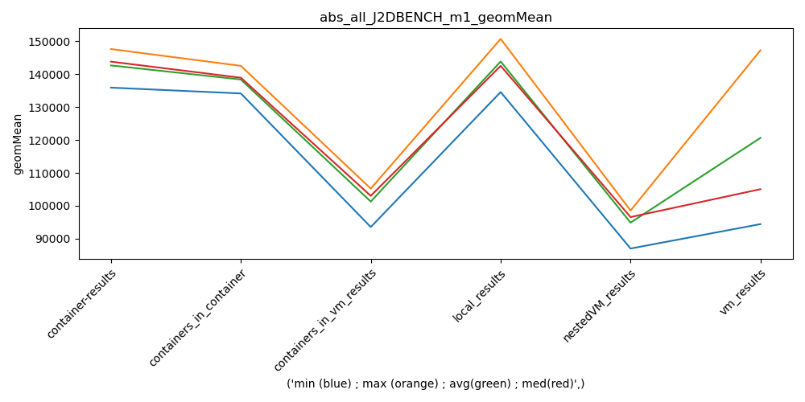
all runs of one jdk were made AVARAGE before processing
j2dbench.geom
all J2DBENCH j2dbench.geom where all runs of one jdk were made AVARAGE before processing
MIN 139277.4 container-results
MIN 134820.6 containers_in_container
MIN 94757.0 containers_in_vm_results
MIN 136486.8 local_results
MIN 89514.4 nestedVM_results
MIN 132602.4 vm_results
MAX 146767.8 container-results
MAX 142234.0 containers_in_container
MAX 104020.2 containers_in_vm_results
MAX 150637.0 local_results
MAX 97991.8 nestedVM_results
MAX 147037.8 vm_results
AVG 143714.62105263156 container-results
AVG 139237.75789473683 containers_in_container
AVG 100316.5798245614 containers_in_vm_results
AVG 143786.7411764706 local_results
AVG 94165.54117647058 nestedVM_results
AVG 140026.34705882354 vm_results
MED 143944.6 container-results
MED 139608.2 containers_in_container
MED 102841.0 containers_in_vm_results
MED 146536.4 local_results
MED 96459.2 nestedVM_results
MED 142996.4 vm_results
geomMean of all keys (benchmark meassured relativre accuracy)
{'MIN': [139277.4, 134820.6, 94757.0, 136486.8, 89514.4, 132602.4], 'MAX': [146767.8, 142234.0, 104020.2, 150637.0, 97991.8, 147037.8], 'AVG': [143714.62105263156, 139237.75789473683, 100316.5798245614, 143786.7411764706, 94165.54117647058, 140026.34705882354], 'MED': [143944.6, 139608.2, 102841.0, 146536.4, 96459.2, 142996.4]}
all J2DBENCH geomMean where all runs of one jdk were made AVARAGE before processing
MIN 139277.4 container-results
MIN 134820.6 containers_in_container
MIN 94757.0 containers_in_vm_results
MIN 136486.8 local_results
MIN 89514.4 nestedVM_results
MIN 132602.4 vm_results
MAX 146767.8 container-results
MAX 142234.0 containers_in_container
MAX 104020.2 containers_in_vm_results
MAX 150637.0 local_results
MAX 97991.8 nestedVM_results
MAX 147037.8 vm_results
AVG 143714.62105263156 container-results
AVG 139237.75789473683 containers_in_container
AVG 100316.5798245614 containers_in_vm_results
AVG 143786.7411764706 local_results
AVG 94165.54117647058 nestedVM_results
AVG 140026.34705882354 vm_results
MED 143944.6 container-results
MED 139608.2 containers_in_container
MED 102841.0 containers_in_vm_results
MED 146536.4 local_results
MED 96459.2 nestedVM_results
MED 142996.4 vm_results

all runs of one jdk were made MEDIAN before processing
j2dbench.geom
all J2DBENCH j2dbench.geom where all runs of one jdk were made MEDIAN before processing
MIN 139241.0 container-results
MIN 134825.0 containers_in_container
MIN 94445.0 containers_in_vm_results
MIN 136016.0 local_results
MIN 89074.0 nestedVM_results
MIN 132314.0 vm_results
MAX 146740.0 container-results
MAX 142287.0 containers_in_container
MAX 104241.0 containers_in_vm_results
MAX 150697.0 local_results
MAX 98073.0 nestedVM_results
MAX 147141.0 vm_results
AVG 143716.47368421053 container-results
AVG 139238.63157894736 containers_in_container
AVG 100379.63157894737 containers_in_vm_results
AVG 143885.82352941178 local_results
AVG 94193.35294117648 nestedVM_results
AVG 140152.23529411765 vm_results
MED 143973.0 container-results
MED 139626.0 containers_in_container
MED 102797.0 containers_in_vm_results
MED 146488.0 local_results
MED 96410.0 nestedVM_results
MED 142993.0 vm_results

geomMean of all keys (benchmark meassured relativre accuracy)
{'MIN': [139241.0, 134825.0, 94445.0, 136016.0, 89074.0, 132314.0], 'MAX': [146740.0, 142287.0, 104241.0, 150697.0, 98073.0, 147141.0], 'AVG': [143716.47368421053, 139238.63157894736, 100379.63157894737, 143885.82352941178, 94193.35294117648, 140152.23529411765], 'MED': [143973.0, 139626.0, 102797.0, 146488.0, 96410.0, 142993.0]}
all J2DBENCH geomMean where all runs of one jdk were made MEDIAN before processing
MIN 139241.0 container-results
MIN 134825.0 containers_in_container
MIN 94445.0 containers_in_vm_results
MIN 136016.0 local_results
MIN 89074.0 nestedVM_results
MIN 132314.0 vm_results
MAX 146740.0 container-results
MAX 142287.0 containers_in_container
MAX 104241.0 containers_in_vm_results
MAX 150697.0 local_results
MAX 98073.0 nestedVM_results
MAX 147141.0 vm_results
AVG 143716.47368421053 container-results
AVG 139238.63157894736 containers_in_container
AVG 100379.63157894737 containers_in_vm_results
AVG 143885.82352941178 local_results
AVG 94193.35294117648 nestedVM_results
AVG 140152.23529411765 vm_results
MED 143973.0 container-results
MED 139626.0 containers_in_container
MED 102797.0 containers_in_vm_results
MED 146488.0 local_results
MED 96410.0 nestedVM_results
MED 142993.0 vm_results

geomMean of all metrics from geomMean of all keys
{'MIN': [139203.77715363886, 134770.1794532292, 94244.23814463214, 135691.8378798464, 88839.64507792256, 132169.11756736992], 'MAX': [146800.91782861715, 142351.93956494966, 104350.56243385527, 150689.32803224502, 98204.95711809296, 147154.23204482588], 'AVG': [143715.23859383757, 139235.78211204952, 100382.67064032295, 143819.76104403182, 94174.81085216705, 140056.4230177747], 'MED': [143933.8618802116, 139620.06641451485, 102769.9750613671, 146504.13155682816, 96372.69151045344, 142958.79097650017]}
all J2DBENCH geomMean geomMean
MIN 139203.77715363886 container-results
MIN 134770.1794532292 containers_in_container
MIN 94244.23814463214 containers_in_vm_results
MIN 135691.8378798464 local_results
MIN 88839.64507792256 nestedVM_results
MIN 132169.11756736992 vm_results
MAX 146800.91782861715 container-results
MAX 142351.93956494966 containers_in_container
MAX 104350.56243385527 containers_in_vm_results
MAX 150689.32803224502 local_results
MAX 98204.95711809296 nestedVM_results
MAX 147154.23204482588 vm_results
AVG 143715.23859383757 container-results
AVG 139235.78211204952 containers_in_container
AVG 100382.67064032295 containers_in_vm_results
AVG 143819.76104403182 local_results
AVG 94174.81085216705 nestedVM_results
AVG 140056.4230177747 vm_results
MED 143933.8618802116 container-results
MED 139620.06641451485 containers_in_container
MED 102769.9750613671 containers_in_vm_results
MED 146504.13155682816 local_results
MED 96372.69151045344 nestedVM_results
MED 142958.79097650017 vm_results

JMH
all runs of one jdk are treated as INDIVIDUAL items
geom
all JMH geom where all runs of one jdk are treated as INDIVIDUAL items
MIN 397.0 container-results
MIN 402.0 containers_in_container
MIN 324.0 containers_in_vm_results
MIN 401.0 local_results
MIN 324.0 nestedVM_results
MIN 345.0 vm_results
MAX 439.0 container-results
MAX 439.0 containers_in_container
MAX 357.0 containers_in_vm_results
MAX 465.0 local_results
MAX 349.0 nestedVM_results
MAX 372.0 vm_results
AVG 426.0315789473684 container-results
AVG 426.9684210526316 containers_in_container
AVG 337.39784946236557 containers_in_vm_results
AVG 425.5052631578947 local_results
AVG 340.6847826086956 nestedVM_results
AVG 362.6421052631579 vm_results
MED 427.0 container-results
MED 427.0 containers_in_container
MED 336.0 containers_in_vm_results
MED 424.0 local_results
MED 342.0 nestedVM_results
MED 363.0 vm_results

geomMean of all keys (benchmark meassured relativre accuracy)
{'MIN': [397.0, 402.0, 324.0, 401.0, 324.0, 345.0], 'MAX': [439.0, 439.0, 357.0, 465.0, 349.0, 372.0], 'AVG': [426.0315789473684, 426.9684210526316, 337.39784946236557, 425.5052631578947, 340.6847826086956, 362.6421052631579], 'MED': [427.0, 427.0, 336.0, 424.0, 342.0, 363.0]}
all JMH geomMean where all runs of one jdk are treated as INDIVIDUAL items
MIN 397.0 container-results
MIN 402.0 containers_in_container
MIN 324.0 containers_in_vm_results
MIN 401.0 local_results
MIN 324.0 nestedVM_results
MIN 345.0 vm_results
MAX 439.0 container-results
MAX 439.0 containers_in_container
MAX 357.0 containers_in_vm_results
MAX 465.0 local_results
MAX 349.0 nestedVM_results
MAX 372.0 vm_results
AVG 426.0315789473684 container-results
AVG 426.9684210526316 containers_in_container
AVG 337.39784946236557 containers_in_vm_results
AVG 425.5052631578947 local_results
AVG 340.6847826086956 nestedVM_results
AVG 362.6421052631579 vm_results
MED 427.0 container-results
MED 427.0 containers_in_container
MED 336.0 containers_in_vm_results
MED 424.0 local_results
MED 342.0 nestedVM_results
MED 363.0 vm_results
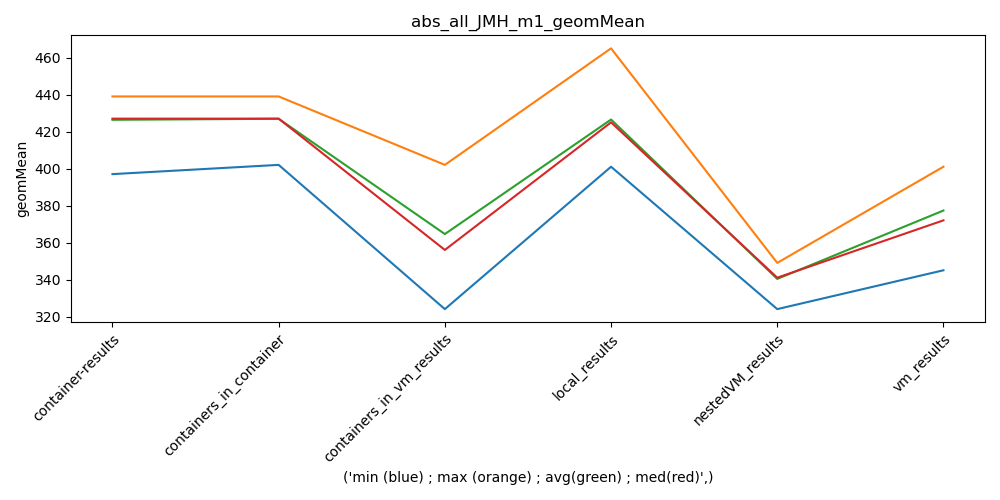
all runs of one jdk were made AVARAGE before processing
geom
all JMH geom where all runs of one jdk were made AVARAGE before processing
MIN 398.8 container-results
MIN 404.0 containers_in_container
MIN 327.0 containers_in_vm_results
MIN 404.0 local_results
MIN 324.75 nestedVM_results
MIN 345.8 vm_results
MAX 436.6 container-results
MAX 436.6 containers_in_container
MAX 355.8 containers_in_vm_results
MAX 439.6 local_results
MAX 347.8 nestedVM_results
MAX 371.4 vm_results
AVG 426.0315789473684 container-results
AVG 426.9684210526316 containers_in_container
AVG 337.32631578947365 containers_in_vm_results
AVG 425.5052631578948 local_results
AVG 340.5815789473684 nestedVM_results
AVG 362.6421052631579 vm_results
MED 427.2 container-results
MED 426.8 containers_in_container
MED 336.4 containers_in_vm_results
MED 424.2 local_results
MED 341.25 nestedVM_results
MED 363.6 vm_results

geomMean of all keys (benchmark meassured relativre accuracy)
{'MIN': [398.8, 404.0, 327.0, 404.0, 324.75, 345.8], 'MAX': [436.6, 436.6, 355.8, 439.6, 347.8, 371.4], 'AVG': [426.0315789473684, 426.9684210526316, 337.32631578947365, 425.5052631578948, 340.5815789473684, 362.6421052631579], 'MED': [427.2, 426.8, 336.4, 424.2, 341.25, 363.6]}
all JMH geomMean where all runs of one jdk were made AVARAGE before processing
MIN 398.8 container-results
MIN 404.0 containers_in_container
MIN 327.0 containers_in_vm_results
MIN 404.0 local_results
MIN 324.75 nestedVM_results
MIN 345.8 vm_results
MAX 436.6 container-results
MAX 436.6 containers_in_container
MAX 355.8 containers_in_vm_results
MAX 439.6 local_results
MAX 347.8 nestedVM_results
MAX 371.4 vm_results
AVG 426.0315789473684 container-results
AVG 426.9684210526316 containers_in_container
AVG 337.32631578947365 containers_in_vm_results
AVG 425.5052631578948 local_results
AVG 340.5815789473684 nestedVM_results
AVG 362.6421052631579 vm_results
MED 427.2 container-results
MED 426.8 containers_in_container
MED 336.4 containers_in_vm_results
MED 424.2 local_results
MED 341.25 nestedVM_results
MED 363.6 vm_results

all runs of one jdk were made MEDIAN before processing
geom
all JMH geom where all runs of one jdk were made MEDIAN before processing
MIN 399.0 container-results
MIN 404.0 containers_in_container
MIN 326.0 containers_in_vm_results
MIN 405.0 local_results
MIN 325.0 nestedVM_results
MIN 346.0 vm_results
MAX 437.0 container-results
MAX 436.0 containers_in_container
MAX 356.0 containers_in_vm_results
MAX 436.0 local_results
MAX 348.0 nestedVM_results
MAX 372.0 vm_results
AVG 426.42105263157896 container-results
AVG 426.8421052631579 containers_in_container
AVG 336.94736842105266 containers_in_vm_results
AVG 424.7368421052632 local_results
AVG 340.7894736842105 nestedVM_results
AVG 362.7368421052632 vm_results
MED 427.0 container-results
MED 427.0 containers_in_container
MED 335.0 containers_in_vm_results
MED 424.0 local_results
MED 342.0 nestedVM_results
MED 363.0 vm_results
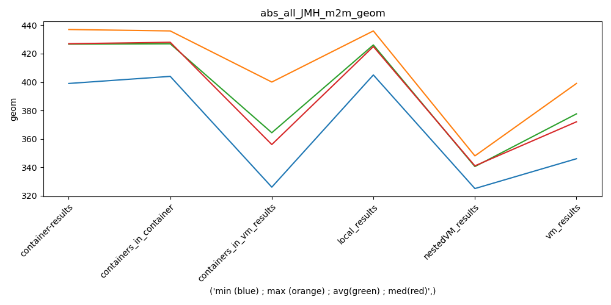
geomMean of all keys (benchmark meassured relativre accuracy)
{'MIN': [399.0, 404.0, 326.0, 405.0, 325.0, 346.0], 'MAX': [437.0, 436.0, 356.0, 436.0, 348.0, 372.0], 'AVG': [426.42105263157896, 426.8421052631579, 336.94736842105266, 424.7368421052632, 340.7894736842105, 362.7368421052632], 'MED': [427.0, 427.0, 335.0, 424.0, 342.0, 363.0]}
all JMH geomMean where all runs of one jdk were made MEDIAN before processing
MIN 399.0 container-results
MIN 404.0 containers_in_container
MIN 326.0 containers_in_vm_results
MIN 405.0 local_results
MIN 325.0 nestedVM_results
MIN 346.0 vm_results
MAX 437.0 container-results
MAX 436.0 containers_in_container
MAX 356.0 containers_in_vm_results
MAX 436.0 local_results
MAX 348.0 nestedVM_results
MAX 372.0 vm_results
AVG 426.42105263157896 container-results
AVG 426.8421052631579 containers_in_container
AVG 336.94736842105266 containers_in_vm_results
AVG 424.7368421052632 local_results
AVG 340.7894736842105 nestedVM_results
AVG 362.7368421052632 vm_results
MED 427.0 container-results
MED 427.0 containers_in_container
MED 335.0 containers_in_vm_results
MED 424.0 local_results
MED 342.0 nestedVM_results
MED 363.0 vm_results
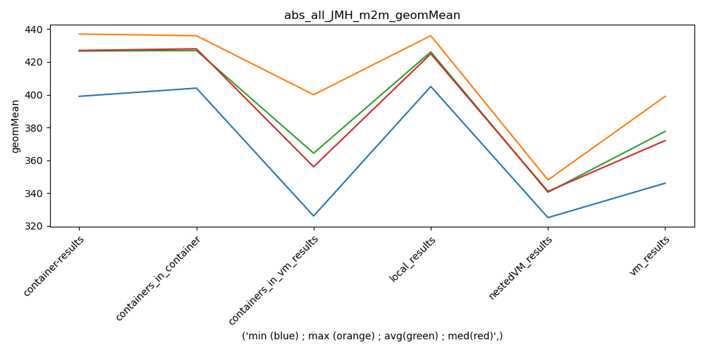
geomMean of all metrics from geomMean of all keys
{'MIN': [398.2656501113081, 403.33223018769525, 325.66427605764414, 403.3297467218951, 324.5830550705661, 345.59972980410106], 'MAX': [437.532075014371, 437.1980809341795, 356.26628017936576, 446.6826067923442, 348.26627130701513, 371.79989237666416], 'AVG': [426.1613639674262, 426.9263116366029, 337.22378661077346, 425.24896846396365, 340.6852678413757, 362.67368146102416], 'MED': [427.0666562608391, 426.9333229220889, 335.7994835351551, 424.06665618723224, 341.749817028489, 363.1998899082382]}
all JMH geomMean geomMean
MIN 398.2656501113081 container-results
MIN 403.33223018769525 containers_in_container
MIN 325.66427605764414 containers_in_vm_results
MIN 403.3297467218951 local_results
MIN 324.5830550705661 nestedVM_results
MIN 345.59972980410106 vm_results
MAX 437.532075014371 container-results
MAX 437.1980809341795 containers_in_container
MAX 356.26628017936576 containers_in_vm_results
MAX 446.6826067923442 local_results
MAX 348.26627130701513 nestedVM_results
MAX 371.79989237666416 vm_results
AVG 426.1613639674262 container-results
AVG 426.9263116366029 containers_in_container
AVG 337.22378661077346 containers_in_vm_results
AVG 425.24896846396365 local_results
AVG 340.6852678413757 nestedVM_results
AVG 362.67368146102416 vm_results
MED 427.0666562608391 container-results
MED 426.9333229220889 containers_in_container
MED 335.7994835351551 containers_in_vm_results
MED 424.06665618723224 local_results
MED 341.749817028489 nestedVM_results
MED 363.1998899082382 vm_results
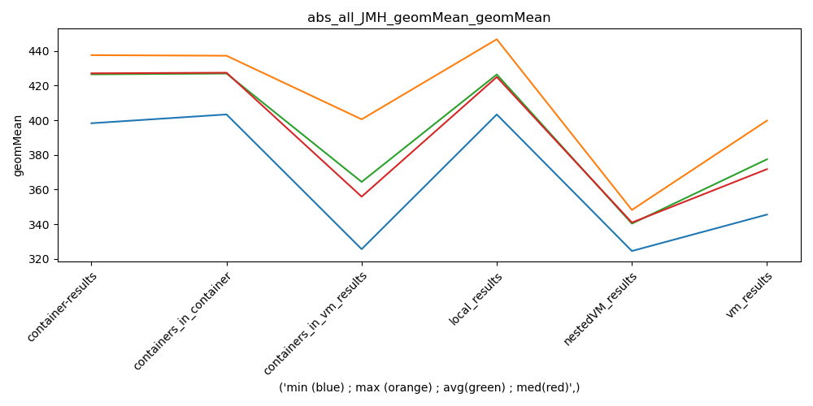
RADARGUNs1
all runs of one jdk are treated as INDIVIDUAL items
BasicOperations.Put.Throughput=
all RADARGUNs1 BasicOperations.Put.Throughput= where all runs of one jdk are treated as INDIVIDUAL items
MIN 662072.0 container-results
MIN 672844.0 containers_in_container
MIN 481848.0 containers_in_vm_results
MIN 689797.0 local_results
MIN 167528.0 nestedVM_results
MIN 510215.0 vm_results
MAX 845078.0 container-results
MAX 846769.0 containers_in_container
MAX 610754.0 containers_in_vm_results
MAX 838532.0 local_results
MAX 179566.0 nestedVM_results
MAX 634818.0 vm_results
AVG 778113.2105263158 container-results
AVG 787535.9130434783 containers_in_container
AVG 562513.6736842105 containers_in_vm_results
AVG 784080.6470588235 local_results
AVG 174648.5157894737 nestedVM_results
AVG 583491.4421052631 vm_results
MED 787616.0 container-results
MED 803713.0 containers_in_container
MED 565932.0 containers_in_vm_results
MED 797614.0 local_results
MED 174931.0 nestedVM_results
MED 587289.0 vm_results

BasicOperations.Get.Throughput=
all RADARGUNs1 BasicOperations.Get.Throughput= where all runs of one jdk are treated as INDIVIDUAL items
MIN 2648167.0 container-results
MIN 2691672.0 containers_in_container
MIN 1927367.0 containers_in_vm_results
MIN 2759139.0 local_results
MIN 670113.0 nestedVM_results
MIN 2040746.0 vm_results
MAX 3380336.0 container-results
MAX 3386946.0 containers_in_container
MAX 2442800.0 containers_in_vm_results
MAX 3353942.0 local_results
MAX 718321.0 nestedVM_results
MAX 2539158.0 vm_results
AVG 3112453.094736842 container-results
AVG 3150139.815217391 containers_in_container
AVG 2250058.642105263 containers_in_vm_results
AVG 3136321.6352941175 local_results
AVG 698578.7368421053 nestedVM_results
AVG 2333973.094736842 vm_results
MED 3150473.0 container-results
MED 3214662.0 containers_in_container
MED 2263870.0 containers_in_vm_results
MED 3190506.0 local_results
MED 699673.0 nestedVM_results
MED 2349138.0 vm_results

geomMean of all keys (benchmark meassured relativre accuracy)
{'MIN': [1324113.7496544623, 1345761.9979654648, 963689.7499797328, 1379581.749945613, 335056.24999990675, 1020401.4996019949], 'MAX': [1690161.99998935, 1693505.4996881469, 1221453.9988063406, 1677017.4993553287, 359146.2497172983, 1269607.4996801177], 'AVG': [1556226.484210525, 1575070.866847534, 1125028.3342100936, 1568161.0558823347, 349293.1999789847, 1166984.7157880364], 'MED': [1575234.249998393, 1607378.4992981586, 1131899.499443303, 1595240.4999510262, 349849.2497676678, 1174573.49999138]}
all RADARGUNs1 geomMean where all runs of one jdk are treated as INDIVIDUAL items
MIN 1324113.7496544623 container-results
MIN 1345761.9979654648 containers_in_container
MIN 963689.7499797328 containers_in_vm_results
MIN 1379581.749945613 local_results
MIN 335056.24999990675 nestedVM_results
MIN 1020401.4996019949 vm_results
MAX 1690161.99998935 container-results
MAX 1693505.4996881469 containers_in_container
MAX 1221453.9988063406 containers_in_vm_results
MAX 1677017.4993553287 local_results
MAX 359146.2497172983 nestedVM_results
MAX 1269607.4996801177 vm_results
AVG 1556226.484210525 container-results
AVG 1575070.866847534 containers_in_container
AVG 1125028.3342100936 containers_in_vm_results
AVG 1568161.0558823347 local_results
AVG 349293.1999789847 nestedVM_results
AVG 1166984.7157880364 vm_results
MED 1575234.249998393 container-results
MED 1607378.4992981586 containers_in_container
MED 1131899.499443303 containers_in_vm_results
MED 1595240.4999510262 local_results
MED 349849.2497676678 nestedVM_results
MED 1174573.49999138 vm_results
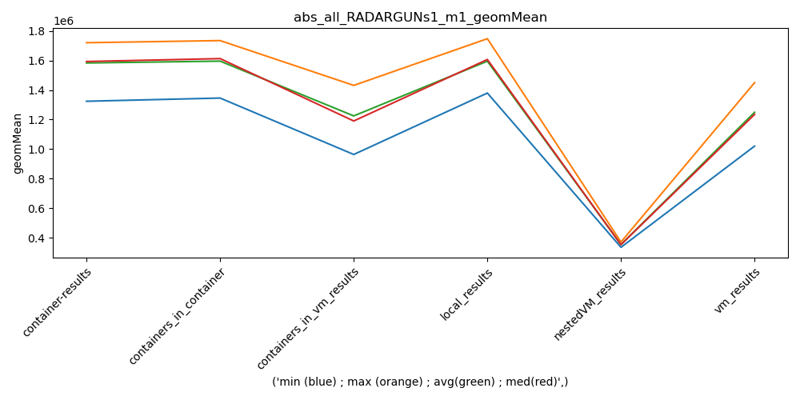
all runs of one jdk were made AVARAGE before processing
BasicOperations.Put.Throughput=
all RADARGUNs1 BasicOperations.Put.Throughput= where all runs of one jdk were made AVARAGE before processing
MIN 715324.8 container-results
MIN 730686.2 containers_in_container
MIN 540041.6 containers_in_vm_results
MIN 730628.0 local_results
MIN 171766.8 nestedVM_results
MIN 549914.4 vm_results
MAX 816881.2 container-results
MAX 825771.6 containers_in_container
MAX 587418.6 containers_in_vm_results
MAX 822873.2 local_results
MAX 177064.6 nestedVM_results
MAX 611807.8 vm_results
AVG 778113.2105263158 container-results
AVG 787169.4105263158 containers_in_container
AVG 562513.6736842105 containers_in_vm_results
AVG 784080.6470588235 local_results
AVG 174648.51578947366 nestedVM_results
AVG 583491.4421052631 vm_results
MED 788026.0 container-results
MED 789874.6 containers_in_container
MED 563812.0 containers_in_vm_results
MED 793438.8 local_results
MED 174825.8 nestedVM_results
MED 588933.8 vm_results

BasicOperations.Get.Throughput=
all RADARGUNs1 BasicOperations.Get.Throughput= where all runs of one jdk were made AVARAGE before processing
MIN 2861303.6 container-results
MIN 2922637.0 containers_in_container
MIN 2160122.2 containers_in_vm_results
MIN 2922411.2 local_results
MIN 687070.6 nestedVM_results
MIN 2199656.2 vm_results
MAX 3267600.0 container-results
MAX 3303063.8 containers_in_container
MAX 2349744.0 containers_in_vm_results
MAX 3291557.6 local_results
MAX 708263.2 nestedVM_results
MAX 2447311.6 vm_results
AVG 3112453.0947368424 container-results
AVG 3148666.2684210525 containers_in_container
AVG 2250058.642105263 containers_in_vm_results
AVG 3136321.6352941175 local_results
AVG 698578.7368421053 nestedVM_results
AVG 2333973.0947368424 vm_results
MED 3152173.6 container-results
MED 3159471.8 containers_in_container
MED 2255263.6 containers_in_vm_results
MED 3173820.2 local_results
MED 699269.4 nestedVM_results
MED 2355622.6 vm_results

geomMean of all keys (benchmark meassured relativre accuracy)
{'MIN': [1430650.6999995771, 1461345.4497514952, 1080072.149943475, 1461230.7997827039, 343534.44999894843, 1099828.4499999445], 'MAX': [1633781.1998918338, 1651537.5499903355, 1174854.59987115, 1645762.599920268, 354130.39999796683, 1223635.6998349142], 'AVG': [1556226.4842105252, 1574335.977629011, 1125028.3342100936, 1568161.0558823347, 349293.1999789847, 1166984.7157880364], 'MED': [1576069.399903951, 1579742.5499860032, 1127627.8999932557, 1586893.849916799, 349643.1498978923, 1177839.4496636118]}
all RADARGUNs1 geomMean where all runs of one jdk were made AVARAGE before processing
MIN 1430650.6999995771 container-results
MIN 1461345.4497514952 containers_in_container
MIN 1080072.149943475 containers_in_vm_results
MIN 1461230.7997827039 local_results
MIN 343534.44999894843 nestedVM_results
MIN 1099828.4499999445 vm_results
MAX 1633781.1998918338 container-results
MAX 1651537.5499903355 containers_in_container
MAX 1174854.59987115 containers_in_vm_results
MAX 1645762.599920268 local_results
MAX 354130.39999796683 nestedVM_results
MAX 1223635.6998349142 vm_results
AVG 1556226.4842105252 container-results
AVG 1574335.977629011 containers_in_container
AVG 1125028.3342100936 containers_in_vm_results
AVG 1568161.0558823347 local_results
AVG 349293.1999789847 nestedVM_results
AVG 1166984.7157880364 vm_results
MED 1576069.399903951 container-results
MED 1579742.5499860032 containers_in_container
MED 1127627.8999932557 containers_in_vm_results
MED 1586893.849916799 local_results
MED 349643.1498978923 nestedVM_results
MED 1177839.4496636118 vm_results
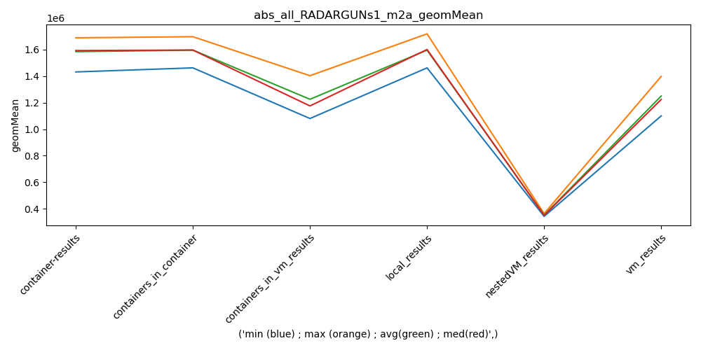
all runs of one jdk were made MEDIAN before processing
BasicOperations.Put.Throughput=
all RADARGUNs1 BasicOperations.Put.Throughput= where all runs of one jdk were made MEDIAN before processing
MIN 696475.0 container-results
MIN 695902.0 containers_in_container
MIN 544648.0 containers_in_vm_results
MIN 721604.0 local_results
MIN 171959.0 nestedVM_results
MIN 545652.0 vm_results
MAX 820007.0 container-results
MAX 828964.0 containers_in_container
MAX 585241.0 containers_in_vm_results
MAX 822151.0 local_results
MAX 177686.0 nestedVM_results
MAX 621959.0 vm_results
AVG 779828.7368421053 container-results
AVG 795505.2631578947 containers_in_container
AVG 566419.947368421 containers_in_vm_results
AVG 789499.9411764706 local_results
AVG 175241.52631578947 nestedVM_results
AVG 585015.2631578947 vm_results
MED 796587.0 container-results
MED 801977.0 containers_in_container
MED 568478.0 containers_in_vm_results
MED 798340.0 local_results
MED 175017.0 nestedVM_results
MED 587088.0 vm_results

BasicOperations.Get.Throughput=
all RADARGUNs1 BasicOperations.Get.Throughput= where all runs of one jdk were made MEDIAN before processing
MIN 2785919.0 container-results
MIN 2783345.0 containers_in_container
MIN 2178538.0 containers_in_vm_results
MIN 2886224.0 local_results
MIN 687754.0 nestedVM_results
MIN 2182818.0 vm_results
MAX 3280509.0 container-results
MAX 3315766.0 containers_in_container
MAX 2340981.0 containers_in_vm_results
MAX 3288899.0 local_results
MAX 710615.0 nestedVM_results
MAX 2487703.0 vm_results
AVG 3119340.263157895 container-results
AVG 3182000.210526316 containers_in_container
AVG 2265675.6842105263 containers_in_vm_results
AVG 3157947.0588235296 local_results
AVG 700935.8947368421 nestedVM_results
AVG 2340093.6842105263 vm_results
MED 3186448.0 container-results
MED 3208048.0 containers_in_container
MED 2273994.0 containers_in_vm_results
MED 3193267.0 local_results
MED 699951.0 nestedVM_results
MED 2348213.0 vm_results

geomMean of all keys (benchmark meassured relativre accuracy)
{'MIN': [1392954.7499919012, 1391738.2484468839, 1089282.499916344, 1443159.9992017518, 343897.49938898947, 1091356.4987372367], 'MAX': [1640134.2455918053, 1657905.4998473225, 1170486.2499922842, 1644375.7483461618, 355339.74853652384, 1243884.7495556008], 'AVG': [1559663.802618738, 1591005.3157809414, 1132838.8684205876, 1578986.705827375, 350475.4999186217, 1170038.6841820865], 'MED': [1593198.9998038537, 1603988.9996181396, 1136976.4998151897, 1596656.7498307205, 350004.74877778447, 1174141.2494857677]}
all RADARGUNs1 geomMean where all runs of one jdk were made MEDIAN before processing
MIN 1392954.7499919012 container-results
MIN 1391738.2484468839 containers_in_container
MIN 1089282.499916344 containers_in_vm_results
MIN 1443159.9992017518 local_results
MIN 343897.49938898947 nestedVM_results
MIN 1091356.4987372367 vm_results
MAX 1640134.2455918053 container-results
MAX 1657905.4998473225 containers_in_container
MAX 1170486.2499922842 containers_in_vm_results
MAX 1644375.7483461618 local_results
MAX 355339.74853652384 nestedVM_results
MAX 1243884.7495556008 vm_results
AVG 1559663.802618738 container-results
AVG 1591005.3157809414 containers_in_container
AVG 1132838.8684205876 containers_in_vm_results
AVG 1578986.705827375 local_results
AVG 350475.4999186217 nestedVM_results
AVG 1170038.6841820865 vm_results
MED 1593198.9998038537 container-results
MED 1603988.9996181396 containers_in_container
MED 1136976.4998151897 containers_in_vm_results
MED 1596656.7498307205 local_results
MED 350004.74877778447 nestedVM_results
MED 1174141.2494857677 vm_results
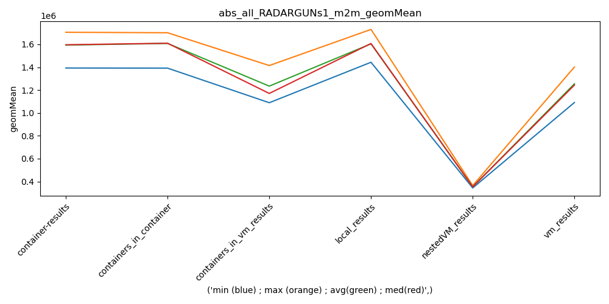
geomMean of all metrics from geomMean of all keys
{'MIN': [1381864.0075634322, 1398812.7160153524, 1042741.9473483306, 1427557.4024393747, 340804.78113298153, 1069927.1930201969], 'MAX': [1654501.663112605, 1667547.749813445, 1188709.8219931943, 1655650.3124092428, 356199.06801717257, 1245567.459801393], 'AVG': [1557371.4144708768, 1580118.7137321676, 1127625.8437660723, 1571761.3338050195, 349686.85613863537, 1168001.818524293], 'MED': [1581479.2669650775, 1596989.1004998675, 1132161.5191749746, 1592924.535841515, 349832.35146287765, 1175516.9078098752]}
all RADARGUNs1 geomMean geomMean
MIN 1381864.0075634322 container-results
MIN 1398812.7160153524 containers_in_container
MIN 1042741.9473483306 containers_in_vm_results
MIN 1427557.4024393747 local_results
MIN 340804.78113298153 nestedVM_results
MIN 1069927.1930201969 vm_results
MAX 1654501.663112605 container-results
MAX 1667547.749813445 containers_in_container
MAX 1188709.8219931943 containers_in_vm_results
MAX 1655650.3124092428 local_results
MAX 356199.06801717257 nestedVM_results
MAX 1245567.459801393 vm_results
AVG 1557371.4144708768 container-results
AVG 1580118.7137321676 containers_in_container
AVG 1127625.8437660723 containers_in_vm_results
AVG 1571761.3338050195 local_results
AVG 349686.85613863537 nestedVM_results
AVG 1168001.818524293 vm_results
MED 1581479.2669650775 container-results
MED 1596989.1004998675 containers_in_container
MED 1132161.5191749746 containers_in_vm_results
MED 1592924.535841515 local_results
MED 349832.35146287765 nestedVM_results
MED 1175516.9078098752 vm_results
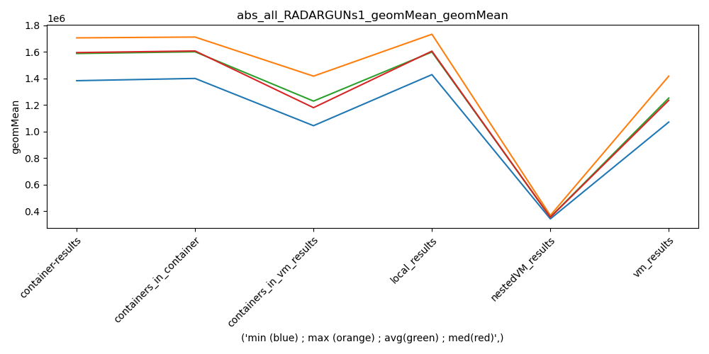
RADARGUNs3
all runs of one jdk are treated as INDIVIDUAL items
BasicOperations.Put.Throughput=
all RADARGUNs3 BasicOperations.Put.Throughput= where all runs of one jdk are treated as INDIVIDUAL items
MIN 21927.0 container-results
MIN 20898.0 containers_in_container
MIN 8803.0 containers_in_vm_results
MIN 21326.0 local_results
MIN 4782.0 nestedVM_results
MIN 11268.0 vm_results
MAX 24264.0 container-results
MAX 22989.0 containers_in_container
MAX 9768.0 containers_in_vm_results
MAX 24665.0 local_results
MAX 6728.0 nestedVM_results
MAX 13360.0 vm_results
AVG 22957.4 container-results
AVG 21803.63157894737 containers_in_container
AVG 9258.307692307691 containers_in_vm_results
AVG 22937.61176470588 local_results
AVG 5388.872340425532 nestedVM_results
AVG 12408.021052631579 vm_results
MED 22683.0 container-results
MED 21626.0 containers_in_container
MED 9269.0 containers_in_vm_results
MED 23007.0 local_results
MED 5090.0 nestedVM_results
MED 12405.0 vm_results

BasicOperations.Get.Throughput=
all RADARGUNs3 BasicOperations.Get.Throughput= where all runs of one jdk are treated as INDIVIDUAL items
MIN 87739.0 container-results
MIN 83610.0 containers_in_container
MIN 35188.0 containers_in_vm_results
MIN 85316.0 local_results
MIN 19147.0 nestedVM_results
MIN 45073.0 vm_results
MAX 97058.0 container-results
MAX 91939.0 containers_in_container
MAX 39074.0 containers_in_vm_results
MAX 98653.0 local_results
MAX 26898.0 nestedVM_results
MAX 53433.0 vm_results
AVG 91833.33684210526 container-results
AVG 87214.13684210526 containers_in_container
AVG 37034.131868131866 containers_in_vm_results
AVG 91749.92941176471 local_results
AVG 21558.031914893618 nestedVM_results
AVG 49634.70526315789 vm_results
MED 90814.0 container-results
MED 86493.0 containers_in_container
MED 37066.0 containers_in_vm_results
MED 92024.0 local_results
MED 20365.0 nestedVM_results
MED 49615.0 vm_results
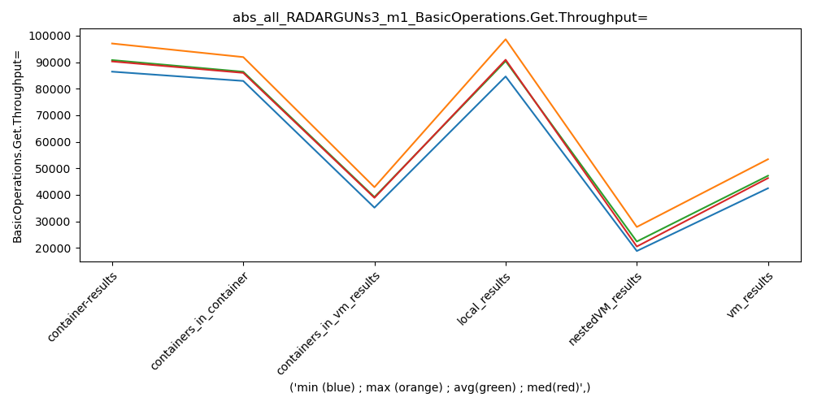
geomMean of all keys (benchmark meassured relativre accuracy)
{'MIN': [43861.74931532029, 41800.499757778016, 17599.9989772727, 42654.999894502405, 9568.748821031933, 22536.249998613344], 'MAX': [48528.499997424195, 45973.74980355638, 19536.49999360172, 49328.24996895795, 13452.499544694287, 26718.249942688984], 'AVG': [45915.734201022504, 43607.16578936498, 18516.84065797032, 45875.09411746453, 10778.380300406043, 24816.697359770227], 'MED': [45386.495370319135, 43249.24991257074, 18535.499831404602, 46012.9999891335, 10181.249923265807, 24808.749968509095]}
all RADARGUNs3 geomMean where all runs of one jdk are treated as INDIVIDUAL items
MIN 43861.74931532029 container-results
MIN 41800.499757778016 containers_in_container
MIN 17599.9989772727 containers_in_vm_results
MIN 42654.999894502405 local_results
MIN 9568.748821031933 nestedVM_results
MIN 22536.249998613344 vm_results
MAX 48528.499997424195 container-results
MAX 45973.74980355638 containers_in_container
MAX 19536.49999360172 containers_in_vm_results
MAX 49328.24996895795 local_results
MAX 13452.499544694287 nestedVM_results
MAX 26718.249942688984 vm_results
AVG 45915.734201022504 container-results
AVG 43607.16578936498 containers_in_container
AVG 18516.84065797032 containers_in_vm_results
AVG 45875.09411746453 local_results
AVG 10778.380300406043 nestedVM_results
AVG 24816.697359770227 vm_results
MED 45386.495370319135 container-results
MED 43249.24991257074 containers_in_container
MED 18535.499831404602 containers_in_vm_results
MED 46012.9999891335 local_results
MED 10181.249923265807 nestedVM_results
MED 24808.749968509095 vm_results
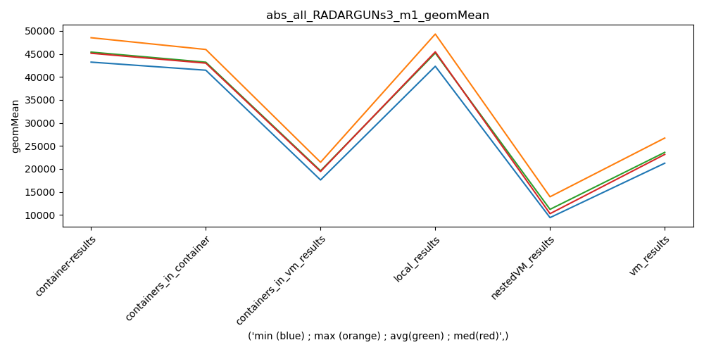
all runs of one jdk were made AVARAGE before processing
BasicOperations.Put.Throughput=
all RADARGUNs3 BasicOperations.Put.Throughput= where all runs of one jdk were made AVARAGE before processing
MIN 22095.6 container-results
MIN 21041.6 containers_in_container
MIN 8972.8 containers_in_vm_results
MIN 21538.4 local_results
MIN 4919.8 nestedVM_results
MIN 11644.8 vm_results
MAX 24135.4 container-results
MAX 22870.8 containers_in_container
MAX 9568.333333333334 containers_in_vm_results
MAX 24507.2 local_results
MAX 6474.4 nestedVM_results
MAX 12977.6 vm_results
AVG 22957.399999999998 container-results
AVG 21803.63157894737 containers_in_container
AVG 9262.20350877193 containers_in_vm_results
AVG 22937.611764705885 local_results
AVG 5384.4236842105265 nestedVM_results
AVG 12408.021052631579 vm_results
MED 22755.0 container-results
MED 21635.8 containers_in_container
MED 9281.6 containers_in_vm_results
MED 22999.8 local_results
MED 5082.6 nestedVM_results
MED 12426.6 vm_results

BasicOperations.Get.Throughput=
all RADARGUNs3 BasicOperations.Get.Throughput= where all runs of one jdk were made AVARAGE before processing
MIN 88372.6 container-results
MIN 84178.2 containers_in_container
MIN 35880.6 containers_in_vm_results
MIN 86153.2 local_results
MIN 19678.6 nestedVM_results
MIN 46586.4 vm_results
MAX 96547.0 container-results
MAX 91460.8 containers_in_container
MAX 38282.666666666664 containers_in_vm_results
MAX 98020.8 local_results
MAX 25901.6 nestedVM_results
MAX 51910.6 vm_results
AVG 91833.33684210526 container-results
AVG 87214.13684210526 containers_in_container
AVG 37050.11929824561 containers_in_vm_results
AVG 91749.92941176471 local_results
AVG 21540.223684210527 nestedVM_results
AVG 49634.7052631579 vm_results
MED 91027.4 container-results
MED 86544.6 containers_in_container
MED 37131.6 containers_in_vm_results
MED 92005.2 local_results
MED 20345.4 nestedVM_results
MED 49716.4 vm_results
geomMean of all keys (benchmark meassured relativre accuracy)
{'MIN': [44188.749932081126, 42086.14989661088, 17942.949804310327, 43076.69999988393, 9839.449998856644, 23291.39993044643], 'MAX': [48272.14998112266, 45735.99965716285, 19138.999857765702, 49012.399959194, 12949.799961389364, 25955.24999995184], 'AVG': [45915.7342010225, 43607.16578936498, 18524.733330459283, 45875.09411746453, 10769.479586705, 24816.697359770227], 'MED': [45511.8499623999, 43271.94999858453, 18564.499954483017, 46001.099975544064, 10168.949308556908, 24855.699874274313]}
all RADARGUNs3 geomMean where all runs of one jdk were made AVARAGE before processing
MIN 44188.749932081126 container-results
MIN 42086.14989661088 containers_in_container
MIN 17942.949804310327 containers_in_vm_results
MIN 43076.69999988393 local_results
MIN 9839.449998856644 nestedVM_results
MIN 23291.39993044643 vm_results
MAX 48272.14998112266 container-results
MAX 45735.99965716285 containers_in_container
MAX 19138.999857765702 containers_in_vm_results
MAX 49012.399959194 local_results
MAX 12949.799961389364 nestedVM_results
MAX 25955.24999995184 vm_results
AVG 45915.7342010225 container-results
AVG 43607.16578936498 containers_in_container
AVG 18524.733330459283 containers_in_vm_results
AVG 45875.09411746453 local_results
AVG 10769.479586705 nestedVM_results
AVG 24816.697359770227 vm_results
MED 45511.8499623999 container-results
MED 43271.94999858453 containers_in_container
MED 18564.499954483017 containers_in_vm_results
MED 46001.099975544064 local_results
MED 10168.949308556908 nestedVM_results
MED 24855.699874274313 vm_results
all runs of one jdk were made MEDIAN before processing
BasicOperations.Put.Throughput=
all RADARGUNs3 BasicOperations.Put.Throughput= where all runs of one jdk were made MEDIAN before processing
MIN 22107.0 container-results
MIN 21035.0 containers_in_container
MIN 8935.0 containers_in_vm_results
MIN 21502.0 local_results
MIN 4887.0 nestedVM_results
MIN 11584.0 vm_results
MAX 24143.0 container-results
MAX 22848.0 containers_in_container
MAX 9549.0 containers_in_vm_results
MAX 24458.0 local_results
MAX 6427.0 nestedVM_results
MAX 13100.0 vm_results
AVG 22955.36842105263 container-results
AVG 21804.42105263158 containers_in_container
AVG 9269.21052631579 containers_in_vm_results
AVG 22936.882352941175 local_results
AVG 5389.263157894737 nestedVM_results
AVG 12469.78947368421 vm_results
MED 22683.0 container-results
MED 21618.0 containers_in_container
MED 9310.0 containers_in_vm_results
MED 23023.0 local_results
MED 5083.0 nestedVM_results
MED 12469.0 vm_results
BasicOperations.Get.Throughput=
all RADARGUNs3 BasicOperations.Get.Throughput= where all runs of one jdk were made MEDIAN before processing
MIN 88380.0 container-results
MIN 84133.0 containers_in_container
MIN 35749.0 containers_in_vm_results
MIN 86045.0 local_results
MIN 19560.0 nestedVM_results
MIN 46355.0 vm_results
MAX 96570.0 container-results
MAX 91381.0 containers_in_container
MAX 38172.0 containers_in_vm_results
MAX 97812.0 local_results
MAX 25720.0 nestedVM_results
MAX 52408.0 vm_results
AVG 91824.68421052632 container-results
AVG 87212.21052631579 containers_in_container
AVG 37073.47368421053 containers_in_vm_results
AVG 91747.82352941176 local_results
AVG 21560.21052631579 nestedVM_results
AVG 49884.15789473684 vm_results
MED 90814.0 container-results
MED 86490.0 containers_in_container
MED 37238.0 containers_in_vm_results
MED 92095.0 local_results
MED 20328.0 nestedVM_results
MED 49881.0 vm_results

geomMean of all keys (benchmark meassured relativre accuracy)
{'MIN': [44201.9983711144, 42068.249963600814, 17872.249858369818, 43013.24900539368, 9776.999539736105, 23172.7495131674], 'MAX': [48285.49999741123, 45693.24991724708, 19091.99905719671, 48910.999744433764, 12856.999649996107, 26201.999923669948], 'AVG': [45911.53946666836, 43607.47366273971, 18537.578928241295, 45873.838235235184, 10779.315760563282, 24940.82891604428], 'MED': [45386.495370319135, 43240.49976584452, 18619.49999328661, 46046.749993892074, 10164.999950811609, 24939.249968673877]}
all RADARGUNs3 geomMean where all runs of one jdk were made MEDIAN before processing
MIN 44201.9983711144 container-results
MIN 42068.249963600814 containers_in_container
MIN 17872.249858369818 containers_in_vm_results
MIN 43013.24900539368 local_results
MIN 9776.999539736105 nestedVM_results
MIN 23172.7495131674 vm_results
MAX 48285.49999741123 container-results
MAX 45693.24991724708 containers_in_container
MAX 19091.99905719671 containers_in_vm_results
MAX 48910.999744433764 local_results
MAX 12856.999649996107 nestedVM_results
MAX 26201.999923669948 vm_results
AVG 45911.53946666836 container-results
AVG 43607.47366273971 containers_in_container
AVG 18537.578928241295 containers_in_vm_results
AVG 45873.838235235184 local_results
AVG 10779.315760563282 nestedVM_results
AVG 24940.82891604428 vm_results
MED 45386.495370319135 container-results
MED 43240.49976584452 containers_in_container
MED 18619.49999328661 containers_in_vm_results
MED 46046.749993892074 local_results
MED 10164.999950811609 nestedVM_results
MED 24939.249968673877 vm_results
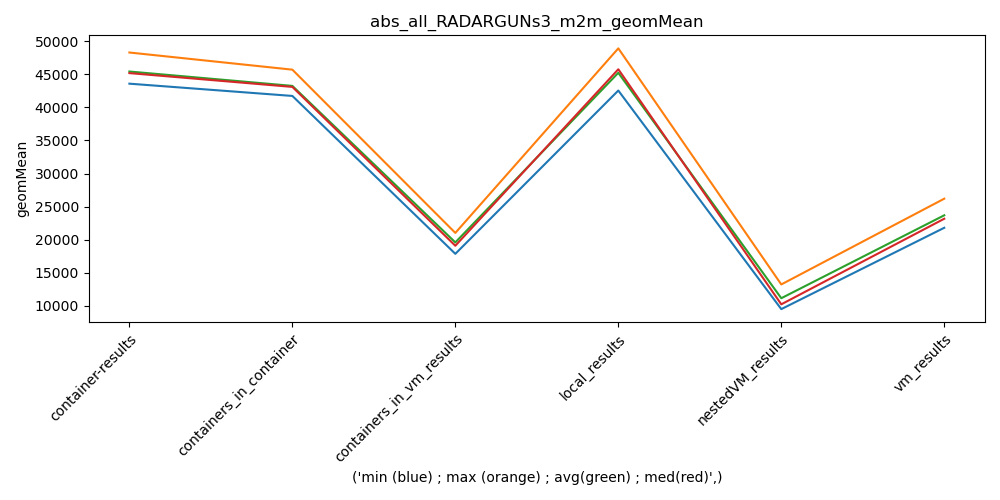
geomMean of all metrics from geomMean of all keys
{'MIN': [44083.88453118452, 41984.76298832758, 17804.450342197833, 42914.58064663824, 9727.707963553506, 22997.7282114241], 'MAX': [48361.90662795677, 45800.833766614276, 19254.805455356935, 49083.56203517219, 13083.840042170099, 26289.917416632394], 'AVG': [45914.335913655676, 43607.26841358169, 18526.382334426817, 45874.675486234526, 10775.72430395862, 24858.005747576128], 'MED': [45428.24182422577, 43253.8978619188, 18573.133937908395, 46020.279258372495, 10171.730707629857, 24867.84139939263]}
all RADARGUNs3 geomMean geomMean
MIN 44083.88453118452 container-results
MIN 41984.76298832758 containers_in_container
MIN 17804.450342197833 containers_in_vm_results
MIN 42914.58064663824 local_results
MIN 9727.707963553506 nestedVM_results
MIN 22997.7282114241 vm_results
MAX 48361.90662795677 container-results
MAX 45800.833766614276 containers_in_container
MAX 19254.805455356935 containers_in_vm_results
MAX 49083.56203517219 local_results
MAX 13083.840042170099 nestedVM_results
MAX 26289.917416632394 vm_results
AVG 45914.335913655676 container-results
AVG 43607.26841358169 containers_in_container
AVG 18526.382334426817 containers_in_vm_results
AVG 45874.675486234526 local_results
AVG 10775.72430395862 nestedVM_results
AVG 24858.005747576128 vm_results
MED 45428.24182422577 container-results
MED 43253.8978619188 containers_in_container
MED 18573.133937908395 containers_in_vm_results
MED 46020.279258372495 local_results
MED 10171.730707629857 nestedVM_results
MED 24867.84139939263 vm_results
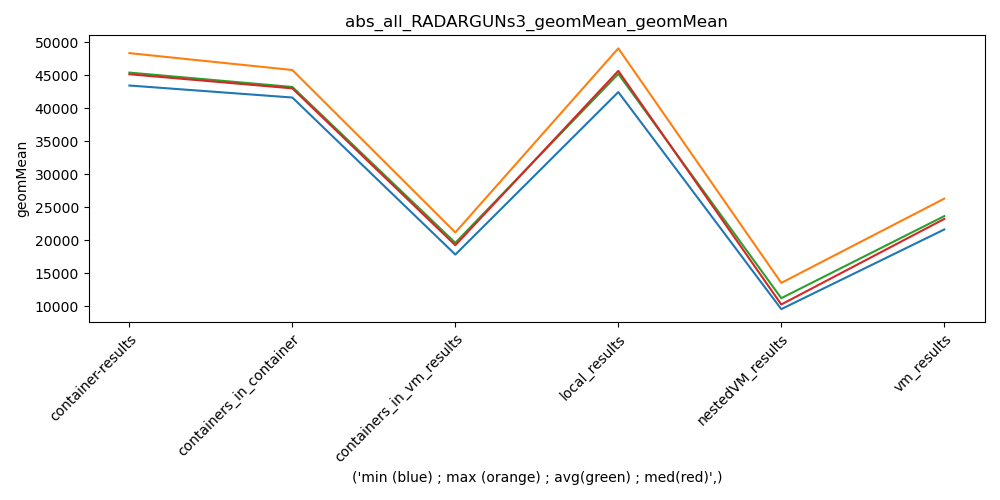
SPECJBB
all runs of one jdk are treated as INDIVIDUAL items
jbb2015.result.metric.max-jOPS
all SPECJBB jbb2015.result.metric.max-jOPS where all runs of one jdk are treated as INDIVIDUAL items
MIN 8580.0 container-results
MIN 8612.0 containers_in_container
MIN 6037.0 containers_in_vm_results
MIN 8612.0 local_results
MIN 4665.0 nestedVM_results
MIN 5635.0 vm_results
MAX 10793.0 container-results
MAX 11208.0 containers_in_container
MAX 8117.0 containers_in_vm_results
MAX 11208.0 local_results
MAX 6446.0 nestedVM_results
MAX 7808.0 vm_results
AVG 9824.988235294117 container-results
AVG 10038.0 containers_in_container
AVG 7025.694117647059 containers_in_vm_results
AVG 10100.64705882353 local_results
AVG 5614.270588235294 nestedVM_results
AVG 6891.2 vm_results
MED 9855.0 container-results
MED 9931.0 containers_in_container
MED 6695.0 containers_in_vm_results
MED 9931.0 local_results
MED 5649.0 nestedVM_results
MED 6842.0 vm_results

jbb2015.result.metric.critical-jOPS
all SPECJBB jbb2015.result.metric.critical-jOPS where all runs of one jdk are treated as INDIVIDUAL items
MIN 1924.0 container-results
MIN 1847.0 containers_in_container
MIN 1510.0 containers_in_vm_results
MIN 1957.0 local_results
MIN 819.0 nestedVM_results
MIN 1130.0 vm_results
MAX 3696.0 container-results
MAX 3659.0 containers_in_container
MAX 2423.0 containers_in_vm_results
MAX 3719.0 local_results
MAX 1456.0 nestedVM_results
MAX 2044.0 vm_results
AVG 2623.3882352941177 container-results
AVG 2644.576470588235 containers_in_container
AVG 1972.6470588235295 containers_in_vm_results
AVG 2684.0117647058823 local_results
AVG 1159.4588235294118 nestedVM_results
AVG 1654.6705882352942 vm_results
MED 2338.0 container-results
MED 2381.0 containers_in_container
MED 1921.0 containers_in_vm_results
MED 2391.0 local_results
MED 1189.0 nestedVM_results
MED 1705.0 vm_results
geomMean of all keys (benchmark meassured relativre accuracy)
{'MIN': [4062.993969968452, 3988.278325292757, 3019.2499068477255, 4105.323860549859, 1954.6444689508114, 2523.4004834746306], 'MAX': [6315.926535354888, 6403.91068020159, 4434.804505274162, 6456.202599051551, 3063.5561036155354, 3994.9408005626315], 'AVG': [5076.884728686845, 5152.306144996113, 3722.7966419575273, 5206.750957845422, 2551.3752313627, 3376.7833744033774], 'MED': [4800.103123892236, 4862.685574864984, 3586.2368856504727, 4872.886311007061, 2591.6521757365513, 3415.4955716557442]}
all SPECJBB geomMean where all runs of one jdk are treated as INDIVIDUAL items
MIN 4062.993969968452 container-results
MIN 3988.278325292757 containers_in_container
MIN 3019.2499068477255 containers_in_vm_results
MIN 4105.323860549859 local_results
MIN 1954.6444689508114 nestedVM_results
MIN 2523.4004834746306 vm_results
MAX 6315.926535354888 container-results
MAX 6403.91068020159 containers_in_container
MAX 4434.804505274162 containers_in_vm_results
MAX 6456.202599051551 local_results
MAX 3063.5561036155354 nestedVM_results
MAX 3994.9408005626315 vm_results
AVG 5076.884728686845 container-results
AVG 5152.306144996113 containers_in_container
AVG 3722.7966419575273 containers_in_vm_results
AVG 5206.750957845422 local_results
AVG 2551.3752313627 nestedVM_results
AVG 3376.7833744033774 vm_results
MED 4800.103123892236 container-results
MED 4862.685574864984 containers_in_container
MED 3586.2368856504727 containers_in_vm_results
MED 4872.886311007061 local_results
MED 2591.6521757365513 nestedVM_results
MED 3415.4955716557442 vm_results
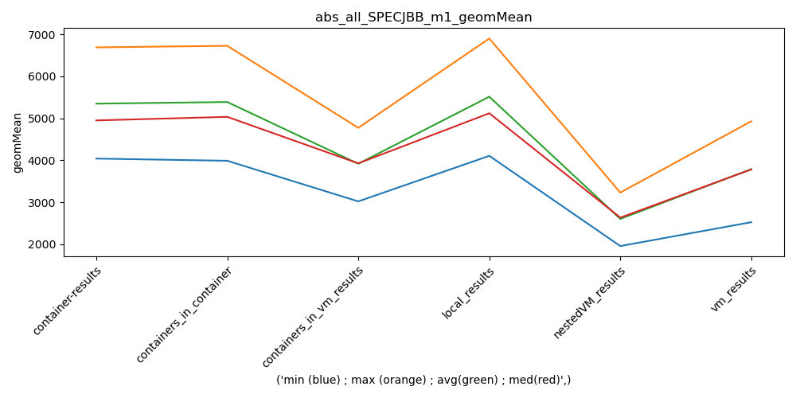
all runs of one jdk were made AVARAGE before processing
jbb2015.result.metric.max-jOPS
all SPECJBB jbb2015.result.metric.max-jOPS where all runs of one jdk were made AVARAGE before processing
MIN 8651.0 container-results
MIN 8906.8 containers_in_container
MIN 6214.4 containers_in_vm_results
MIN 8935.6 local_results
MIN 4814.8 nestedVM_results
MIN 5860.2 vm_results
MAX 10654.2 container-results
MAX 11069.6 containers_in_container
MAX 7904.8 containers_in_vm_results
MAX 11097.4 local_results
MAX 6299.2 nestedVM_results
MAX 7652.4 vm_results
AVG 9824.988235294117 container-results
AVG 10038.0 containers_in_container
AVG 7025.694117647059 containers_in_vm_results
AVG 10100.64705882353 local_results
AVG 5614.270588235295 nestedVM_results
AVG 6891.2 vm_results
MED 9885.2 container-results
MED 9843.2 containers_in_container
MED 6687.2 containers_in_vm_results
MED 9954.4 local_results
MED 5577.0 nestedVM_results
MED 6842.4 vm_results
jbb2015.result.metric.critical-jOPS
all SPECJBB jbb2015.result.metric.critical-jOPS where all runs of one jdk were made AVARAGE before processing
MIN 2178.4 container-results
MIN 2166.0 containers_in_container
MIN 1608.2 containers_in_vm_results
MIN 2210.2 local_results
MIN 900.0 nestedVM_results
MIN 1251.0 vm_results
MAX 3619.6 container-results
MAX 3577.2 containers_in_container
MAX 2371.2 containers_in_vm_results
MAX 3599.8 local_results
MAX 1400.8 nestedVM_results
MAX 1991.2 vm_results
AVG 2623.3882352941177 container-results
AVG 2644.5764705882357 containers_in_container
AVG 1972.6470588235295 containers_in_vm_results
AVG 2684.0117647058823 local_results
AVG 1159.4588235294118 nestedVM_results
AVG 1654.6705882352942 vm_results
MED 2297.0 container-results
MED 2300.2 containers_in_container
MED 1942.0 containers_in_vm_results
MED 2339.6 local_results
MED 1181.8 nestedVM_results
MED 1697.6 vm_results
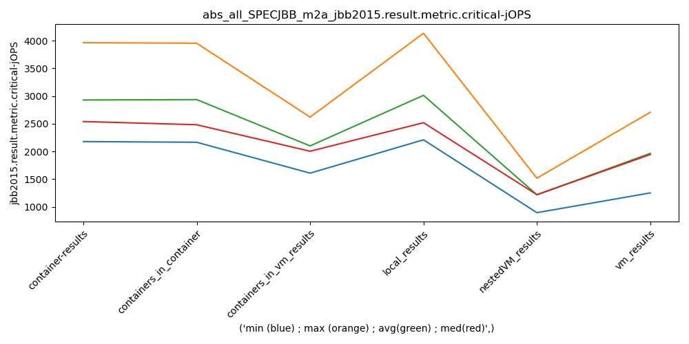
geomMean of all keys (benchmark meassured relativre accuracy)
{'MIN': [4341.121790505307, 4392.280592129788, 3161.3285308553427, 4444.036804528063, 2081.662796900593, 2707.6022972364312], 'MAX': [6209.987304334849, 6292.707932202161, 4329.418178000365, 6320.476289014935, 2970.5082662736354, 3903.5187818172462], 'AVG': [5076.884728686845, 5152.306144996113, 3722.7966419575273, 5206.750957845422, 2551.3752313627006, 3376.7833744033774], 'MED': [4765.113262032709, 4758.290516561594, 3603.684558892468, 4825.900355374114, 2567.2745470634804, 3408.175206763877]}
all SPECJBB geomMean where all runs of one jdk were made AVARAGE before processing
MIN 4341.121790505307 container-results
MIN 4392.280592129788 containers_in_container
MIN 3161.3285308553427 containers_in_vm_results
MIN 4444.036804528063 local_results
MIN 2081.662796900593 nestedVM_results
MIN 2707.6022972364312 vm_results
MAX 6209.987304334849 container-results
MAX 6292.707932202161 containers_in_container
MAX 4329.418178000365 containers_in_vm_results
MAX 6320.476289014935 local_results
MAX 2970.5082662736354 nestedVM_results
MAX 3903.5187818172462 vm_results
AVG 5076.884728686845 container-results
AVG 5152.306144996113 containers_in_container
AVG 3722.7966419575273 containers_in_vm_results
AVG 5206.750957845422 local_results
AVG 2551.3752313627006 nestedVM_results
AVG 3376.7833744033774 vm_results
MED 4765.113262032709 container-results
MED 4758.290516561594 containers_in_container
MED 3603.684558892468 containers_in_vm_results
MED 4825.900355374114 local_results
MED 2567.2745470634804 nestedVM_results
MED 3408.175206763877 vm_results
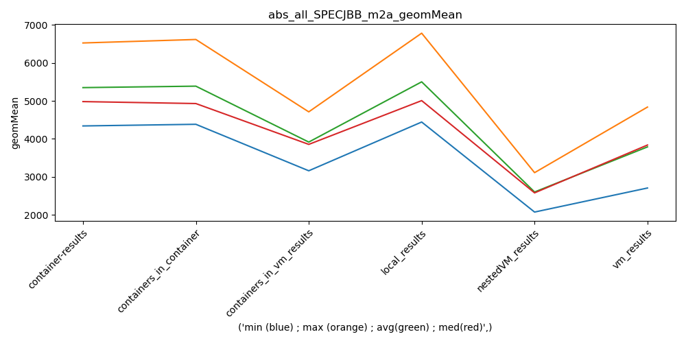
all runs of one jdk were made MEDIAN before processing
jbb2015.result.metric.max-jOPS
all SPECJBB jbb2015.result.metric.max-jOPS where all runs of one jdk were made MEDIAN before processing
MIN 8676.0 container-results
MIN 8869.0 containers_in_container
MIN 6118.0 containers_in_vm_results
MIN 9008.0 local_results
MIN 4778.0 nestedVM_results
MIN 5716.0 vm_results
MAX 10654.0 container-results
MAX 11070.0 containers_in_container
MAX 7905.0 containers_in_vm_results
MAX 11208.0 local_results
MAX 6315.0 nestedVM_results
MAX 7703.0 vm_results
AVG 9830.64705882353 container-results
AVG 10072.0 containers_in_container
AVG 7023.588235294118 containers_in_vm_results
AVG 10141.764705882353 local_results
AVG 5624.882352941177 nestedVM_results
AVG 6886.117647058823 vm_results
MED 9816.0 container-results
MED 9931.0 containers_in_container
MED 6695.0 containers_in_vm_results
MED 9931.0 local_results
MED 5626.0 nestedVM_results
MED 6842.0 vm_results
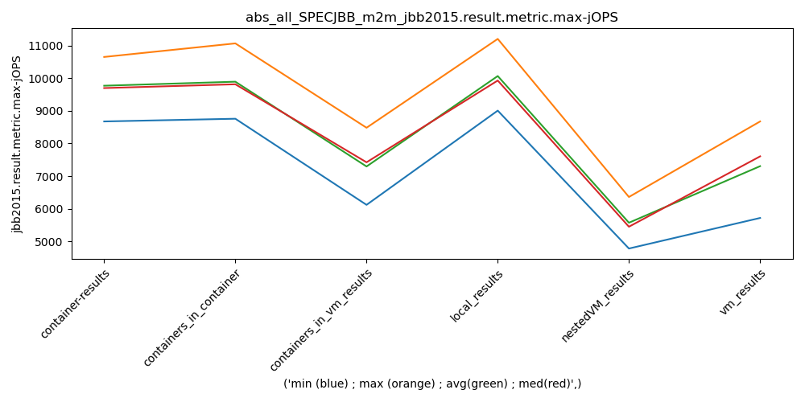
jbb2015.result.metric.critical-jOPS
all SPECJBB jbb2015.result.metric.critical-jOPS where all runs of one jdk were made MEDIAN before processing
MIN 2156.0 container-results
MIN 2159.0 containers_in_container
MIN 1614.0 containers_in_vm_results
MIN 2209.0 local_results
MIN 913.0 nestedVM_results
MIN 1230.0 vm_results
MAX 3596.0 container-results
MAX 3581.0 containers_in_container
MAX 2373.0 containers_in_vm_results
MAX 3598.0 local_results
MAX 1425.0 nestedVM_results
MAX 1982.0 vm_results
AVG 2623.0 container-results
AVG 2656.9411764705883 containers_in_container
AVG 1966.2941176470588 containers_in_vm_results
AVG 2674.5882352941176 local_results
AVG 1161.2941176470588 nestedVM_results
AVG 1651.235294117647 vm_results
MED 2298.0 container-results
MED 2349.0 containers_in_container
MED 1921.0 containers_in_vm_results
MED 2342.0 local_results
MED 1189.0 nestedVM_results
MED 1699.0 vm_results
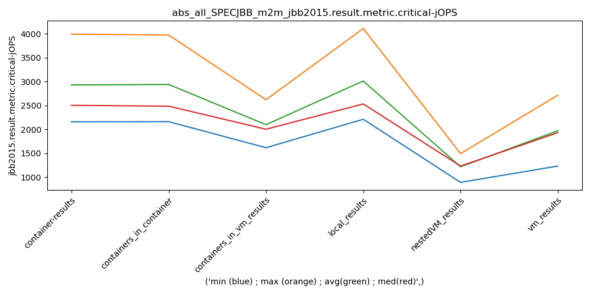
geomMean of all keys (benchmark meassured relativre accuracy)
{'MIN': [4324.980462383616, 4375.862315018607, 3142.3640782060884, 4460.792754656956, 2088.6153307873615, 2651.5429470404583], 'MAX': [6189.651363364499, 6296.163117327886, 4331.115907015189, 6350.30581940744, 2999.812494140259, 3907.345134487098], 'AVG': [5077.970779287148, 5173.075635384792, 3716.2400664965, 5208.1709426125835, 2555.8057024991817, 3372.0321022003773], 'MED': [4749.438703678573, 4829.898446137351, 3586.2368856504727, 4822.696548612612, 2586.3708164143827, 3409.480605605493]}
all SPECJBB geomMean where all runs of one jdk were made MEDIAN before processing
MIN 4324.980462383616 container-results
MIN 4375.862315018607 containers_in_container
MIN 3142.3640782060884 containers_in_vm_results
MIN 4460.792754656956 local_results
MIN 2088.6153307873615 nestedVM_results
MIN 2651.5429470404583 vm_results
MAX 6189.651363364499 container-results
MAX 6296.163117327886 containers_in_container
MAX 4331.115907015189 containers_in_vm_results
MAX 6350.30581940744 local_results
MAX 2999.812494140259 nestedVM_results
MAX 3907.345134487098 vm_results
AVG 5077.970779287148 container-results
AVG 5173.075635384792 containers_in_container
AVG 3716.2400664965 containers_in_vm_results
AVG 5208.1709426125835 local_results
AVG 2555.8057024991817 nestedVM_results
AVG 3372.0321022003773 vm_results
MED 4749.438703678573 container-results
MED 4829.898446137351 containers_in_container
MED 3586.2368856504727 containers_in_vm_results
MED 4822.696548612612 local_results
MED 2586.3708164143827 nestedVM_results
MED 3409.480605605493 vm_results
geomMean of all metrics from geomMean of all keys
{'MIN': [4241.089452380915, 4247.953242192355, 3107.003420062608, 4333.56889841494, 2040.6986273014597, 2626.374020926803], 'MAX': [6238.277024002225, 6330.717545886587, 4364.836103145138, 6375.396491943523, 3011.0426304864486, 3935.042843013342], 'AVG': [5077.24671974238, 5159.220026568762, 3720.609832500757, 5207.224243078975, 2552.8512010622426, 3375.198873617394], 'MED': [4771.504754038152, 4816.760440699847, 3592.043370363972, 4840.4401568587855, 2581.744578222549, 3411.0489721234926]}
all SPECJBB geomMean geomMean
MIN 4241.089452380915 container-results
MIN 4247.953242192355 containers_in_container
MIN 3107.003420062608 containers_in_vm_results
MIN 4333.56889841494 local_results
MIN 2040.6986273014597 nestedVM_results
MIN 2626.374020926803 vm_results
MAX 6238.277024002225 container-results
MAX 6330.717545886587 containers_in_container
MAX 4364.836103145138 containers_in_vm_results
MAX 6375.396491943523 local_results
MAX 3011.0426304864486 nestedVM_results
MAX 3935.042843013342 vm_results
AVG 5077.24671974238 container-results
AVG 5159.220026568762 containers_in_container
AVG 3720.609832500757 containers_in_vm_results
AVG 5207.224243078975 local_results
AVG 2552.8512010622426 nestedVM_results
AVG 3375.198873617394 vm_results
MED 4771.504754038152 container-results
MED 4816.760440699847 containers_in_container
MED 3592.043370363972 containers_in_vm_results
MED 4840.4401568587855 local_results
MED 2581.744578222549 nestedVM_results
MED 3411.0489721234926 vm_results

geomMean of all benchamrks from geomMean of all metrics and all keys
{'MIN': [4928.042115747696, 4883.313693081122, 3478.1262808329516, 4939.803682979356, 2408.2669314410164, 3787.4756861565975], 'MAX': [5636.320202664008, 5577.090680825103, 3935.27790115158, 5715.868614627011, 2798.111110460227, 4378.896290687308], 'AVG': [5302.828861277351, 5258.026108321157, 3715.5614917935527, 5331.3593093722775, 2599.6002219055317, 4132.105236683822], 'MED': [5255.5387095481965, 5202.734818428746, 3709.769313449504, 5295.238806095271, 2591.0257511789305, 4159.28407310363]}
all geomMean geomMean geomMean
MIN 4928.042115747696 container-results
MIN 4883.313693081122 containers_in_container
MIN 3478.1262808329516 containers_in_vm_results
MIN 4939.803682979356 local_results
MIN 2408.2669314410164 nestedVM_results
MIN 3787.4756861565975 vm_results
MAX 5636.320202664008 container-results
MAX 5577.090680825103 containers_in_container
MAX 3935.27790115158 containers_in_vm_results
MAX 5715.868614627011 local_results
MAX 2798.111110460227 nestedVM_results
MAX 4378.896290687308 vm_results
AVG 5302.828861277351 container-results
AVG 5258.026108321157 containers_in_container
AVG 3715.5614917935527 containers_in_vm_results
AVG 5331.3593093722775 local_results
AVG 2599.6002219055317 nestedVM_results
AVG 4132.105236683822 vm_results
MED 5255.5387095481965 container-results
MED 5202.734818428746 containers_in_container
MED 3709.769313449504 containers_in_vm_results
MED 5295.238806095271 local_results
MED 2591.0257511789305 nestedVM_results
MED 4159.28407310363 vm_results

java-1.8.0
J2DBENCH
all runs of one jdk are treated as INDIVIDUAL items
j2dbench.geom
java-1.8.0 J2DBENCH j2dbench.geom where all runs of one jdk are treated as INDIVIDUAL items
MIN 146406.0 container-results
MIN 141906.0 containers_in_container
MIN 93535.0 containers_in_vm_results
MIN 134580.0 local_results
MIN 87938.0 nestedVM_results
MIN 131593.0 vm_results
MAX 146895.0 container-results
MAX 142535.0 containers_in_container
MAX 96883.0 containers_in_vm_results
MAX 138452.0 local_results
MAX 91253.0 nestedVM_results
MAX 134147.0 vm_results
AVG 146655.57142857142 container-results
AVG 142135.6 containers_in_container
AVG 95208.1875 containers_in_vm_results
AVG 137136.11428571428 local_results
AVG 89974.71428571429 nestedVM_results
AVG 133037.42857142858 vm_results
MED 146645.0 container-results
MED 142121.0 containers_in_container
MED 95443.0 containers_in_vm_results
MED 137755.0 local_results
MED 90172.0 nestedVM_results
MED 133439.0 vm_results

geomMean of all keys (benchmark meassured relativre accuracy)
{'MIN': [146406.0, 141906.0, 93535.0, 134580.0, 87938.0, 131593.0], 'MAX': [146895.0, 142535.0, 96883.0, 138452.0, 91253.0, 134147.0], 'AVG': [146655.57142857142, 142135.6, 95208.1875, 137136.11428571428, 89974.71428571429, 133037.42857142858], 'MED': [146645.0, 142121.0, 95443.0, 137755.0, 90172.0, 133439.0]}
java-1.8.0 J2DBENCH geomMean where all runs of one jdk are treated as INDIVIDUAL items
MIN 146406.0 container-results
MIN 141906.0 containers_in_container
MIN 93535.0 containers_in_vm_results
MIN 134580.0 local_results
MIN 87938.0 nestedVM_results
MIN 131593.0 vm_results
MAX 146895.0 container-results
MAX 142535.0 containers_in_container
MAX 96883.0 containers_in_vm_results
MAX 138452.0 local_results
MAX 91253.0 nestedVM_results
MAX 134147.0 vm_results
AVG 146655.57142857142 container-results
AVG 142135.6 containers_in_container
AVG 95208.1875 containers_in_vm_results
AVG 137136.11428571428 local_results
AVG 89974.71428571429 nestedVM_results
AVG 133037.42857142858 vm_results
MED 146645.0 container-results
MED 142121.0 containers_in_container
MED 95443.0 containers_in_vm_results
MED 137755.0 local_results
MED 90172.0 nestedVM_results
MED 133439.0 vm_results
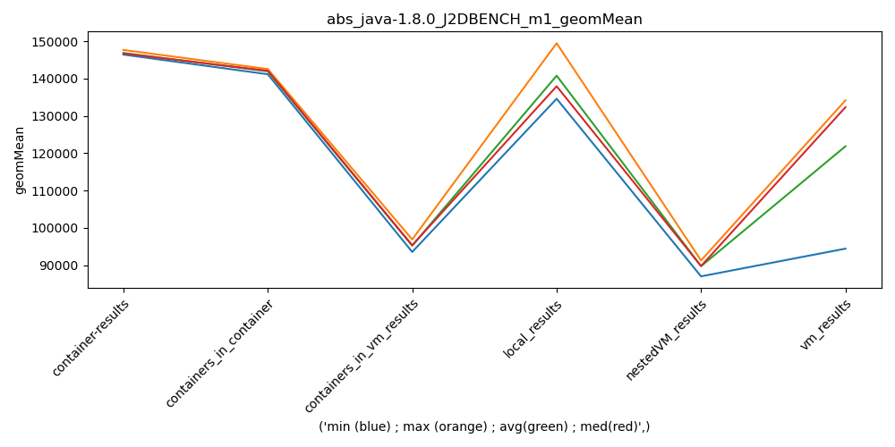
all runs of one jdk were made AVARAGE before processing
j2dbench.geom
java-1.8.0 J2DBENCH j2dbench.geom where all runs of one jdk were made AVARAGE before processing
MIN 146591.4 container-results
MIN 142037.4 containers_in_container
MIN 94757.0 containers_in_vm_results
MIN 136486.8 local_results
MIN 89514.4 nestedVM_results
MIN 132602.4 vm_results
MAX 146767.8 container-results
MAX 142234.0 containers_in_container
MAX 95625.4 containers_in_vm_results
MAX 137734.2 local_results
MAX 90536.2 nestedVM_results
MAX 133477.8 vm_results
AVG 146655.57142857142 container-results
AVG 142135.6 containers_in_container
AVG 95210.72380952381 containers_in_vm_results
AVG 137136.11428571428 local_results
AVG 89974.71428571429 nestedVM_results
AVG 133037.42857142858 vm_results
MED 146633.2 container-results
MED 142102.6 containers_in_container
MED 95122.2 containers_in_vm_results
MED 137194.2 local_results
MED 90032.2 nestedVM_results
MED 133138.6 vm_results
geomMean of all keys (benchmark meassured relativre accuracy)
{'MIN': [146591.4, 142037.4, 94757.0, 136486.8, 89514.4, 132602.4], 'MAX': [146767.8, 142234.0, 95625.4, 137734.2, 90536.2, 133477.8], 'AVG': [146655.57142857142, 142135.6, 95210.72380952381, 137136.11428571428, 89974.71428571429, 133037.42857142858], 'MED': [146633.2, 142102.6, 95122.2, 137194.2, 90032.2, 133138.6]}
java-1.8.0 J2DBENCH geomMean where all runs of one jdk were made AVARAGE before processing
MIN 146591.4 container-results
MIN 142037.4 containers_in_container
MIN 94757.0 containers_in_vm_results
MIN 136486.8 local_results
MIN 89514.4 nestedVM_results
MIN 132602.4 vm_results
MAX 146767.8 container-results
MAX 142234.0 containers_in_container
MAX 95625.4 containers_in_vm_results
MAX 137734.2 local_results
MAX 90536.2 nestedVM_results
MAX 133477.8 vm_results
AVG 146655.57142857142 container-results
AVG 142135.6 containers_in_container
AVG 95210.72380952381 containers_in_vm_results
AVG 137136.11428571428 local_results
AVG 89974.71428571429 nestedVM_results
AVG 133037.42857142858 vm_results
MED 146633.2 container-results
MED 142102.6 containers_in_container
MED 95122.2 containers_in_vm_results
MED 137194.2 local_results
MED 90032.2 nestedVM_results
MED 133138.6 vm_results
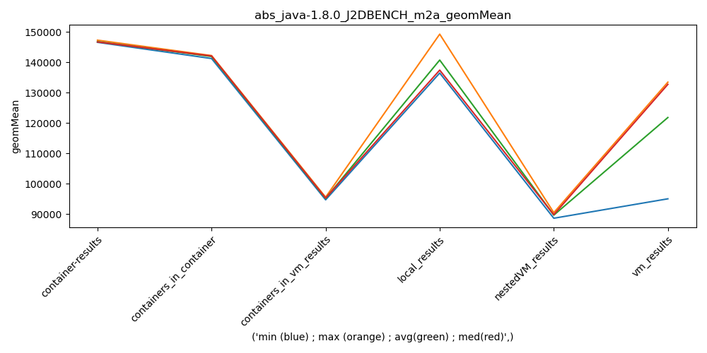
all runs of one jdk were made MEDIAN before processing
j2dbench.geom
java-1.8.0 J2DBENCH j2dbench.geom where all runs of one jdk were made MEDIAN before processing
MIN 146552.0 container-results
MIN 142024.0 containers_in_container
MIN 94445.0 containers_in_vm_results
MIN 136016.0 local_results
MIN 89074.0 nestedVM_results
MIN 132314.0 vm_results
MAX 146740.0 container-results
MAX 142287.0 containers_in_container
MAX 95815.0 containers_in_vm_results
MAX 138058.0 local_results
MAX 90858.0 nestedVM_results
MAX 133717.0 vm_results
AVG 146644.14285714287 container-results
AVG 142125.57142857142 containers_in_container
AVG 95369.42857142857 containers_in_vm_results
AVG 137307.85714285713 local_results
AVG 90039.0 nestedVM_results
AVG 133286.2857142857 vm_results
MED 146650.0 container-results
MED 142120.0 containers_in_container
MED 95443.0 containers_in_vm_results
MED 137755.0 local_results
MED 90172.0 nestedVM_results
MED 133539.0 vm_results

geomMean of all keys (benchmark meassured relativre accuracy)
{'MIN': [146552.0, 142024.0, 94445.0, 136016.0, 89074.0, 132314.0], 'MAX': [146740.0, 142287.0, 95815.0, 138058.0, 90858.0, 133717.0], 'AVG': [146644.14285714287, 142125.57142857142, 95369.42857142857, 137307.85714285713, 90039.0, 133286.2857142857], 'MED': [146650.0, 142120.0, 95443.0, 137755.0, 90172.0, 133539.0]}
java-1.8.0 J2DBENCH geomMean where all runs of one jdk were made MEDIAN before processing
MIN 146552.0 container-results
MIN 142024.0 containers_in_container
MIN 94445.0 containers_in_vm_results
MIN 136016.0 local_results
MIN 89074.0 nestedVM_results
MIN 132314.0 vm_results
MAX 146740.0 container-results
MAX 142287.0 containers_in_container
MAX 95815.0 containers_in_vm_results
MAX 138058.0 local_results
MAX 90858.0 nestedVM_results
MAX 133717.0 vm_results
AVG 146644.14285714287 container-results
AVG 142125.57142857142 containers_in_container
AVG 95369.42857142857 containers_in_vm_results
AVG 137307.85714285713 local_results
AVG 90039.0 nestedVM_results
AVG 133286.2857142857 vm_results
MED 146650.0 container-results
MED 142120.0 containers_in_container
MED 95443.0 containers_in_vm_results
MED 137755.0 local_results
MED 90172.0 nestedVM_results
MED 133539.0 vm_results
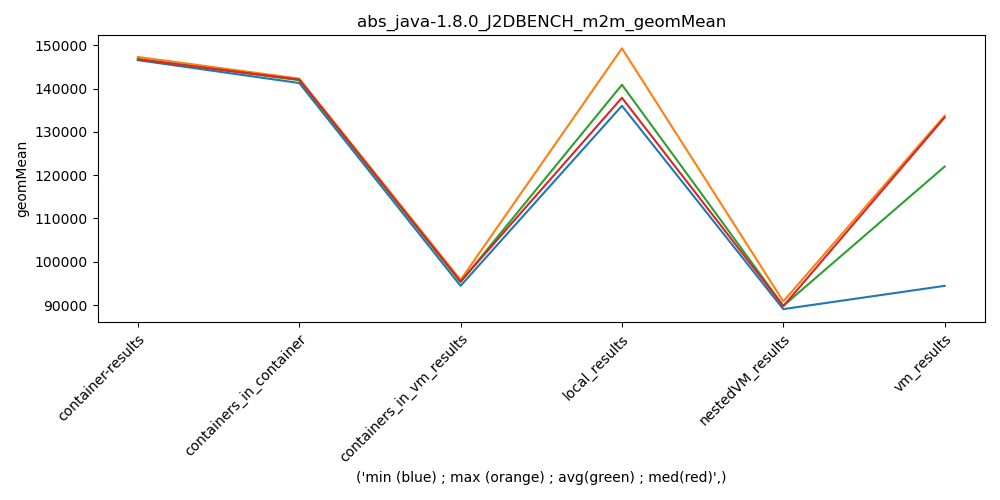
geomMean of all metrics from geomMean of all keys
{'MIN': [146516.4449574747, 141989.12105718462, 94244.23814463214, 135691.8378798464, 88839.64507792256, 132169.11756736992], 'MAX': [146800.91782861715, 142351.93956494966, 96106.2095754268, 138081.0881106208, 90881.92736245273, 133780.31361472487], 'AVG': [146651.76180580136, 142132.257064234, 95262.75011699332, 137193.33802329467, 89996.13775569295, 133120.3292830456], 'MED': [146642.733164182, 142114.5330822299, 95335.94663546466, 137567.81242313277, 90125.37589681562, 133372.09141597495]}
java-1.8.0 J2DBENCH geomMean geomMean
MIN 146516.4449574747 container-results
MIN 141989.12105718462 containers_in_container
MIN 94244.23814463214 containers_in_vm_results
MIN 135691.8378798464 local_results
MIN 88839.64507792256 nestedVM_results
MIN 132169.11756736992 vm_results
MAX 146800.91782861715 container-results
MAX 142351.93956494966 containers_in_container
MAX 96106.2095754268 containers_in_vm_results
MAX 138081.0881106208 local_results
MAX 90881.92736245273 nestedVM_results
MAX 133780.31361472487 vm_results
AVG 146651.76180580136 container-results
AVG 142132.257064234 containers_in_container
AVG 95262.75011699332 containers_in_vm_results
AVG 137193.33802329467 local_results
AVG 89996.13775569295 nestedVM_results
AVG 133120.3292830456 vm_results
MED 146642.733164182 container-results
MED 142114.5330822299 containers_in_container
MED 95335.94663546466 containers_in_vm_results
MED 137567.81242313277 local_results
MED 90125.37589681562 nestedVM_results
MED 133372.09141597495 vm_results
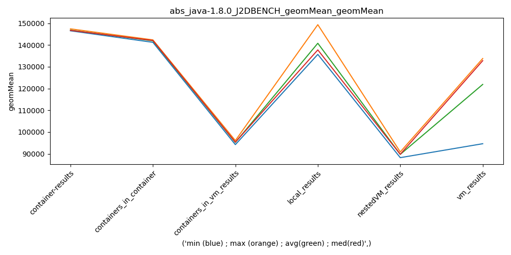
JMH
all runs of one jdk are treated as INDIVIDUAL items
geom
java-1.8.0 JMH geom where all runs of one jdk are treated as INDIVIDUAL items
MIN 397.0 container-results
MIN 402.0 containers_in_container
MIN 324.0 containers_in_vm_results
MIN 401.0 local_results
MIN 324.0 nestedVM_results
MIN 345.0 vm_results
MAX 439.0 container-results
MAX 439.0 containers_in_container
MAX 357.0 containers_in_vm_results
MAX 455.0 local_results
MAX 349.0 nestedVM_results
MAX 372.0 vm_results
AVG 430.2 container-results
AVG 429.9142857142857 containers_in_container
AVG 342.8 containers_in_vm_results
AVG 430.3142857142857 local_results
AVG 343.8787878787879 nestedVM_results
AVG 366.3142857142857 vm_results
MED 435.0 container-results
MED 434.0 containers_in_container
MED 343.0 containers_in_vm_results
MED 434.0 local_results
MED 346.0 nestedVM_results
MED 370.0 vm_results

geomMean of all keys (benchmark meassured relativre accuracy)
{'MIN': [397.0, 402.0, 324.0, 401.0, 324.0, 345.0], 'MAX': [439.0, 439.0, 357.0, 455.0, 349.0, 372.0], 'AVG': [430.2, 429.9142857142857, 342.8, 430.3142857142857, 343.8787878787879, 366.3142857142857], 'MED': [435.0, 434.0, 343.0, 434.0, 346.0, 370.0]}
java-1.8.0 JMH geomMean where all runs of one jdk are treated as INDIVIDUAL items
MIN 397.0 container-results
MIN 402.0 containers_in_container
MIN 324.0 containers_in_vm_results
MIN 401.0 local_results
MIN 324.0 nestedVM_results
MIN 345.0 vm_results
MAX 439.0 container-results
MAX 439.0 containers_in_container
MAX 357.0 containers_in_vm_results
MAX 455.0 local_results
MAX 349.0 nestedVM_results
MAX 372.0 vm_results
AVG 430.2 container-results
AVG 429.9142857142857 containers_in_container
AVG 342.8 containers_in_vm_results
AVG 430.3142857142857 local_results
AVG 343.8787878787879 nestedVM_results
AVG 366.3142857142857 vm_results
MED 435.0 container-results
MED 434.0 containers_in_container
MED 343.0 containers_in_vm_results
MED 434.0 local_results
MED 346.0 nestedVM_results
MED 370.0 vm_results
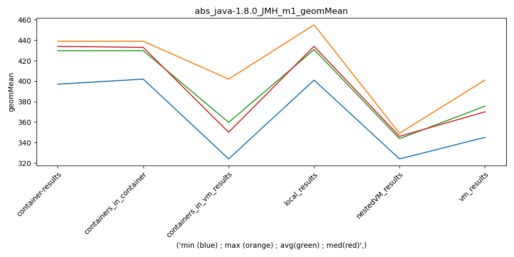
all runs of one jdk were made AVARAGE before processing
geom
java-1.8.0 JMH geom where all runs of one jdk were made AVARAGE before processing
MIN 398.8 container-results
MIN 404.0 containers_in_container
MIN 327.0 containers_in_vm_results
MIN 404.0 local_results
MIN 324.75 nestedVM_results
MIN 345.8 vm_results
MAX 436.6 container-results
MAX 436.6 containers_in_container
MAX 355.8 containers_in_vm_results
MAX 439.6 local_results
MAX 347.8 nestedVM_results
MAX 371.4 vm_results
AVG 430.2 container-results
AVG 429.9142857142857 containers_in_container
AVG 342.8 containers_in_vm_results
AVG 430.3142857142857 local_results
AVG 343.40000000000003 nestedVM_results
AVG 366.3142857142857 vm_results
MED 435.0 container-results
MED 433.6 containers_in_container
MED 340.6 containers_in_vm_results
MED 433.8 local_results
MED 346.4 nestedVM_results
MED 369.4 vm_results
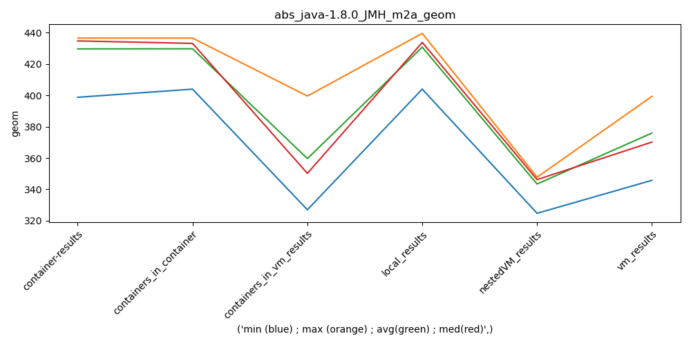
geomMean of all keys (benchmark meassured relativre accuracy)
{'MIN': [398.8, 404.0, 327.0, 404.0, 324.75, 345.8], 'MAX': [436.6, 436.6, 355.8, 439.6, 347.8, 371.4], 'AVG': [430.2, 429.9142857142857, 342.8, 430.3142857142857, 343.40000000000003, 366.3142857142857], 'MED': [435.0, 433.6, 340.6, 433.8, 346.4, 369.4]}
java-1.8.0 JMH geomMean where all runs of one jdk were made AVARAGE before processing
MIN 398.8 container-results
MIN 404.0 containers_in_container
MIN 327.0 containers_in_vm_results
MIN 404.0 local_results
MIN 324.75 nestedVM_results
MIN 345.8 vm_results
MAX 436.6 container-results
MAX 436.6 containers_in_container
MAX 355.8 containers_in_vm_results
MAX 439.6 local_results
MAX 347.8 nestedVM_results
MAX 371.4 vm_results
AVG 430.2 container-results
AVG 429.9142857142857 containers_in_container
AVG 342.8 containers_in_vm_results
AVG 430.3142857142857 local_results
AVG 343.40000000000003 nestedVM_results
AVG 366.3142857142857 vm_results
MED 435.0 container-results
MED 433.6 containers_in_container
MED 340.6 containers_in_vm_results
MED 433.8 local_results
MED 346.4 nestedVM_results
MED 369.4 vm_results
all runs of one jdk were made MEDIAN before processing
geom
java-1.8.0 JMH geom where all runs of one jdk were made MEDIAN before processing
MIN 399.0 container-results
MIN 404.0 containers_in_container
MIN 326.0 containers_in_vm_results
MIN 405.0 local_results
MIN 325.0 nestedVM_results
MIN 346.0 vm_results
MAX 437.0 container-results
MAX 436.0 containers_in_container
MAX 356.0 containers_in_vm_results
MAX 436.0 local_results
MAX 348.0 nestedVM_results
MAX 372.0 vm_results
AVG 430.0 container-results
AVG 429.57142857142856 containers_in_container
AVG 341.85714285714283 containers_in_vm_results
AVG 429.85714285714283 local_results
AVG 343.57142857142856 nestedVM_results
AVG 366.57142857142856 vm_results
MED 435.0 container-results
MED 433.0 containers_in_container
MED 339.0 containers_in_vm_results
MED 433.0 local_results
MED 346.0 nestedVM_results
MED 370.0 vm_results
geomMean of all keys (benchmark meassured relativre accuracy)
{'MIN': [399.0, 404.0, 326.0, 405.0, 325.0, 346.0], 'MAX': [437.0, 436.0, 356.0, 436.0, 348.0, 372.0], 'AVG': [430.0, 429.57142857142856, 341.85714285714283, 429.85714285714283, 343.57142857142856, 366.57142857142856], 'MED': [435.0, 433.0, 339.0, 433.0, 346.0, 370.0]}
java-1.8.0 JMH geomMean where all runs of one jdk were made MEDIAN before processing
MIN 399.0 container-results
MIN 404.0 containers_in_container
MIN 326.0 containers_in_vm_results
MIN 405.0 local_results
MIN 325.0 nestedVM_results
MIN 346.0 vm_results
MAX 437.0 container-results
MAX 436.0 containers_in_container
MAX 356.0 containers_in_vm_results
MAX 436.0 local_results
MAX 348.0 nestedVM_results
MAX 372.0 vm_results
AVG 430.0 container-results
AVG 429.57142857142856 containers_in_container
AVG 341.85714285714283 containers_in_vm_results
AVG 429.85714285714283 local_results
AVG 343.57142857142856 nestedVM_results
AVG 366.57142857142856 vm_results
MED 435.0 container-results
MED 433.0 containers_in_container
MED 339.0 containers_in_vm_results
MED 433.0 local_results
MED 346.0 nestedVM_results
MED 370.0 vm_results

geomMean of all metrics from geomMean of all keys
{'MIN': [398.2656501113081, 403.33223018769525, 325.66427605764414, 403.3297467218951, 324.5830550705661, 345.59972980410106], 'MAX': [437.532075014371, 437.1980809341795, 356.26628017936576, 443.4573491156323, 348.26627130701513, 371.79989237666416], 'AVG': [430.1333229995519, 429.7999696055355, 342.48542570135095, 430.1618507695799, 343.6166817359509, 366.39997995143716], 'MED': [434.99999999999983, 433.533138521923, 340.862705914637, 433.59978466263806, 346.13328198544707, 369.79989179439167]}
java-1.8.0 JMH geomMean geomMean
MIN 398.2656501113081 container-results
MIN 403.33223018769525 containers_in_container
MIN 325.66427605764414 containers_in_vm_results
MIN 403.3297467218951 local_results
MIN 324.5830550705661 nestedVM_results
MIN 345.59972980410106 vm_results
MAX 437.532075014371 container-results
MAX 437.1980809341795 containers_in_container
MAX 356.26628017936576 containers_in_vm_results
MAX 443.4573491156323 local_results
MAX 348.26627130701513 nestedVM_results
MAX 371.79989237666416 vm_results
AVG 430.1333229995519 container-results
AVG 429.7999696055355 containers_in_container
AVG 342.48542570135095 containers_in_vm_results
AVG 430.1618507695799 local_results
AVG 343.6166817359509 nestedVM_results
AVG 366.39997995143716 vm_results
MED 434.99999999999983 container-results
MED 433.533138521923 containers_in_container
MED 340.862705914637 containers_in_vm_results
MED 433.59978466263806 local_results
MED 346.13328198544707 nestedVM_results
MED 369.79989179439167 vm_results

RADARGUNs1
all runs of one jdk are treated as INDIVIDUAL items
BasicOperations.Put.Throughput=
java-1.8.0 RADARGUNs1 BasicOperations.Put.Throughput= where all runs of one jdk are treated as INDIVIDUAL items
MIN 662072.0 container-results
MIN 672844.0 containers_in_container
MIN 522504.0 containers_in_vm_results
MIN 689797.0 local_results
MIN 170062.0 nestedVM_results
MIN 510215.0 vm_results
MAX 828751.0 container-results
MAX 824080.0 containers_in_container
MAX 591552.0 containers_in_vm_results
MAX 818065.0 local_results
MAX 179039.0 nestedVM_results
MAX 595604.0 vm_results
AVG 760180.1428571428 container-results
AVG 767354.1142857143 containers_in_container
AVG 563811.3714285714 containers_in_vm_results
AVG 761067.2 local_results
AVG 174870.7142857143 nestedVM_results
AVG 562866.6 vm_results
MED 763308.0 container-results
MED 781360.0 containers_in_container
MED 567991.0 containers_in_vm_results
MED 764409.0 local_results
MED 174761.0 nestedVM_results
MED 564136.0 vm_results
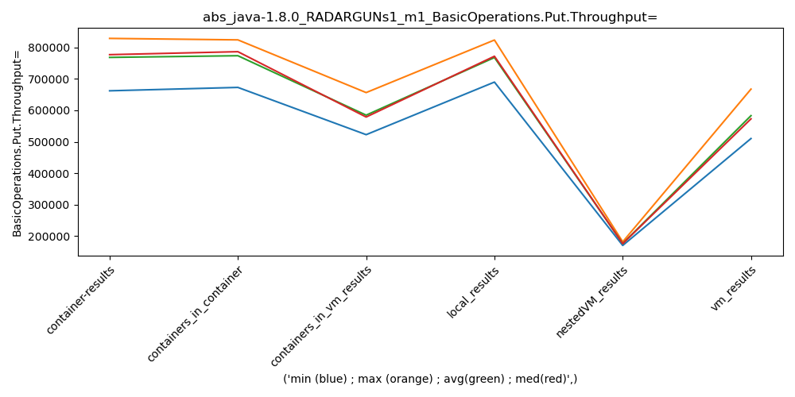
BasicOperations.Get.Throughput=
java-1.8.0 RADARGUNs1 BasicOperations.Get.Throughput= where all runs of one jdk are treated as INDIVIDUAL items
MIN 2648167.0 container-results
MIN 2691672.0 containers_in_container
MIN 2089654.0 containers_in_vm_results
MIN 2759139.0 local_results
MIN 680218.0 nestedVM_results
MIN 2040746.0 vm_results
MAX 3315154.0 container-results
MAX 3296719.0 containers_in_container
MAX 2366318.0 containers_in_vm_results
MAX 3272450.0 local_results
MAX 716091.0 nestedVM_results
MAX 2382424.0 vm_results
AVG 3040710.942857143 container-results
AVG 3069412.0285714287 containers_in_container
AVG 2255236.9714285713 containers_in_vm_results
AVG 3044261.96 local_results
AVG 699462.1428571428 nestedVM_results
AVG 2251464.6285714284 vm_results
MED 3053182.0 container-results
MED 3125312.0 containers_in_container
MED 2271924.0 containers_in_vm_results
MED 3057807.0 local_results
MED 699032.0 nestedVM_results
MED 2256606.0 vm_results
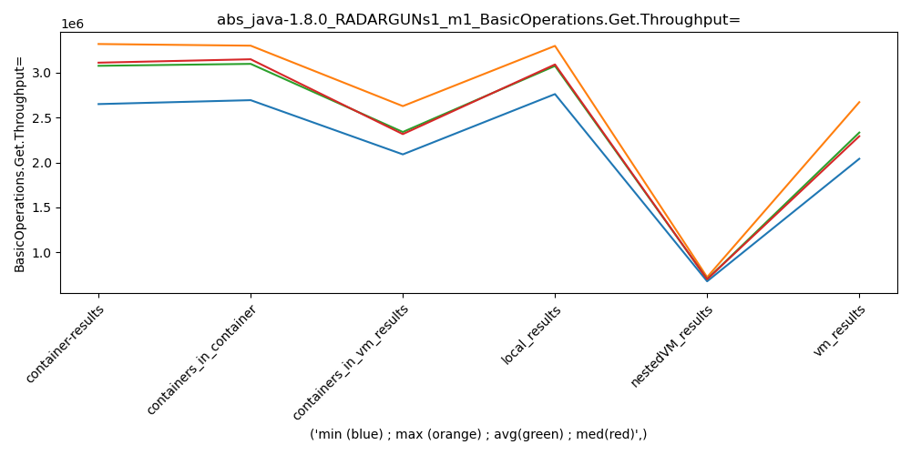
geomMean of all keys (benchmark meassured relativre accuracy)
{'MIN': [1324113.7496544623, 1345761.9979654648, 1044917.4960809107, 1379581.749945613, 340116.49991730775, 1020401.4996019949], 'MAX': [1657539.499575802, 1648259.7469816462, 1183131.4996804032, 1636177.4993105119, 358061.7496312612, 1191209.999998321], 'AVG': [1520357.878569523, 1534707.121428172, 1127620.6142837054, 1522132.6899990395, 349736.24996166024, 1125732.7571427699], 'MED': [1526603.4999488243, 1562687.9996723593, 1135971.9999559848, 1528860.7494023123, 349518.99998712516, 1128287.4998935333]}
java-1.8.0 RADARGUNs1 geomMean where all runs of one jdk are treated as INDIVIDUAL items
MIN 1324113.7496544623 container-results
MIN 1345761.9979654648 containers_in_container
MIN 1044917.4960809107 containers_in_vm_results
MIN 1379581.749945613 local_results
MIN 340116.49991730775 nestedVM_results
MIN 1020401.4996019949 vm_results
MAX 1657539.499575802 container-results
MAX 1648259.7469816462 containers_in_container
MAX 1183131.4996804032 containers_in_vm_results
MAX 1636177.4993105119 local_results
MAX 358061.7496312612 nestedVM_results
MAX 1191209.999998321 vm_results
AVG 1520357.878569523 container-results
AVG 1534707.121428172 containers_in_container
AVG 1127620.6142837054 containers_in_vm_results
AVG 1522132.6899990395 local_results
AVG 349736.24996166024 nestedVM_results
AVG 1125732.7571427699 vm_results
MED 1526603.4999488243 container-results
MED 1562687.9996723593 containers_in_container
MED 1135971.9999559848 containers_in_vm_results
MED 1528860.7494023123 local_results
MED 349518.99998712516 nestedVM_results
MED 1128287.4998935333 vm_results
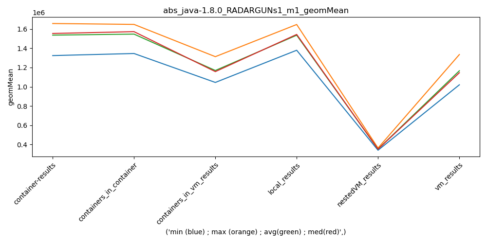
all runs of one jdk were made AVARAGE before processing
BasicOperations.Put.Throughput=
java-1.8.0 RADARGUNs1 BasicOperations.Put.Throughput= where all runs of one jdk were made AVARAGE before processing
MIN 715324.8 container-results
MIN 730686.2 containers_in_container
MIN 543344.0 containers_in_vm_results
MIN 730628.0 local_results
MIN 173764.6 nestedVM_results
MIN 549914.4 vm_results
MAX 794925.4 container-results
MAX 810584.4 containers_in_container
MAX 576892.4 containers_in_vm_results
MAX 798123.4 local_results
MAX 175934.4 nestedVM_results
MAX 580315.6 vm_results
AVG 760180.1428571428 container-results
AVG 767354.1142857142 containers_in_container
AVG 563811.3714285714 containers_in_vm_results
AVG 761067.2 local_results
AVG 174870.7142857143 nestedVM_results
AVG 562866.6 vm_results
MED 778842.8 container-results
MED 766303.2 containers_in_container
MED 565808.4 containers_in_vm_results
MED 756727.8 local_results
MED 174825.8 nestedVM_results
MED 564342.2 vm_results
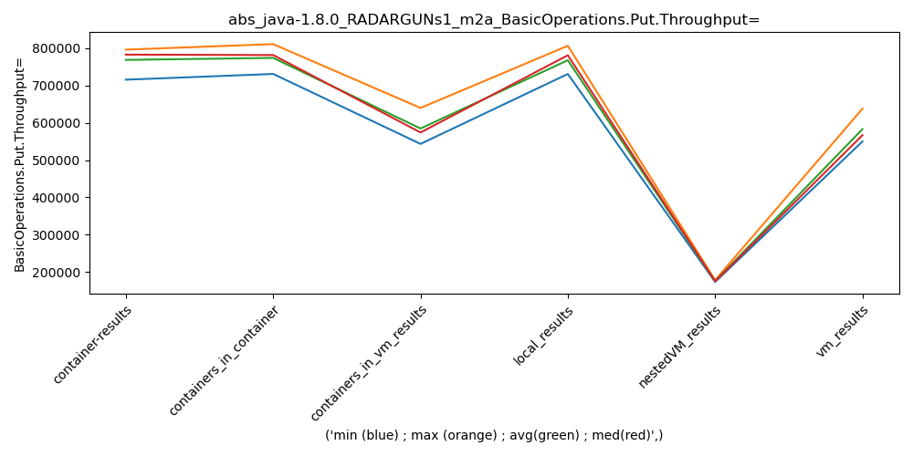
BasicOperations.Get.Throughput=
java-1.8.0 RADARGUNs1 BasicOperations.Get.Throughput= where all runs of one jdk were made AVARAGE before processing
MIN 2861303.6 container-results
MIN 2922637.0 containers_in_container
MIN 2173362.8 containers_in_vm_results
MIN 2922411.2 local_results
MIN 695045.6 nestedVM_results
MIN 2199656.2 vm_results
MAX 3179813.2 container-results
MAX 3242323.6 containers_in_container
MAX 2307621.2 containers_in_vm_results
MAX 3192504.0 local_results
MAX 703687.4 nestedVM_results
MAX 2321272.6 vm_results
AVG 3040710.942857143 container-results
AVG 3069412.0285714283 containers_in_container
AVG 2255236.9714285717 containers_in_vm_results
AVG 3044261.96 local_results
AVG 699462.1428571428 nestedVM_results
AVG 2251464.628571429 vm_results
MED 3115165.6 container-results
MED 3065317.2 containers_in_container
MED 2263249.2 containers_in_vm_results
MED 3026918.8 local_results
MED 699269.4 nestedVM_results
MED 2257391.2 vm_results

geomMean of all keys (benchmark meassured relativre accuracy)
{'MIN': [1430650.6999995771, 1461345.4497514952, 1086684.6999949894, 1461230.7997827039, 347525.9999852673, 1099828.4499999445], 'MAX': [1589878.6997551983, 1621165.299996222, 1153797.699927886, 1596249.3999978825, 351856.24977618345, 1160633.7499971988], 'AVG': [1520357.878569523, 1534707.1214281719, 1127620.6142837054, 1522132.6899990395, 349736.24996166024, 1125732.75714277], 'MED': [1557634.1991519318, 1532632.4997777648, 1131620.6999932798, 1513457.4999988074, 349643.1498978923, 1128689.9999861077]}
java-1.8.0 RADARGUNs1 geomMean where all runs of one jdk were made AVARAGE before processing
MIN 1430650.6999995771 container-results
MIN 1461345.4497514952 containers_in_container
MIN 1086684.6999949894 containers_in_vm_results
MIN 1461230.7997827039 local_results
MIN 347525.9999852673 nestedVM_results
MIN 1099828.4499999445 vm_results
MAX 1589878.6997551983 container-results
MAX 1621165.299996222 containers_in_container
MAX 1153797.699927886 containers_in_vm_results
MAX 1596249.3999978825 local_results
MAX 351856.24977618345 nestedVM_results
MAX 1160633.7499971988 vm_results
AVG 1520357.878569523 container-results
AVG 1534707.1214281719 containers_in_container
AVG 1127620.6142837054 containers_in_vm_results
AVG 1522132.6899990395 local_results
AVG 349736.24996166024 nestedVM_results
AVG 1125732.75714277 vm_results
MED 1557634.1991519318 container-results
MED 1532632.4997777648 containers_in_container
MED 1131620.6999932798 containers_in_vm_results
MED 1513457.4999988074 local_results
MED 349643.1498978923 nestedVM_results
MED 1128689.9999861077 vm_results
all runs of one jdk were made MEDIAN before processing
BasicOperations.Put.Throughput=
java-1.8.0 RADARGUNs1 BasicOperations.Put.Throughput= where all runs of one jdk were made MEDIAN before processing
MIN 696475.0 container-results
MIN 695902.0 containers_in_container
MIN 544648.0 containers_in_vm_results
MIN 730968.0 local_results
MIN 173540.0 nestedVM_results
MIN 545652.0 vm_results
MAX 797691.0 container-results
MAX 814689.0 containers_in_container
MAX 580303.0 containers_in_vm_results
MAX 806079.0 local_results
MAX 177686.0 nestedVM_results
MAX 584836.0 vm_results
AVG 758870.7142857143 container-results
AVG 767086.5714285715 containers_in_container
AVG 564687.0 containers_in_vm_results
AVG 767479.2 local_results
AVG 175110.85714285713 nestedVM_results
AVG 565943.7142857143 vm_results
MED 770161.0 container-results
MED 774072.0 containers_in_container
MED 568658.0 containers_in_vm_results
MED 772049.0 local_results
MED 175005.0 nestedVM_results
MED 564136.0 vm_results

BasicOperations.Get.Throughput=
java-1.8.0 RADARGUNs1 BasicOperations.Get.Throughput= where all runs of one jdk were made MEDIAN before processing
MIN 2785919.0 container-results
MIN 2783345.0 containers_in_container
MIN 2178538.0 containers_in_vm_results
MIN 2923879.0 local_results
MIN 694222.0 nestedVM_results
MIN 2182818.0 vm_results
MAX 3190952.0 container-results
MAX 3258521.0 containers_in_container
MAX 2321234.0 containers_in_vm_results
MAX 3224131.0 local_results
MAX 710615.0 nestedVM_results
MAX 2339254.0 vm_results
AVG 3035412.4285714286 container-results
AVG 3068291.714285714 containers_in_container
AVG 2258783.1428571427 containers_in_vm_results
AVG 3069804.4 local_results
AVG 700391.5714285715 nestedVM_results
AVG 2263897.4285714286 vm_results
MED 3080763.0 container-results
MED 3096350.0 containers_in_container
MED 2274411.0 containers_in_vm_results
MED 3088055.0 local_results
MED 699929.0 nestedVM_results
MED 2256606.0 vm_results

geomMean of all keys (benchmark meassured relativre accuracy)
{'MIN': [1392954.7499919012, 1391738.2484468839, 1089282.499916344, 1461937.7499989525, 347095.4996539137, 1091356.4987372367], 'MAX': [1595428.9993077097, 1629319.2489407961, 1160611.499986968, 1612111.7493365651, 355339.74853652384, 1169649.499783589], 'AVG': [1517723.8213264411, 1534159.499939339, 1129382.7856801127, 1534930.2997427864, 350208.74976003927, 1131918.0710137957], 'MED': [1540351.7497127077, 1548159.4999224078, 1137260.748657932, 1544062.749597632, 349987.24926059804, 1128287.4998935333]}
java-1.8.0 RADARGUNs1 geomMean where all runs of one jdk were made MEDIAN before processing
MIN 1392954.7499919012 container-results
MIN 1391738.2484468839 containers_in_container
MIN 1089282.499916344 containers_in_vm_results
MIN 1461937.7499989525 local_results
MIN 347095.4996539137 nestedVM_results
MIN 1091356.4987372367 vm_results
MAX 1595428.9993077097 container-results
MAX 1629319.2489407961 containers_in_container
MAX 1160611.499986968 containers_in_vm_results
MAX 1612111.7493365651 local_results
MAX 355339.74853652384 nestedVM_results
MAX 1169649.499783589 vm_results
AVG 1517723.8213264411 container-results
AVG 1534159.499939339 containers_in_container
AVG 1129382.7856801127 containers_in_vm_results
AVG 1534930.2997427864 local_results
AVG 350208.74976003927 nestedVM_results
AVG 1131918.0710137957 vm_results
MED 1540351.7497127077 container-results
MED 1548159.4999224078 containers_in_container
MED 1137260.748657932 containers_in_vm_results
MED 1544062.749597632 local_results
MED 349987.24926059804 nestedVM_results
MED 1128287.4998935333 vm_results
geomMean of all metrics from geomMean of all keys
{'MIN': [1381864.0075634322, 1398812.7160153524, 1073434.0320055883, 1433722.31980795, 344895.87104723114, 1069927.1930201969], 'MAX': [1613993.5187704947, 1632875.4020098122, 1165779.7803374357, 1614762.922351644, 355076.82663315936, 1173761.215569586], 'AVG': [1519479.351936691, 1534524.5592159322, 1128207.6990361365, 1526386.660084034, 349893.67901925236, 1127790.7637986154], 'MED': [1541477.5756471183, 1547778.0020910683, 1134948.5822953132, 1528742.6038943136, 349716.41030346625, 1128421.6506402148]}
java-1.8.0 RADARGUNs1 geomMean geomMean
MIN 1381864.0075634322 container-results
MIN 1398812.7160153524 containers_in_container
MIN 1073434.0320055883 containers_in_vm_results
MIN 1433722.31980795 local_results
MIN 344895.87104723114 nestedVM_results
MIN 1069927.1930201969 vm_results
MAX 1613993.5187704947 container-results
MAX 1632875.4020098122 containers_in_container
MAX 1165779.7803374357 containers_in_vm_results
MAX 1614762.922351644 local_results
MAX 355076.82663315936 nestedVM_results
MAX 1173761.215569586 vm_results
AVG 1519479.351936691 container-results
AVG 1534524.5592159322 containers_in_container
AVG 1128207.6990361365 containers_in_vm_results
AVG 1526386.660084034 local_results
AVG 349893.67901925236 nestedVM_results
AVG 1127790.7637986154 vm_results
MED 1541477.5756471183 container-results
MED 1547778.0020910683 containers_in_container
MED 1134948.5822953132 containers_in_vm_results
MED 1528742.6038943136 local_results
MED 349716.41030346625 nestedVM_results
MED 1128421.6506402148 vm_results
RADARGUNs3
all runs of one jdk are treated as INDIVIDUAL items
BasicOperations.Put.Throughput=
java-1.8.0 RADARGUNs3 BasicOperations.Put.Throughput= where all runs of one jdk are treated as INDIVIDUAL items
MIN 23526.0 container-results
MIN 22160.0 containers_in_container
MIN 9014.0 containers_in_vm_results
MIN 23930.0 local_results
MIN 4901.0 nestedVM_results
MIN 11506.0 vm_results
MAX 24264.0 container-results
MAX 22989.0 containers_in_container
MAX 9530.0 containers_in_vm_results
MAX 24665.0 local_results
MAX 5478.0 nestedVM_results
MAX 13208.0 vm_results
AVG 23836.485714285714 container-results
AVG 22570.885714285716 containers_in_container
AVG 9205.818181818182 containers_in_vm_results
AVG 24216.12 local_results
AVG 5090.085714285714 nestedVM_results
AVG 12581.8 vm_results
MED 23766.0 container-results
MED 22530.0 containers_in_container
MED 9200.0 containers_in_vm_results
MED 24160.0 local_results
MED 5087.0 nestedVM_results
MED 12614.0 vm_results
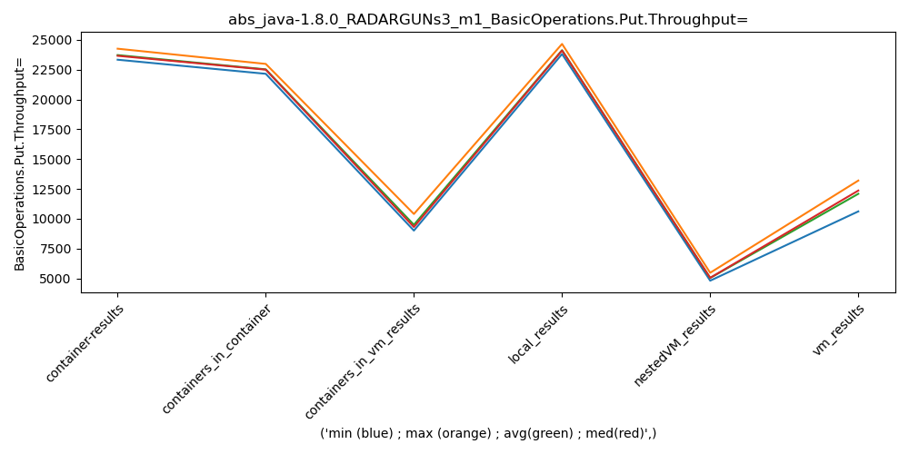
BasicOperations.Get.Throughput=
java-1.8.0 RADARGUNs3 BasicOperations.Get.Throughput= where all runs of one jdk are treated as INDIVIDUAL items
MIN 94105.0 container-results
MIN 88694.0 containers_in_container
MIN 36062.0 containers_in_vm_results
MIN 95712.0 local_results
MIN 19612.0 nestedVM_results
MIN 46064.0 vm_results
MAX 97058.0 container-results
MAX 91939.0 containers_in_container
MAX 38121.0 containers_in_vm_results
MAX 98653.0 local_results
MAX 21920.0 nestedVM_results
MAX 52884.0 vm_results
AVG 95349.02857142857 container-results
AVG 90282.77142857143 containers_in_container
AVG 36824.15151515151 containers_in_vm_results
AVG 96862.84 local_results
AVG 20361.542857142857 nestedVM_results
AVG 50334.4 vm_results
MED 95094.0 container-results
MED 90120.0 containers_in_container
MED 36820.0 containers_in_vm_results
MED 96664.0 local_results
MED 20350.0 nestedVM_results
MED 50468.0 vm_results

geomMean of all keys (benchmark meassured relativre accuracy)
{'MIN': [47052.24999933584, 44333.497944556555, 18029.499937602264, 47857.9999582097, 9803.99979600163, 23021.99782816426], 'MAX': [48528.499997424195, 45973.74980355638, 19060.24999836046, 49328.24996895795, 10957.99981748494, 26428.99680275436], 'AVG': [47673.74285090146, 45141.5785710166, 18411.856059295307, 48431.82999826457, 10180.471424151201, 25165.399935625897], 'MED': [47539.499408386706, 45060.0, 18404.999320836716, 48325.999627529694, 10174.499987714384, 25230.999821647973]}
java-1.8.0 RADARGUNs3 geomMean where all runs of one jdk are treated as INDIVIDUAL items
MIN 47052.24999933584 container-results
MIN 44333.497944556555 containers_in_container
MIN 18029.499937602264 containers_in_vm_results
MIN 47857.9999582097 local_results
MIN 9803.99979600163 nestedVM_results
MIN 23021.99782816426 vm_results
MAX 48528.499997424195 container-results
MAX 45973.74980355638 containers_in_container
MAX 19060.24999836046 containers_in_vm_results
MAX 49328.24996895795 local_results
MAX 10957.99981748494 nestedVM_results
MAX 26428.99680275436 vm_results
AVG 47673.74285090146 container-results
AVG 45141.5785710166 containers_in_container
AVG 18411.856059295307 containers_in_vm_results
AVG 48431.82999826457 local_results
AVG 10180.471424151201 nestedVM_results
AVG 25165.399935625897 vm_results
MED 47539.499408386706 container-results
MED 45060.0 containers_in_container
MED 18404.999320836716 containers_in_vm_results
MED 48325.999627529694 local_results
MED 10174.499987714384 nestedVM_results
MED 25230.999821647973 vm_results
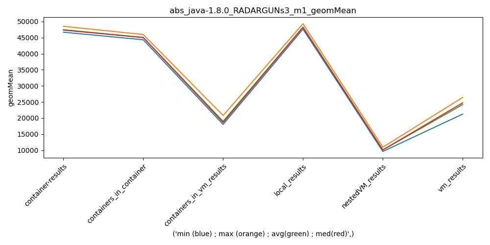
all runs of one jdk were made AVARAGE before processing
BasicOperations.Put.Throughput=
java-1.8.0 RADARGUNs3 BasicOperations.Put.Throughput= where all runs of one jdk were made AVARAGE before processing
MIN 23584.2 container-results
MIN 22328.2 containers_in_container
MIN 9073.0 containers_in_vm_results
MIN 24083.8 local_results
MIN 5012.0 nestedVM_results
MIN 12162.8 vm_results
MAX 24135.4 container-results
MAX 22870.8 containers_in_container
MAX 9333.4 containers_in_vm_results
MAX 24507.2 local_results
MAX 5172.4 nestedVM_results
MAX 12805.2 vm_results
AVG 23836.485714285714 container-results
AVG 22570.885714285716 containers_in_container
AVG 9201.676190476192 containers_in_vm_results
AVG 24216.120000000003 local_results
AVG 5090.085714285714 nestedVM_results
AVG 12581.800000000001 vm_results
MED 23781.0 container-results
MED 22521.0 containers_in_container
MED 9198.0 containers_in_vm_results
MED 24190.4 local_results
MED 5096.0 nestedVM_results
MED 12697.8 vm_results

BasicOperations.Get.Throughput=
java-1.8.0 RADARGUNs3 BasicOperations.Get.Throughput= where all runs of one jdk were made AVARAGE before processing
MIN 94350.4 container-results
MIN 89310.6 containers_in_container
MIN 36294.6 containers_in_vm_results
MIN 96321.6 local_results
MIN 20044.8 nestedVM_results
MIN 48654.2 vm_results
MAX 96547.0 container-results
MAX 91460.8 containers_in_container
MAX 37325.8 containers_in_vm_results
MAX 98020.8 local_results
MAX 20700.0 nestedVM_results
MAX 51219.2 vm_results
AVG 95349.02857142857 container-results
AVG 90282.77142857143 containers_in_container
AVG 36808.2 containers_in_vm_results
AVG 96862.84 local_results
AVG 20361.542857142857 nestedVM_results
AVG 50334.4 vm_results
MED 95120.0 container-results
MED 90078.6 containers_in_container
MED 36808.0 containers_in_vm_results
MED 96777.6 local_results
MED 20380.6 nestedVM_results
MED 50803.2 vm_results

geomMean of all keys (benchmark meassured relativre accuracy)
{'MIN': [47171.799877469166, 44655.84999661299, 18146.649988358735, 48164.19987999385, 10023.199968074068, 24326.349988438462], 'MAX': [48272.14998112266, 45735.99965716285, 18664.849898137407, 49012.399959194, 10347.399673347889, 25609.99999687622], 'AVG': [47673.74285090146, 45141.5785710166, 18403.72618667985, 48431.82999826457, 10180.471424151201, 25165.3999356259], 'MED': [47560.99998948719, 45040.64997976828, 18399.999565217386, 48384.79983465882, 10191.149964552576, 25398.59982282488]}
java-1.8.0 RADARGUNs3 geomMean where all runs of one jdk were made AVARAGE before processing
MIN 47171.799877469166 container-results
MIN 44655.84999661299 containers_in_container
MIN 18146.649988358735 containers_in_vm_results
MIN 48164.19987999385 local_results
MIN 10023.199968074068 nestedVM_results
MIN 24326.349988438462 vm_results
MAX 48272.14998112266 container-results
MAX 45735.99965716285 containers_in_container
MAX 18664.849898137407 containers_in_vm_results
MAX 49012.399959194 local_results
MAX 10347.399673347889 nestedVM_results
MAX 25609.99999687622 vm_results
AVG 47673.74285090146 container-results
AVG 45141.5785710166 containers_in_container
AVG 18403.72618667985 containers_in_vm_results
AVG 48431.82999826457 local_results
AVG 10180.471424151201 nestedVM_results
AVG 25165.3999356259 vm_results
MED 47560.99998948719 container-results
MED 45040.64997976828 containers_in_container
MED 18399.999565217386 containers_in_vm_results
MED 48384.79983465882 local_results
MED 10191.149964552576 nestedVM_results
MED 25398.59982282488 vm_results
all runs of one jdk were made MEDIAN before processing
BasicOperations.Put.Throughput=
java-1.8.0 RADARGUNs3 BasicOperations.Put.Throughput= where all runs of one jdk were made MEDIAN before processing
MIN 23586.0 container-results
MIN 22297.0 containers_in_container
MIN 9033.0 containers_in_vm_results
MIN 24102.0 local_results
MIN 4995.0 nestedVM_results
MIN 12089.0 vm_results
MAX 24143.0 container-results
MAX 22848.0 containers_in_container
MAX 9319.0 containers_in_vm_results
MAX 24458.0 local_results
MAX 5175.0 nestedVM_results
MAX 13100.0 vm_results
AVG 23843.428571428572 container-results
AVG 22563.285714285714 containers_in_container
AVG 9206.142857142857 containers_in_vm_results
AVG 24211.6 local_results
AVG 5091.857142857143 nestedVM_results
AVG 12690.142857142857 vm_results
MED 23789.0 container-results
MED 22523.0 containers_in_container
MED 9258.0 containers_in_vm_results
MED 24160.0 local_results
MED 5110.0 nestedVM_results
MED 12748.0 vm_results
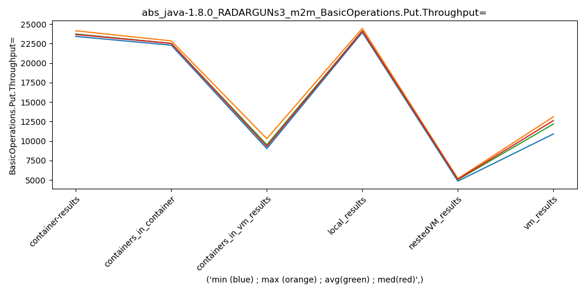
BasicOperations.Get.Throughput=
java-1.8.0 RADARGUNs3 BasicOperations.Get.Throughput= where all runs of one jdk were made MEDIAN before processing
MIN 94339.0 container-results
MIN 89164.0 containers_in_container
MIN 36140.0 containers_in_vm_results
MIN 96394.0 local_results
MIN 19938.0 nestedVM_results
MIN 48351.0 vm_results
MAX 96570.0 container-results
MAX 91381.0 containers_in_container
MAX 37276.0 containers_in_vm_results
MAX 97812.0 local_results
MAX 20719.0 nestedVM_results
MAX 52408.0 vm_results
AVG 95366.28571428571 container-results
AVG 90241.71428571429 containers_in_container
AVG 36825.28571428572 containers_in_vm_results
AVG 96839.2 local_results
AVG 20364.0 nestedVM_results
AVG 50763.42857142857 vm_results
MED 95094.0 container-results
MED 90103.0 containers_in_container
MED 37065.0 containers_in_vm_results
MED 96664.0 local_results
MED 20413.0 nestedVM_results
MED 50990.0 vm_results
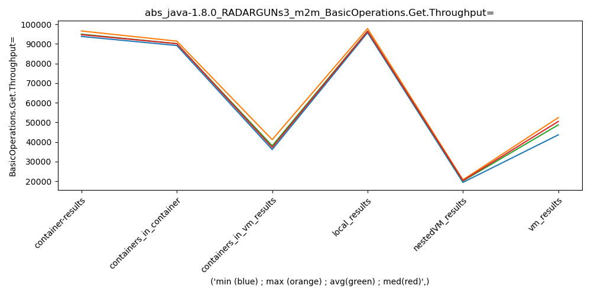
geomMean of all keys (benchmark meassured relativre accuracy)
{'MIN': [47170.74998343783, 44587.99959630394, 18067.999889307062, 48200.49987292663, 9979.494476174632, 24176.749967685897], 'MAX': [48285.49999741123, 45693.24991724708, 18638.0, 48910.999744433764, 10354.748910524098, 26201.999923669948], 'AVG': [47684.999963835806, 45123.714195260014, 18412.46428484836, 48421.399966543715, 10182.857106782107, 25380.999989949094], 'MED': [47562.497474375756, 45048.749916063156, 18524.248162881, 48325.999627529694, 10213.247769441414, 25495.499995097172]}
java-1.8.0 RADARGUNs3 geomMean where all runs of one jdk were made MEDIAN before processing
MIN 47170.74998343783 container-results
MIN 44587.99959630394 containers_in_container
MIN 18067.999889307062 containers_in_vm_results
MIN 48200.49987292663 local_results
MIN 9979.494476174632 nestedVM_results
MIN 24176.749967685897 vm_results
MAX 48285.49999741123 container-results
MAX 45693.24991724708 containers_in_container
MAX 18638.0 containers_in_vm_results
MAX 48910.999744433764 local_results
MAX 10354.748910524098 nestedVM_results
MAX 26201.999923669948 vm_results
AVG 47684.999963835806 container-results
AVG 45123.714195260014 containers_in_container
AVG 18412.46428484836 containers_in_vm_results
AVG 48421.399966543715 local_results
AVG 10182.857106782107 nestedVM_results
AVG 25380.999989949094 vm_results
MED 47562.497474375756 container-results
MED 45048.749916063156 containers_in_container
MED 18524.248162881 containers_in_vm_results
MED 48325.999627529694 local_results
MED 10213.247769441414 nestedVM_results
MED 25495.499995097172 vm_results
geomMean of all metrics from geomMean of all keys
{'MIN': [47131.56653464635, 44525.56603848765, 18081.317589533563, 48073.987448259366, 9935.111454638914, 23834.4952667604], 'MAX': [48361.90662795677, 45800.833766614276, 18786.712989944834, 49083.56203517219, 10549.552274408985, 26078.037126725605], 'AVG': [47677.494926571475, 45135.622993406425, 18409.348412566436, 48428.35307142124, 10181.266589585279, 25237.062356715785], 'MED': [47554.331130053644, 45049.79926656444, 18442.993066492458, 48345.59175254178, 10192.953553794847, 25374.797773035687]}
java-1.8.0 RADARGUNs3 geomMean geomMean
MIN 47131.56653464635 container-results
MIN 44525.56603848765 containers_in_container
MIN 18081.317589533563 containers_in_vm_results
MIN 48073.987448259366 local_results
MIN 9935.111454638914 nestedVM_results
MIN 23834.4952667604 vm_results
MAX 48361.90662795677 container-results
MAX 45800.833766614276 containers_in_container
MAX 18786.712989944834 containers_in_vm_results
MAX 49083.56203517219 local_results
MAX 10549.552274408985 nestedVM_results
MAX 26078.037126725605 vm_results
AVG 47677.494926571475 container-results
AVG 45135.622993406425 containers_in_container
AVG 18409.348412566436 containers_in_vm_results
AVG 48428.35307142124 local_results
AVG 10181.266589585279 nestedVM_results
AVG 25237.062356715785 vm_results
MED 47554.331130053644 container-results
MED 45049.79926656444 containers_in_container
MED 18442.993066492458 containers_in_vm_results
MED 48345.59175254178 local_results
MED 10192.953553794847 nestedVM_results
MED 25374.797773035687 vm_results
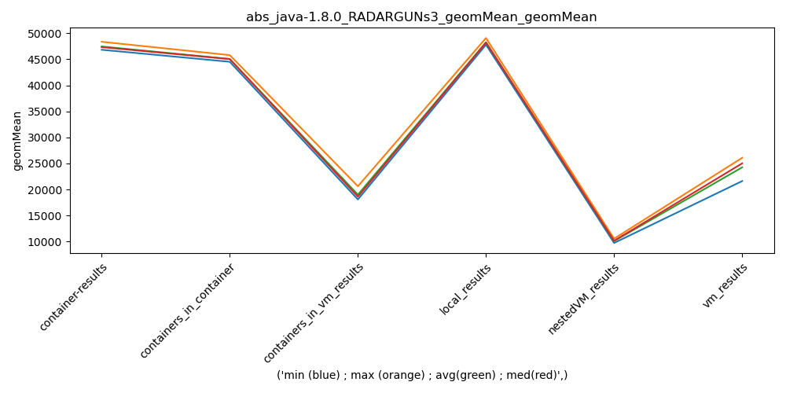
SPECJBB
all runs of one jdk are treated as INDIVIDUAL items
jbb2015.result.metric.max-jOPS
java-1.8.0 SPECJBB jbb2015.result.metric.max-jOPS where all runs of one jdk are treated as INDIVIDUAL items
MIN 10278.0 container-results
MIN 9271.0 containers_in_container
MIN 7519.0 containers_in_vm_results
MIN 10516.0 local_results
MIN 5605.0 nestedVM_results
MIN 7326.0 vm_results
MAX 10793.0 container-results
MAX 11208.0 containers_in_container
MAX 8117.0 containers_in_vm_results
MAX 11208.0 local_results
MAX 6446.0 nestedVM_results
MAX 7808.0 vm_results
AVG 10579.657142857142 container-results
AVG 10923.4 containers_in_container
AVG 7794.742857142857 containers_in_vm_results
AVG 10970.8 local_results
AVG 6167.742857142857 nestedVM_results
AVG 7610.571428571428 vm_results
MED 10654.0 container-results
MED 10931.0 containers_in_container
MED 7808.0 containers_in_vm_results
MED 10931.0 local_results
MED 6187.0 nestedVM_results
MED 7616.0 vm_results

jbb2015.result.metric.critical-jOPS
java-1.8.0 SPECJBB jbb2015.result.metric.critical-jOPS where all runs of one jdk are treated as INDIVIDUAL items
MIN 2001.0 container-results
MIN 2014.0 containers_in_container
MIN 1679.0 containers_in_vm_results
MIN 1989.0 local_results
MIN 1026.0 nestedVM_results
MIN 1543.0 vm_results
MAX 2494.0 container-results
MAX 2668.0 containers_in_container
MAX 2350.0 containers_in_vm_results
MAX 2605.0 local_results
MAX 1303.0 nestedVM_results
MAX 1935.0 vm_results
AVG 2253.2285714285713 container-results
AVG 2314.8571428571427 containers_in_container
AVG 1949.0285714285715 containers_in_vm_results
AVG 2311.7428571428572 local_results
AVG 1190.5428571428572 nestedVM_results
AVG 1707.942857142857 vm_results
MED 2234.0 container-results
MED 2352.0 containers_in_container
MED 1921.0 containers_in_vm_results
MED 2309.0 local_results
MED 1189.0 nestedVM_results
MED 1705.0 vm_results
geomMean of all keys (benchmark meassured relativre accuracy)
{'MIN': [4535.005843436147, 4321.0871317297, 3553.0833089022835, 4573.436782114737, 2398.0679723477397, 3362.1448511329786], 'MAX': [5188.231105107019, 5468.358437410628, 4367.4878362738455, 5403.410034413454, 2898.126636294556, 3886.9628246228444], 'AVG': [4882.456937875037, 5028.52965729404, 3897.7142706348045, 5036.036987269142, 2709.790066271796, 3605.3323161955655], 'MED': [4878.630545552717, 5070.474534005669, 3872.8759339798116, 5023.9107277100375, 2712.2579154645305, 3603.509400570505]}
java-1.8.0 SPECJBB geomMean where all runs of one jdk are treated as INDIVIDUAL items
MIN 4535.005843436147 container-results
MIN 4321.0871317297 containers_in_container
MIN 3553.0833089022835 containers_in_vm_results
MIN 4573.436782114737 local_results
MIN 2398.0679723477397 nestedVM_results
MIN 3362.1448511329786 vm_results
MAX 5188.231105107019 container-results
MAX 5468.358437410628 containers_in_container
MAX 4367.4878362738455 containers_in_vm_results
MAX 5403.410034413454 local_results
MAX 2898.126636294556 nestedVM_results
MAX 3886.9628246228444 vm_results
AVG 4882.456937875037 container-results
AVG 5028.52965729404 containers_in_container
AVG 3897.7142706348045 containers_in_vm_results
AVG 5036.036987269142 local_results
AVG 2709.790066271796 nestedVM_results
AVG 3605.3323161955655 vm_results
MED 4878.630545552717 container-results
MED 5070.474534005669 containers_in_container
MED 3872.8759339798116 containers_in_vm_results
MED 5023.9107277100375 local_results
MED 2712.2579154645305 nestedVM_results
MED 3603.509400570505 vm_results
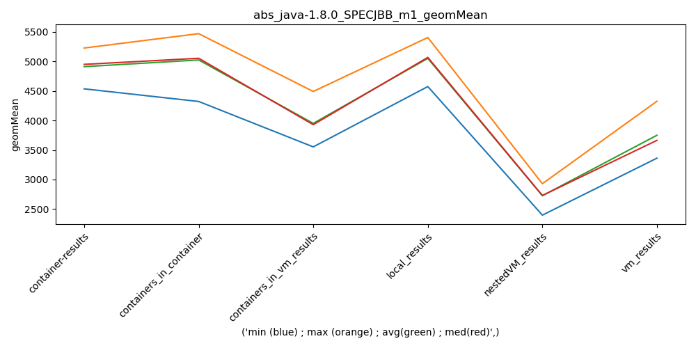
all runs of one jdk were made AVARAGE before processing
jbb2015.result.metric.max-jOPS
java-1.8.0 SPECJBB jbb2015.result.metric.max-jOPS where all runs of one jdk were made AVARAGE before processing
MIN 10493.2 container-results
MIN 10682.4 containers_in_container
MIN 7673.4 containers_in_vm_results
MIN 10820.4 local_results
MIN 6022.8 nestedVM_results
MIN 7541.8 vm_results
MAX 10654.2 container-results
MAX 11069.6 containers_in_container
MAX 7904.8 containers_in_vm_results
MAX 11097.4 local_results
MAX 6299.2 nestedVM_results
MAX 7652.4 vm_results
AVG 10579.657142857144 container-results
AVG 10923.4 containers_in_container
AVG 7794.742857142856 containers_in_vm_results
AVG 10970.800000000001 local_results
AVG 6167.742857142856 nestedVM_results
AVG 7610.571428571428 vm_results
MED 10598.8 container-results
MED 10931.2 containers_in_container
MED 7791.4 containers_in_vm_results
MED 10959.2 local_results
MED 6132.6 nestedVM_results
MED 7603.8 vm_results

jbb2015.result.metric.critical-jOPS
java-1.8.0 SPECJBB jbb2015.result.metric.critical-jOPS where all runs of one jdk were made AVARAGE before processing
MIN 2178.4 container-results
MIN 2269.0 containers_in_container
MIN 1907.8 containers_in_vm_results
MIN 2218.8 local_results
MIN 1161.2 nestedVM_results
MIN 1661.6 vm_results
MAX 2309.0 container-results
MAX 2437.6 containers_in_container
MAX 2003.8 containers_in_vm_results
MAX 2417.6 local_results
MAX 1218.8 nestedVM_results
MAX 1780.4 vm_results
AVG 2253.2285714285713 container-results
AVG 2314.8571428571427 containers_in_container
AVG 1949.0285714285715 containers_in_vm_results
AVG 2311.7428571428572 local_results
AVG 1190.542857142857 nestedVM_results
AVG 1707.9428571428573 vm_results
MED 2241.4 container-results
MED 2286.6 containers_in_container
MED 1942.0 containers_in_vm_results
MED 2321.6 local_results
MED 1181.8 nestedVM_results
MED 1697.6 vm_results

geomMean of all keys (benchmark meassured relativre accuracy)
{'MIN': [4781.044538591959, 4923.247464834568, 3826.135454998947, 4899.826886737938, 2644.5557963484152, 3539.9795027655173], 'MAX': [4959.893930317462, 5194.54107308817, 3979.9043003569823, 5179.678970747125, 2770.8238774775996, 3691.1154086535958], 'AVG': [4882.456937875037, 5028.52965729404, 3897.714270634804, 5036.036987269143, 2709.7900662717957, 3605.3323161955655], 'MED': [4874.028141075922, 4999.52816973762, 3889.8456010489667, 5044.093448777491, 2692.119365852859, 3592.799866399463]}
java-1.8.0 SPECJBB geomMean where all runs of one jdk were made AVARAGE before processing
MIN 4781.044538591959 container-results
MIN 4923.247464834568 containers_in_container
MIN 3826.135454998947 containers_in_vm_results
MIN 4899.826886737938 local_results
MIN 2644.5557963484152 nestedVM_results
MIN 3539.9795027655173 vm_results
MAX 4959.893930317462 container-results
MAX 5194.54107308817 containers_in_container
MAX 3979.9043003569823 containers_in_vm_results
MAX 5179.678970747125 local_results
MAX 2770.8238774775996 nestedVM_results
MAX 3691.1154086535958 vm_results
AVG 4882.456937875037 container-results
AVG 5028.52965729404 containers_in_container
AVG 3897.714270634804 containers_in_vm_results
AVG 5036.036987269143 local_results
AVG 2709.7900662717957 nestedVM_results
AVG 3605.3323161955655 vm_results
MED 4874.028141075922 container-results
MED 4999.52816973762 containers_in_container
MED 3889.8456010489667 containers_in_vm_results
MED 5044.093448777491 local_results
MED 2692.119365852859 nestedVM_results
MED 3592.799866399463 vm_results

all runs of one jdk were made MEDIAN before processing
jbb2015.result.metric.max-jOPS
java-1.8.0 SPECJBB jbb2015.result.metric.max-jOPS where all runs of one jdk were made MEDIAN before processing
MIN 10509.0 container-results
MIN 10793.0 containers_in_container
MIN 7712.0 containers_in_vm_results
MIN 10931.0 local_results
MIN 6007.0 nestedVM_results
MIN 7538.0 vm_results
MAX 10654.0 container-results
MAX 11070.0 containers_in_container
MAX 7905.0 containers_in_vm_results
MAX 11208.0 local_results
MAX 6315.0 nestedVM_results
MAX 7703.0 vm_results
AVG 10593.857142857143 container-results
AVG 10990.714285714286 containers_in_container
AVG 7794.428571428572 containers_in_vm_results
AVG 11010.285714285714 local_results
AVG 6167.0 nestedVM_results
AVG 7615.714285714285 vm_results
MED 10654.0 container-results
MED 11070.0 containers_in_container
MED 7808.0 containers_in_vm_results
MED 10931.0 local_results
MED 6145.0 nestedVM_results
MED 7616.0 vm_results

jbb2015.result.metric.critical-jOPS
java-1.8.0 SPECJBB jbb2015.result.metric.critical-jOPS where all runs of one jdk were made MEDIAN before processing
MIN 2156.0 container-results
MIN 2233.0 containers_in_container
MIN 1837.0 containers_in_vm_results
MIN 2209.0 local_results
MIN 1161.0 nestedVM_results
MIN 1636.0 vm_results
MAX 2371.0 container-results
MAX 2483.0 containers_in_container
MAX 2064.0 containers_in_vm_results
MAX 2365.0 local_results
MAX 1230.0 nestedVM_results
MAX 1795.0 vm_results
AVG 2244.1428571428573 container-results
AVG 2352.4285714285716 containers_in_container
AVG 1926.4285714285713 containers_in_vm_results
AVG 2289.4285714285716 local_results
AVG 1195.4285714285713 nestedVM_results
AVG 1709.0 vm_results
MED 2229.0 container-results
MED 2348.0 containers_in_container
MED 1921.0 containers_in_vm_results
MED 2293.0 local_results
MED 1189.0 nestedVM_results
MED 1699.0 vm_results
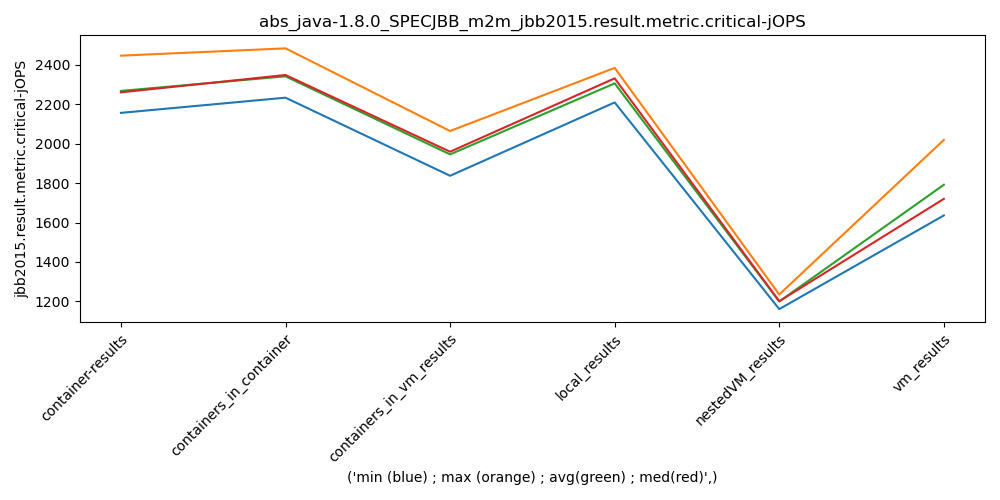
geomMean of all keys (benchmark meassured relativre accuracy)
{'MIN': [4759.979411720181, 4909.25340555975, 3763.900104944338, 4913.916869463707, 2640.8572471831944, 3511.718667547274], 'MAX': [5025.995821725282, 5242.786472859638, 4039.2969685330145, 5148.487156437316, 2787.01453171669, 3718.4519628469047], 'AVG': [4875.872110375199, 5084.768461407309, 3874.972244798559, 5020.6834887172035, 2715.181025272532, 3607.6662420858324], 'MED': [4873.16796345047, 5098.2702949137565, 3872.8759339798116, 5006.474108591794, 2703.0362557686867, 3597.163326845196]}
java-1.8.0 SPECJBB geomMean where all runs of one jdk were made MEDIAN before processing
MIN 4759.979411720181 container-results
MIN 4909.25340555975 containers_in_container
MIN 3763.900104944338 containers_in_vm_results
MIN 4913.916869463707 local_results
MIN 2640.8572471831944 nestedVM_results
MIN 3511.718667547274 vm_results
MAX 5025.995821725282 container-results
MAX 5242.786472859638 containers_in_container
MAX 4039.2969685330145 containers_in_vm_results
MAX 5148.487156437316 local_results
MAX 2787.01453171669 nestedVM_results
MAX 3718.4519628469047 vm_results
AVG 4875.872110375199 container-results
AVG 5084.768461407309 containers_in_container
AVG 3874.972244798559 containers_in_vm_results
AVG 5020.6834887172035 local_results
AVG 2715.181025272532 nestedVM_results
AVG 3607.6662420858324 vm_results
MED 4873.16796345047 container-results
MED 5098.2702949137565 containers_in_container
MED 3872.8759339798116 containers_in_vm_results
MED 5006.474108591794 local_results
MED 2703.0362557686867 nestedVM_results
MED 3597.163326845196 vm_results

geomMean of all metrics from geomMean of all keys
{'MIN': [4690.673865435533, 4709.267712092862, 3712.512632219642, 4793.106445671606, 2558.5056657676423, 3470.395417987448], 'MAX': [5057.135712379137, 5300.564328151449, 4125.437756702219, 5242.641175119761, 2818.0920257351086, 3764.523930589732], 'AVG': [4880.26100788341, 5047.20647059217, 3890.118803701317, 5030.913944634245, 2711.5858622564815, 3606.110123677557], 'MED': [4875.274960304865, 5055.919619360713, 3878.5242480006855, 5024.802587124588, 2702.458640944418, 3597.821511512122]}
java-1.8.0 SPECJBB geomMean geomMean
MIN 4690.673865435533 container-results
MIN 4709.267712092862 containers_in_container
MIN 3712.512632219642 containers_in_vm_results
MIN 4793.106445671606 local_results
MIN 2558.5056657676423 nestedVM_results
MIN 3470.395417987448 vm_results
MAX 5057.135712379137 container-results
MAX 5300.564328151449 containers_in_container
MAX 4125.437756702219 containers_in_vm_results
MAX 5242.641175119761 local_results
MAX 2818.0920257351086 nestedVM_results
MAX 3764.523930589732 vm_results
AVG 4880.26100788341 container-results
AVG 5047.20647059217 containers_in_container
AVG 3890.118803701317 containers_in_vm_results
AVG 5030.913944634245 local_results
AVG 2711.5858622564815 nestedVM_results
AVG 3606.110123677557 vm_results
MED 4875.274960304865 container-results
MED 5055.919619360713 containers_in_container
MED 3878.5242480006855 containers_in_vm_results
MED 5024.802587124588 local_results
MED 2702.458640944418 nestedVM_results
MED 3597.821511512122 vm_results
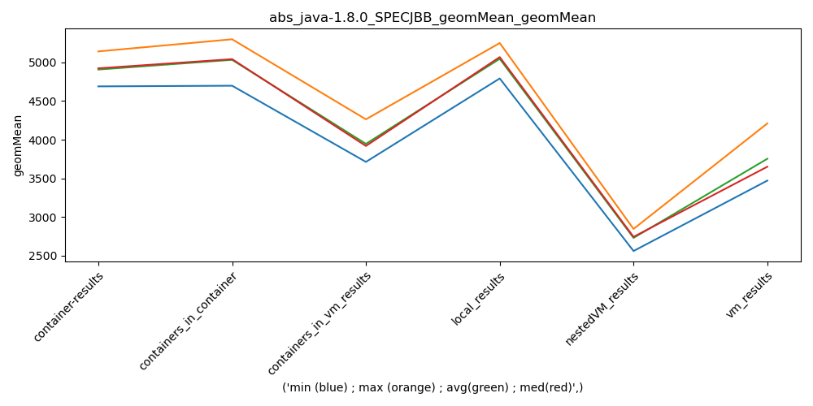
geomMean of all benchamrks from geomMean of all metrics and all keys
{'MIN': [5111.071309390299, 5060.655023979818, 3609.5222000210815, 5123.118177408537, 2514.567491729912, 3991.233062118317], 'MAX': [5420.109735617961, 5395.49998945871, 3817.1912625400337, 5423.298457633247, 2634.2080890810457, 4230.36361031018], 'AVG': [5305.46689774297, 5267.249592094566, 3716.7149837503284, 5291.303560380243, 2585.492187041901, 4136.036448743941], 'MED': [5324.915263285286, 5282.1461558067085, 3717.2209704322054, 5299.513755300533, 2588.0793869360837, 4146.269807301343]}
java-1.8.0 geomMean geomMean geomMean
MIN 5111.071309390299 container-results
MIN 5060.655023979818 containers_in_container
MIN 3609.5222000210815 containers_in_vm_results
MIN 5123.118177408537 local_results
MIN 2514.567491729912 nestedVM_results
MIN 3991.233062118317 vm_results
MAX 5420.109735617961 container-results
MAX 5395.49998945871 containers_in_container
MAX 3817.1912625400337 containers_in_vm_results
MAX 5423.298457633247 local_results
MAX 2634.2080890810457 nestedVM_results
MAX 4230.36361031018 vm_results
AVG 5305.46689774297 container-results
AVG 5267.249592094566 containers_in_container
AVG 3716.7149837503284 containers_in_vm_results
AVG 5291.303560380243 local_results
AVG 2585.492187041901 nestedVM_results
AVG 4136.036448743941 vm_results
MED 5324.915263285286 container-results
MED 5282.1461558067085 containers_in_container
MED 3717.2209704322054 containers_in_vm_results
MED 5299.513755300533 local_results
MED 2588.0793869360837 nestedVM_results
MED 4146.269807301343 vm_results
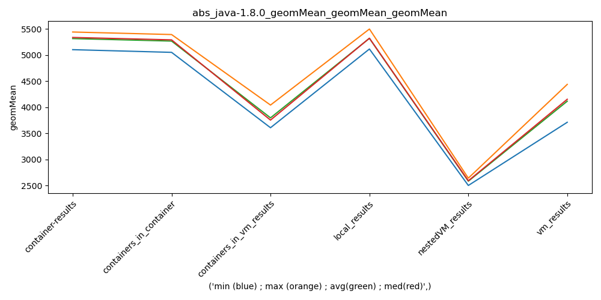
java-11
J2DBENCH
all runs of one jdk are treated as INDIVIDUAL items
j2dbench.geom
java-11 J2DBENCH j2dbench.geom where all runs of one jdk are treated as INDIVIDUAL items
MIN 143502.0 container-results
MIN 138811.0 containers_in_container
MIN 101050.0 containers_in_vm_results
MIN 147478.0 local_results
MIN 95835.0 nestedVM_results
MIN 145802.0 vm_results
MAX 144166.0 container-results
MAX 139902.0 containers_in_container
MAX 104792.0 containers_in_vm_results
MAX 150734.0 local_results
MAX 98551.0 nestedVM_results
MAX 147284.0 vm_results
AVG 143864.6 container-results
AVG 139458.39393939395 containers_in_container
AVG 103581.05882352941 containers_in_vm_results
AVG 150276.0 local_results
AVG 97632.28 nestedVM_results
AVG 146823.36 vm_results
MED 143849.0 container-results
MED 139556.0 containers_in_container
MED 103710.0 containers_in_vm_results
MED 150483.0 local_results
MED 97751.0 nestedVM_results
MED 146933.0 vm_results
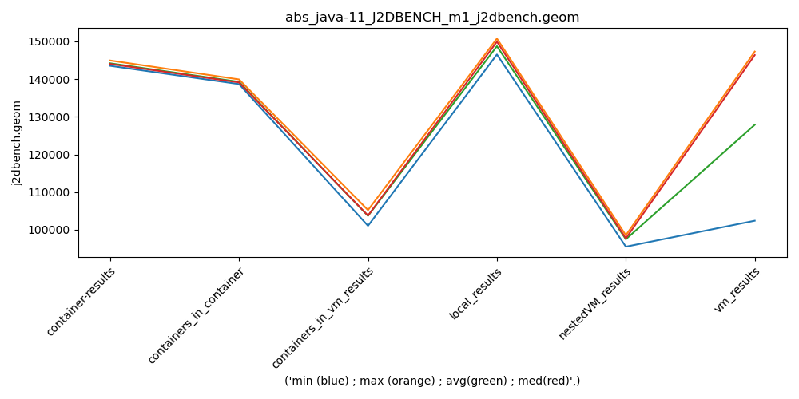
geomMean of all keys (benchmark meassured relativre accuracy)
{'MIN': [143502.0, 138811.0, 101050.0, 147478.0, 95835.0, 145802.0], 'MAX': [144166.0, 139902.0, 104792.0, 150734.0, 98551.0, 147284.0], 'AVG': [143864.6, 139458.39393939395, 103581.05882352941, 150276.0, 97632.28, 146823.36], 'MED': [143849.0, 139556.0, 103710.0, 150483.0, 97751.0, 146933.0]}
java-11 J2DBENCH geomMean where all runs of one jdk are treated as INDIVIDUAL items
MIN 143502.0 container-results
MIN 138811.0 containers_in_container
MIN 101050.0 containers_in_vm_results
MIN 147478.0 local_results
MIN 95835.0 nestedVM_results
MIN 145802.0 vm_results
MAX 144166.0 container-results
MAX 139902.0 containers_in_container
MAX 104792.0 containers_in_vm_results
MAX 150734.0 local_results
MAX 98551.0 nestedVM_results
MAX 147284.0 vm_results
AVG 143864.6 container-results
AVG 139458.39393939395 containers_in_container
AVG 103581.05882352941 containers_in_vm_results
AVG 150276.0 local_results
AVG 97632.28 nestedVM_results
AVG 146823.36 vm_results
MED 143849.0 container-results
MED 139556.0 containers_in_container
MED 103710.0 containers_in_vm_results
MED 150483.0 local_results
MED 97751.0 nestedVM_results
MED 146933.0 vm_results

all runs of one jdk were made AVARAGE before processing
j2dbench.geom
java-11 J2DBENCH j2dbench.geom where all runs of one jdk were made AVARAGE before processing
MIN 143705.2 container-results
MIN 139014.0 containers_in_container
MIN 102801.2 containers_in_vm_results
MIN 149416.0 local_results
MIN 97113.2 nestedVM_results
MIN 146419.4 vm_results
MAX 143998.4 container-results
MAX 139751.2 containers_in_container
MAX 104020.2 containers_in_vm_results
MAX 150637.0 local_results
MAX 97991.8 nestedVM_results
MAX 147037.8 vm_results
AVG 143864.6 container-results
AVG 139463.85714285713 containers_in_container
AVG 103571.42142857143 containers_in_vm_results
AVG 150276.0 local_results
AVG 97632.28 nestedVM_results
AVG 146823.36000000002 vm_results
MED 143854.2 container-results
MED 139554.0 containers_in_container
MED 103958.4 containers_in_vm_results
MED 150479.2 local_results
MED 97644.0 nestedVM_results
MED 146916.8 vm_results
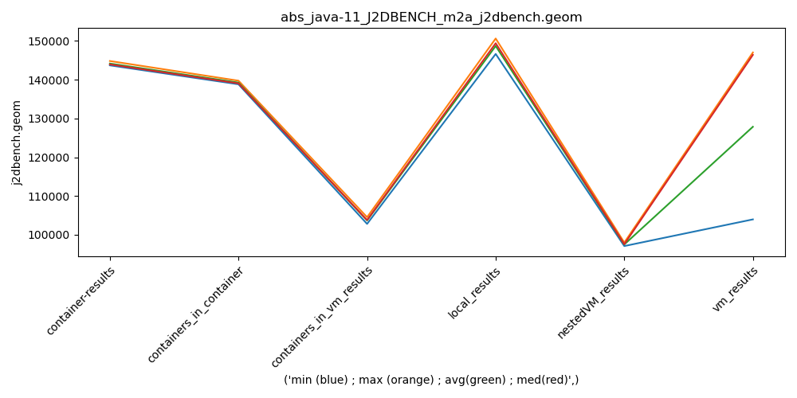
geomMean of all keys (benchmark meassured relativre accuracy)
{'MIN': [143705.2, 139014.0, 102801.2, 149416.0, 97113.2, 146419.4], 'MAX': [143998.4, 139751.2, 104020.2, 150637.0, 97991.8, 147037.8], 'AVG': [143864.6, 139463.85714285713, 103571.42142857143, 150276.0, 97632.28, 146823.36000000002], 'MED': [143854.2, 139554.0, 103958.4, 150479.2, 97644.0, 146916.8]}
java-11 J2DBENCH geomMean where all runs of one jdk were made AVARAGE before processing
MIN 143705.2 container-results
MIN 139014.0 containers_in_container
MIN 102801.2 containers_in_vm_results
MIN 149416.0 local_results
MIN 97113.2 nestedVM_results
MIN 146419.4 vm_results
MAX 143998.4 container-results
MAX 139751.2 containers_in_container
MAX 104020.2 containers_in_vm_results
MAX 150637.0 local_results
MAX 97991.8 nestedVM_results
MAX 147037.8 vm_results
AVG 143864.6 container-results
AVG 139463.85714285713 containers_in_container
AVG 103571.42142857143 containers_in_vm_results
AVG 150276.0 local_results
AVG 97632.28 nestedVM_results
AVG 146823.36000000002 vm_results
MED 143854.2 container-results
MED 139554.0 containers_in_container
MED 103958.4 containers_in_vm_results
MED 150479.2 local_results
MED 97644.0 nestedVM_results
MED 146916.8 vm_results

all runs of one jdk were made MEDIAN before processing
j2dbench.geom
java-11 J2DBENCH j2dbench.geom where all runs of one jdk were made MEDIAN before processing
MIN 143751.0 container-results
MIN 139054.0 containers_in_container
MIN 102797.0 containers_in_vm_results
MIN 149900.0 local_results
MIN 96867.0 nestedVM_results
MIN 146480.0 vm_results
MAX 144020.0 container-results
MAX 139774.0 containers_in_container
MAX 104241.0 containers_in_vm_results
MAX 150697.0 local_results
MAX 98073.0 nestedVM_results
MAX 147141.0 vm_results
AVG 143882.57142857142 container-results
AVG 139471.0 containers_in_container
AVG 103624.0 containers_in_vm_results
AVG 150392.0 local_results
AVG 97595.8 nestedVM_results
AVG 146893.4 vm_results
MED 143869.0 container-results
MED 139556.0 containers_in_container
MED 103800.0 containers_in_vm_results
MED 150483.0 local_results
MED 97716.0 nestedVM_results
MED 146955.0 vm_results

geomMean of all keys (benchmark meassured relativre accuracy)
{'MIN': [143751.0, 139054.0, 102797.0, 149900.0, 96867.0, 146480.0], 'MAX': [144020.0, 139774.0, 104241.0, 150697.0, 98073.0, 147141.0], 'AVG': [143882.57142857142, 139471.0, 103624.0, 150392.0, 97595.8, 146893.4], 'MED': [143869.0, 139556.0, 103800.0, 150483.0, 97716.0, 146955.0]}
java-11 J2DBENCH geomMean where all runs of one jdk were made MEDIAN before processing
MIN 143751.0 container-results
MIN 139054.0 containers_in_container
MIN 102797.0 containers_in_vm_results
MIN 149900.0 local_results
MIN 96867.0 nestedVM_results
MIN 146480.0 vm_results
MAX 144020.0 container-results
MAX 139774.0 containers_in_container
MAX 104241.0 containers_in_vm_results
MAX 150697.0 local_results
MAX 98073.0 nestedVM_results
MAX 147141.0 vm_results
AVG 143882.57142857142 container-results
AVG 139471.0 containers_in_container
AVG 103624.0 containers_in_vm_results
AVG 150392.0 local_results
AVG 97595.8 nestedVM_results
AVG 146893.4 vm_results
MED 143869.0 container-results
MED 139556.0 containers_in_container
MED 103800.0 containers_in_vm_results
MED 150483.0 local_results
MED 97716.0 nestedVM_results
MED 146955.0 vm_results
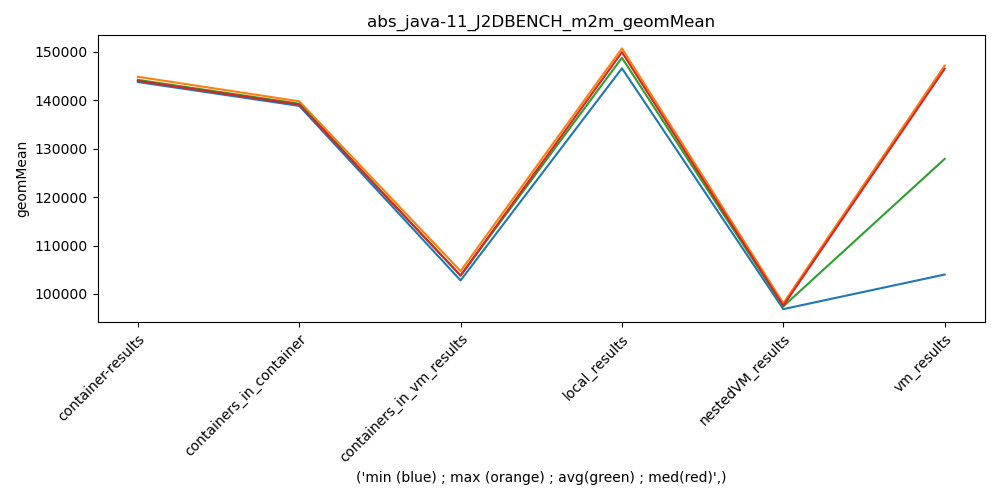
geomMean of all metrics from geomMean of all keys
{'MIN': [143652.69256318855, 138959.62593105313, 102212.72831592384, 148927.64635566997, 96603.47608702169, 146233.47884361187], 'MAX': [144061.44743840004, 139809.05091645953, 104350.56243385527, 150689.32803224502, 98204.95711809296, 147154.23204482588], 'AVG': [143870.59022676616, 139464.4169319012, 103592.15756297954, 150314.6567218299, 97620.11848517, 146846.70295525147], 'MED': [143857.3997504986, 139555.3333301485, 103822.74923347362, 150481.73332267112, 97703.65651116187, 146934.93249938462]}
java-11 J2DBENCH geomMean geomMean
MIN 143652.69256318855 container-results
MIN 138959.62593105313 containers_in_container
MIN 102212.72831592384 containers_in_vm_results
MIN 148927.64635566997 local_results
MIN 96603.47608702169 nestedVM_results
MIN 146233.47884361187 vm_results
MAX 144061.44743840004 container-results
MAX 139809.05091645953 containers_in_container
MAX 104350.56243385527 containers_in_vm_results
MAX 150689.32803224502 local_results
MAX 98204.95711809296 nestedVM_results
MAX 147154.23204482588 vm_results
AVG 143870.59022676616 container-results
AVG 139464.4169319012 containers_in_container
AVG 103592.15756297954 containers_in_vm_results
AVG 150314.6567218299 local_results
AVG 97620.11848517 nestedVM_results
AVG 146846.70295525147 vm_results
MED 143857.3997504986 container-results
MED 139555.3333301485 containers_in_container
MED 103822.74923347362 containers_in_vm_results
MED 150481.73332267112 local_results
MED 97703.65651116187 nestedVM_results
MED 146934.93249938462 vm_results

JMH
all runs of one jdk are treated as INDIVIDUAL items
geom
java-11 JMH geom where all runs of one jdk are treated as INDIVIDUAL items
MIN 421.0 container-results
MIN 423.0 containers_in_container
MIN 329.0 containers_in_vm_results
MIN 412.0 local_results
MIN 339.0 nestedVM_results
MIN 361.0 vm_results
MAX 429.0 container-results
MAX 437.0 containers_in_container
MAX 344.0 containers_in_vm_results
MAX 465.0 local_results
MAX 344.0 nestedVM_results
MAX 365.0 vm_results
AVG 427.14285714285717 container-results
AVG 427.0285714285714 containers_in_container
AVG 336.5151515151515 containers_in_vm_results
AVG 425.14285714285717 local_results
AVG 341.55882352941177 nestedVM_results
AVG 363.3142857142857 vm_results
MED 427.0 container-results
MED 427.0 containers_in_container
MED 337.0 containers_in_vm_results
MED 424.0 local_results
MED 342.0 nestedVM_results
MED 363.0 vm_results

geomMean of all keys (benchmark meassured relativre accuracy)
{'MIN': [421.0, 423.0, 329.0, 412.0, 339.0, 361.0], 'MAX': [429.0, 437.0, 344.0, 465.0, 344.0, 365.0], 'AVG': [427.14285714285717, 427.0285714285714, 336.5151515151515, 425.14285714285717, 341.55882352941177, 363.3142857142857], 'MED': [427.0, 427.0, 337.0, 424.0, 342.0, 363.0]}
java-11 JMH geomMean where all runs of one jdk are treated as INDIVIDUAL items
MIN 421.0 container-results
MIN 423.0 containers_in_container
MIN 329.0 containers_in_vm_results
MIN 412.0 local_results
MIN 339.0 nestedVM_results
MIN 361.0 vm_results
MAX 429.0 container-results
MAX 437.0 containers_in_container
MAX 344.0 containers_in_vm_results
MAX 465.0 local_results
MAX 344.0 nestedVM_results
MAX 365.0 vm_results
AVG 427.14285714285717 container-results
AVG 427.0285714285714 containers_in_container
AVG 336.5151515151515 containers_in_vm_results
AVG 425.14285714285717 local_results
AVG 341.55882352941177 nestedVM_results
AVG 363.3142857142857 vm_results
MED 427.0 container-results
MED 427.0 containers_in_container
MED 337.0 containers_in_vm_results
MED 424.0 local_results
MED 342.0 nestedVM_results
MED 363.0 vm_results

all runs of one jdk were made AVARAGE before processing
geom
java-11 JMH geom where all runs of one jdk were made AVARAGE before processing
MIN 426.2 container-results
MIN 425.2 containers_in_container
MIN 333.6 containers_in_vm_results
MIN 421.6 local_results
MIN 341.0 nestedVM_results
MIN 362.8 vm_results
MAX 427.8 container-results
MAX 429.0 containers_in_container
MAX 340.2 containers_in_vm_results
MAX 431.8 local_results
MAX 343.0 nestedVM_results
MAX 363.8 vm_results
AVG 427.14285714285717 container-results
AVG 427.0285714285714 containers_in_container
AVG 336.37142857142857 containers_in_vm_results
AVG 425.14285714285717 local_results
AVG 341.55 nestedVM_results
AVG 363.31428571428575 vm_results
MED 427.2 container-results
MED 426.8 containers_in_container
MED 336.4 containers_in_vm_results
MED 424.2 local_results
MED 341.25 nestedVM_results
MED 363.6 vm_results

geomMean of all keys (benchmark meassured relativre accuracy)
{'MIN': [426.2, 425.2, 333.6, 421.6, 341.0, 362.8], 'MAX': [427.8, 429.0, 340.2, 431.8, 343.0, 363.8], 'AVG': [427.14285714285717, 427.0285714285714, 336.37142857142857, 425.14285714285717, 341.55, 363.31428571428575], 'MED': [427.2, 426.8, 336.4, 424.2, 341.25, 363.6]}
java-11 JMH geomMean where all runs of one jdk were made AVARAGE before processing
MIN 426.2 container-results
MIN 425.2 containers_in_container
MIN 333.6 containers_in_vm_results
MIN 421.6 local_results
MIN 341.0 nestedVM_results
MIN 362.8 vm_results
MAX 427.8 container-results
MAX 429.0 containers_in_container
MAX 340.2 containers_in_vm_results
MAX 431.8 local_results
MAX 343.0 nestedVM_results
MAX 363.8 vm_results
AVG 427.14285714285717 container-results
AVG 427.0285714285714 containers_in_container
AVG 336.37142857142857 containers_in_vm_results
AVG 425.14285714285717 local_results
AVG 341.55 nestedVM_results
AVG 363.31428571428575 vm_results
MED 427.2 container-results
MED 426.8 containers_in_container
MED 336.4 containers_in_vm_results
MED 424.2 local_results
MED 341.25 nestedVM_results
MED 363.6 vm_results
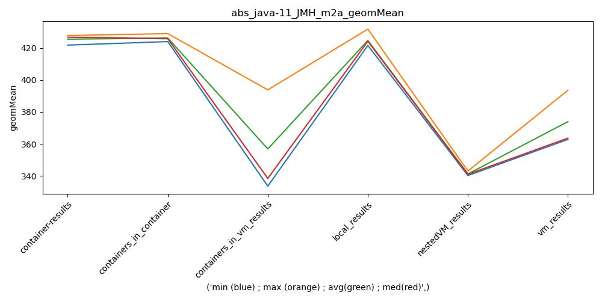
all runs of one jdk were made MEDIAN before processing
geom
java-11 JMH geom where all runs of one jdk were made MEDIAN before processing
MIN 427.0 container-results
MIN 425.0 containers_in_container
MIN 333.0 containers_in_vm_results
MIN 423.0 local_results
MIN 340.0 nestedVM_results
MIN 363.0 vm_results
MAX 428.0 container-results
MAX 428.0 containers_in_container
MAX 341.0 containers_in_vm_results
MAX 425.0 local_results
MAX 343.0 nestedVM_results
MAX 364.0 vm_results
AVG 427.14285714285717 container-results
AVG 427.0 containers_in_container
AVG 336.42857142857144 containers_in_vm_results
AVG 424.14285714285717 local_results
AVG 341.7142857142857 nestedVM_results
AVG 363.42857142857144 vm_results
MED 427.0 container-results
MED 427.0 containers_in_container
MED 335.0 containers_in_vm_results
MED 424.0 local_results
MED 342.0 nestedVM_results
MED 363.0 vm_results

geomMean of all keys (benchmark meassured relativre accuracy)
{'MIN': [427.0, 425.0, 333.0, 423.0, 340.0, 363.0], 'MAX': [428.0, 428.0, 341.0, 425.0, 343.0, 364.0], 'AVG': [427.14285714285717, 427.0, 336.42857142857144, 424.14285714285717, 341.7142857142857, 363.42857142857144], 'MED': [427.0, 427.0, 335.0, 424.0, 342.0, 363.0]}
java-11 JMH geomMean where all runs of one jdk were made MEDIAN before processing
MIN 427.0 container-results
MIN 425.0 containers_in_container
MIN 333.0 containers_in_vm_results
MIN 423.0 local_results
MIN 340.0 nestedVM_results
MIN 363.0 vm_results
MAX 428.0 container-results
MAX 428.0 containers_in_container
MAX 341.0 containers_in_vm_results
MAX 425.0 local_results
MAX 343.0 nestedVM_results
MAX 364.0 vm_results
AVG 427.14285714285717 container-results
AVG 427.0 containers_in_container
AVG 336.42857142857144 containers_in_vm_results
AVG 424.14285714285717 local_results
AVG 341.7142857142857 nestedVM_results
AVG 363.42857142857144 vm_results
MED 427.0 container-results
MED 427.0 containers_in_container
MED 335.0 containers_in_vm_results
MED 424.0 local_results
MED 342.0 nestedVM_results
MED 363.0 vm_results

geomMean of all metrics from geomMean of all keys
{'MIN': [424.7249808267228, 424.3988363277769, 331.86036853366403, 418.83798529581514, 339.99901960501603, 362.2655489774851], 'MAX': [428.26634512202634, 431.31460674572344, 341.72942588028604, 440.2589298960878, 343.33300991789883, 364.2662886622437], 'AVG': [427.142857142857, 427.01904740663474, 336.4383786505751, 424.80926211740825, 341.60769474957294, 363.3523769586111], 'MED': [427.0666562608391, 426.9333229220889, 336.1322879983037, 424.06665618723224, 341.749817028489, 363.1998899082382]}
java-11 JMH geomMean geomMean
MIN 424.7249808267228 container-results
MIN 424.3988363277769 containers_in_container
MIN 331.86036853366403 containers_in_vm_results
MIN 418.83798529581514 local_results
MIN 339.99901960501603 nestedVM_results
MIN 362.2655489774851 vm_results
MAX 428.26634512202634 container-results
MAX 431.31460674572344 containers_in_container
MAX 341.72942588028604 containers_in_vm_results
MAX 440.2589298960878 local_results
MAX 343.33300991789883 nestedVM_results
MAX 364.2662886622437 vm_results
AVG 427.142857142857 container-results
AVG 427.01904740663474 containers_in_container
AVG 336.4383786505751 containers_in_vm_results
AVG 424.80926211740825 local_results
AVG 341.60769474957294 nestedVM_results
AVG 363.3523769586111 vm_results
MED 427.0666562608391 container-results
MED 426.9333229220889 containers_in_container
MED 336.1322879983037 containers_in_vm_results
MED 424.06665618723224 local_results
MED 341.749817028489 nestedVM_results
MED 363.1998899082382 vm_results

RADARGUNs1
all runs of one jdk are treated as INDIVIDUAL items
BasicOperations.Put.Throughput=
java-11 RADARGUNs1 BasicOperations.Put.Throughput= where all runs of one jdk are treated as INDIVIDUAL items
MIN 702230.0 container-results
MIN 713058.0 containers_in_container
MIN 483370.0 containers_in_vm_results
MIN 727048.0 local_results
MIN 168749.0 nestedVM_results
MIN 574159.0 vm_results
MAX 832896.0 container-results
MAX 831721.0 containers_in_container
MAX 592886.0 containers_in_vm_results
MAX 838532.0 local_results
MAX 177018.0 nestedVM_results
MAX 631221.0 vm_results
AVG 793595.1714285715 container-results
AVG 792081.875 containers_in_container
AVG 556208.9714285714 containers_in_vm_results
AVG 801942.0857142857 local_results
AVG 173641.82857142857 nestedVM_results
AVG 597197.8571428572 vm_results
MED 798437.0 container-results
MED 801889.0 containers_in_container
MED 560309.0 containers_in_vm_results
MED 800222.0 local_results
MED 173941.0 nestedVM_results
MED 597100.0 vm_results

BasicOperations.Get.Throughput=
java-11 RADARGUNs1 BasicOperations.Get.Throughput= where all runs of one jdk are treated as INDIVIDUAL items
MIN 2808723.0 container-results
MIN 2852640.0 containers_in_container
MIN 1933528.0 containers_in_vm_results
MIN 2908298.0 local_results
MIN 674899.0 nestedVM_results
MIN 2296720.0 vm_results
MAX 3331523.0 container-results
MAX 3326624.0 containers_in_container
MAX 2371603.0 containers_in_vm_results
MAX 3353942.0 local_results
MAX 708025.0 nestedVM_results
MAX 2525050.0 vm_results
AVG 3174368.8285714285 container-results
AVG 3168323.375 containers_in_container
AVG 2224833.5714285714 containers_in_vm_results
AVG 3207787.314285714 local_results
AVG 694545.0 nestedVM_results
AVG 2388797.9142857143 vm_results
MED 3193765.0 container-results
MED 3207727.0 containers_in_container
MED 2241170.0 containers_in_vm_results
MED 3200797.0 local_results
MED 695668.0 nestedVM_results
MED 2388496.0 vm_results
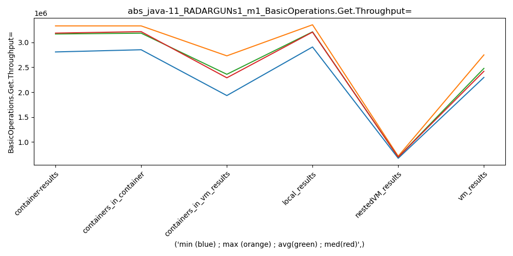
geomMean of all keys (benchmark meassured relativre accuracy)
{'MIN': [1404410.7491364484, 1426217.9963525913, 966751.9999255238, 1454122.4997585313, 337473.7491287285, 1148338.9998079836], 'MAX': [1665776.7499301939, 1663376.9987299934, 1185786.7499082624, 1677017.4993553287, 354024.2498050098, 1262483.499317912], 'AVG': [1587187.3785686605, 1584162.7187496643, 1112417.3642855638, 1603888.9142787019, 347278.0785266223, 1194397.3357131851], 'MED': [1596878.2499943445, 1603820.7494302473, 1120601.499878525, 1600421.2498383042, 347857.99917207594, 1194223.9997588391]}
java-11 RADARGUNs1 geomMean where all runs of one jdk are treated as INDIVIDUAL items
MIN 1404410.7491364484 container-results
MIN 1426217.9963525913 containers_in_container
MIN 966751.9999255238 containers_in_vm_results
MIN 1454122.4997585313 local_results
MIN 337473.7491287285 nestedVM_results
MIN 1148338.9998079836 vm_results
MAX 1665776.7499301939 container-results
MAX 1663376.9987299934 containers_in_container
MAX 1185786.7499082624 containers_in_vm_results
MAX 1677017.4993553287 local_results
MAX 354024.2498050098 nestedVM_results
MAX 1262483.499317912 vm_results
AVG 1587187.3785686605 container-results
AVG 1584162.7187496643 containers_in_container
AVG 1112417.3642855638 containers_in_vm_results
AVG 1603888.9142787019 local_results
AVG 347278.0785266223 nestedVM_results
AVG 1194397.3357131851 vm_results
MED 1596878.2499943445 container-results
MED 1603820.7494302473 containers_in_container
MED 1120601.499878525 containers_in_vm_results
MED 1600421.2498383042 local_results
MED 347857.99917207594 nestedVM_results
MED 1194223.9997588391 vm_results
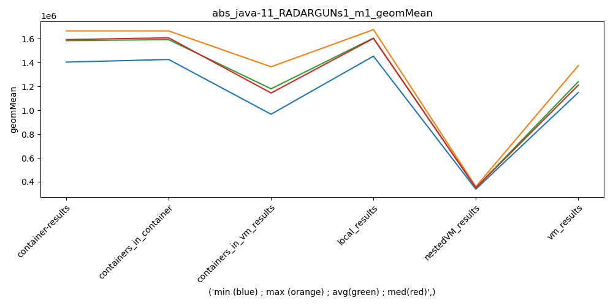
all runs of one jdk were made AVARAGE before processing
BasicOperations.Put.Throughput=
java-11 RADARGUNs1 BasicOperations.Put.Throughput= where all runs of one jdk were made AVARAGE before processing
MIN 775425.0 container-results
MIN 775930.0 containers_in_container
MIN 540041.6 containers_in_vm_results
MIN 784435.4 local_results
MIN 171766.8 nestedVM_results
MIN 588933.8 vm_results
MAX 811847.8 container-results
MAX 807578.6 containers_in_container
MAX 578142.4 containers_in_vm_results
MAX 822873.2 local_results
MAX 175256.0 nestedVM_results
MAX 606003.2 vm_results
AVG 793595.1714285715 container-results
AVG 790697.4285714285 containers_in_container
AVG 556208.9714285714 containers_in_vm_results
AVG 801942.0857142856 local_results
AVG 173641.82857142857 nestedVM_results
AVG 597197.8571428572 vm_results
MED 793576.4 container-results
MED 790602.2 containers_in_container
MED 553256.2 containers_in_vm_results
MED 800140.6 local_results
MED 173505.4 nestedVM_results
MED 596960.2 vm_results

BasicOperations.Get.Throughput=
java-11 RADARGUNs1 BasicOperations.Get.Throughput= where all runs of one jdk were made AVARAGE before processing
MIN 3101648.0 container-results
MIN 3103477.5 containers_in_container
MIN 2160122.2 containers_in_vm_results
MIN 3137751.0 local_results
MIN 687070.6 nestedVM_results
MIN 2355622.6 vm_results
MAX 3247295.6 container-results
MAX 3230391.0 containers_in_container
MAX 2312578.8 containers_in_vm_results
MAX 3291557.6 local_results
MAX 701006.8 nestedVM_results
MAX 2423981.0 vm_results
AVG 3174368.8285714285 container-results
AVG 3162765.1571428576 containers_in_container
AVG 2224833.5714285714 containers_in_vm_results
AVG 3207787.314285714 local_results
AVG 694545.0 nestedVM_results
AVG 2388797.9142857143 vm_results
MED 3174347.0 container-results
MED 3162513.0 containers_in_container
MED 2213047.8 containers_in_vm_results
MED 3200514.4 local_results
MED 693990.4 nestedVM_results
MED 2387837.6 vm_results

geomMean of all keys (benchmark meassured relativre accuracy)
{'MIN': [1550836.9999455132, 1551799.373815765, 1080072.149943475, 1568873.14999824, 343534.44999894843, 1177839.4496636118], 'MAX': [1623671.6998240994, 1615176.349886476, 1156287.0999977125, 1645762.599920268, 350507.69997362397, 1211998.4499739264], 'AVG': [1587187.3785686605, 1581388.717845226, 1112417.3642855638, 1603888.9142787016, 347278.0785266223, 1194397.3357131851], 'MED': [1587163.1499662537, 1581230.4497854193, 1106518.14998506, 1600269.1999550075, 347002.9999123351, 1193919.5999997319]}
java-11 RADARGUNs1 geomMean where all runs of one jdk were made AVARAGE before processing
MIN 1550836.9999455132 container-results
MIN 1551799.373815765 containers_in_container
MIN 1080072.149943475 containers_in_vm_results
MIN 1568873.14999824 local_results
MIN 343534.44999894843 nestedVM_results
MIN 1177839.4496636118 vm_results
MAX 1623671.6998240994 container-results
MAX 1615176.349886476 containers_in_container
MAX 1156287.0999977125 containers_in_vm_results
MAX 1645762.599920268 local_results
MAX 350507.69997362397 nestedVM_results
MAX 1211998.4499739264 vm_results
AVG 1587187.3785686605 container-results
AVG 1581388.717845226 containers_in_container
AVG 1112417.3642855638 containers_in_vm_results
AVG 1603888.9142787016 local_results
AVG 347278.0785266223 nestedVM_results
AVG 1194397.3357131851 vm_results
MED 1587163.1499662537 container-results
MED 1581230.4497854193 containers_in_container
MED 1106518.14998506 containers_in_vm_results
MED 1600269.1999550075 local_results
MED 347002.9999123351 nestedVM_results
MED 1193919.5999997319 vm_results
all runs of one jdk were made MEDIAN before processing
BasicOperations.Put.Throughput=
java-11 RADARGUNs1 BasicOperations.Put.Throughput= where all runs of one jdk were made MEDIAN before processing
MIN 793979.0 container-results
MIN 793193.0 containers_in_container
MIN 549809.0 containers_in_vm_results
MIN 796588.0 local_results
MIN 171959.0 nestedVM_results
MIN 584766.0 vm_results
MAX 801315.0 container-results
MAX 819387.0 containers_in_container
MAX 576261.0 containers_in_vm_results
MAX 819282.0 local_results
MAX 175553.0 nestedVM_results
MAX 605098.0 vm_results
AVG 798010.0 container-results
AVG 803475.8571428572 containers_in_container
AVG 560169.1428571428 containers_in_vm_results
AVG 803964.5714285715 local_results
AVG 174037.2857142857 nestedVM_results
AVG 594571.4285714285 vm_results
MED 798437.0 container-results
MED 801889.0 containers_in_container
MED 559302.0 containers_in_vm_results
MED 800222.0 local_results
MED 174809.0 nestedVM_results
MED 597007.0 vm_results

BasicOperations.Get.Throughput=
java-11 RADARGUNs1 BasicOperations.Get.Throughput= where all runs of one jdk were made MEDIAN before processing
MIN 3175918.0 container-results
MIN 3172644.0 containers_in_container
MIN 2199049.0 containers_in_vm_results
MIN 3186187.0 local_results
MIN 687754.0 nestedVM_results
MIN 2338917.0 vm_results
MAX 3205051.0 container-results
MAX 3277257.0 containers_in_container
MAX 2304974.0 containers_in_vm_results
MAX 3277173.0 local_results
MAX 702169.0 nestedVM_results
MAX 2420158.0 vm_results
AVG 3192084.1428571427 container-results
AVG 3213898.8571428573 containers_in_container
AVG 2240636.1428571427 containers_in_vm_results
AVG 3215820.714285714 local_results
AVG 696107.7142857143 nestedVM_results
AVG 2378190.1428571427 vm_results
MED 3193765.0 container-results
MED 3207727.0 containers_in_container
MED 2237115.0 containers_in_vm_results
MED 3200797.0 local_results
MED 699270.0 nestedVM_results
MED 2388079.0 vm_results

geomMean of all keys (benchmark meassured relativre accuracy)
{'MIN': [1587958.4999999213, 1586353.9996772474, 1099571.2490061752, 1593134.7494659703, 343897.49938898947, 1169495.2494225875], 'MAX': [1602577.7491482277, 1638701.248385135, 1152504.4998671373, 1638575.2499613804, 351095.2498354257, 1210137.4985860079], 'AVG': [1596031.0356761324, 1606950.571428165, 1120328.1785258371, 1607919.7499725653, 348064.21413161856, 1189118.9640456757], 'MED': [1596878.2499943445, 1603820.7494302473, 1118580.7497583712, 1600421.2498383042, 349626.49989667546, 1194026.7499319268]}
java-11 RADARGUNs1 geomMean where all runs of one jdk were made MEDIAN before processing
MIN 1587958.4999999213 container-results
MIN 1586353.9996772474 containers_in_container
MIN 1099571.2490061752 containers_in_vm_results
MIN 1593134.7494659703 local_results
MIN 343897.49938898947 nestedVM_results
MIN 1169495.2494225875 vm_results
MAX 1602577.7491482277 container-results
MAX 1638701.248385135 containers_in_container
MAX 1152504.4998671373 containers_in_vm_results
MAX 1638575.2499613804 local_results
MAX 351095.2498354257 nestedVM_results
MAX 1210137.4985860079 vm_results
AVG 1596031.0356761324 container-results
AVG 1606950.571428165 containers_in_container
AVG 1120328.1785258371 containers_in_vm_results
AVG 1607919.7499725653 local_results
AVG 348064.21413161856 nestedVM_results
AVG 1189118.9640456757 vm_results
MED 1596878.2499943445 container-results
MED 1603820.7494302473 containers_in_container
MED 1118580.7497583712 containers_in_vm_results
MED 1600421.2498383042 local_results
MED 349626.49989667546 nestedVM_results
MED 1194026.7499319268 vm_results
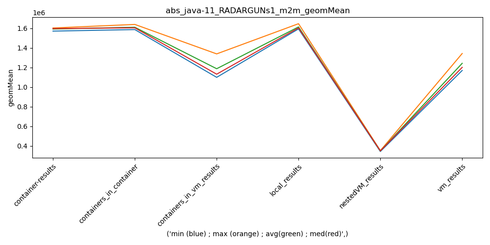
geomMean of all metrics from geomMean of all keys
{'MIN': [1512283.2745531972, 1519872.6412107805, 1047121.4936511937, 1537495.2349329619, 341622.4763132599, 1165158.1865014634], 'MAX': [1630464.6046466145, 1638966.742449087, 1164764.9707255294, 1653701.2624812573, 351872.3779380353, 1227969.2677011502], 'AVG': [1590129.806043762, 1590792.9134707132, 1115048.0761947716, 1605231.4021732544, 347539.92624545004, 1192635.2802660507], 'MED': [1593633.2938315219, 1596255.015691128, 1115216.0920802522, 1600370.5649387108, 348160.7870954683, 1194056.7765747793]}
java-11 RADARGUNs1 geomMean geomMean
MIN 1512283.2745531972 container-results
MIN 1519872.6412107805 containers_in_container
MIN 1047121.4936511937 containers_in_vm_results
MIN 1537495.2349329619 local_results
MIN 341622.4763132599 nestedVM_results
MIN 1165158.1865014634 vm_results
MAX 1630464.6046466145 container-results
MAX 1638966.742449087 containers_in_container
MAX 1164764.9707255294 containers_in_vm_results
MAX 1653701.2624812573 local_results
MAX 351872.3779380353 nestedVM_results
MAX 1227969.2677011502 vm_results
AVG 1590129.806043762 container-results
AVG 1590792.9134707132 containers_in_container
AVG 1115048.0761947716 containers_in_vm_results
AVG 1605231.4021732544 local_results
AVG 347539.92624545004 nestedVM_results
AVG 1192635.2802660507 vm_results
MED 1593633.2938315219 container-results
MED 1596255.015691128 containers_in_container
MED 1115216.0920802522 containers_in_vm_results
MED 1600370.5649387108 local_results
MED 348160.7870954683 nestedVM_results
MED 1194056.7765747793 vm_results
RADARGUNs3
all runs of one jdk are treated as INDIVIDUAL items
BasicOperations.Put.Throughput=
java-11 RADARGUNs3 BasicOperations.Put.Throughput= where all runs of one jdk are treated as INDIVIDUAL items
MIN 22238.0 container-results
MIN 21119.0 containers_in_container
MIN 8803.0 containers_in_vm_results
MIN 22588.0 local_results
MIN 4782.0 nestedVM_results
MIN 11268.0 vm_results
MAX 23021.0 container-results
MAX 21947.0 containers_in_container
MAX 9768.0 containers_in_vm_results
MAX 23326.0 local_results
MAX 5141.0 nestedVM_results
MAX 12570.0 vm_results
AVG 22655.714285714286 container-results
AVG 21561.22857142857 containers_in_container
AVG 9206.171428571428 containers_in_vm_results
AVG 22957.97142857143 local_results
AVG 4974.529411764706 nestedVM_results
AVG 12035.971428571429 vm_results
MED 22662.0 container-results
MED 21598.0 containers_in_container
MED 9106.0 containers_in_vm_results
MED 23007.0 local_results
MED 5000.0 nestedVM_results
MED 12096.0 vm_results
BasicOperations.Get.Throughput=
java-11 RADARGUNs3 BasicOperations.Get.Throughput= where all runs of one jdk are treated as INDIVIDUAL items
MIN 88949.0 container-results
MIN 84507.0 containers_in_container
MIN 35188.0 containers_in_vm_results
MIN 90368.0 local_results
MIN 19147.0 nestedVM_results
MIN 45073.0 vm_results
MAX 92110.0 container-results
MAX 87827.0 containers_in_container
MAX 39074.0 containers_in_vm_results
MAX 93284.0 local_results
MAX 20571.0 nestedVM_results
MAX 50291.0 vm_results
AVG 90626.68571428572 container-results
AVG 86243.31428571428 containers_in_container
AVG 36823.74285714285 containers_in_vm_results
AVG 91831.94285714286 local_results
AVG 19903.264705882353 nestedVM_results
AVG 48142.142857142855 vm_results
MED 90656.0 container-results
MED 86409.0 containers_in_container
MED 36444.0 containers_in_vm_results
MED 92024.0 local_results
MED 20024.0 nestedVM_results
MED 48362.0 vm_results
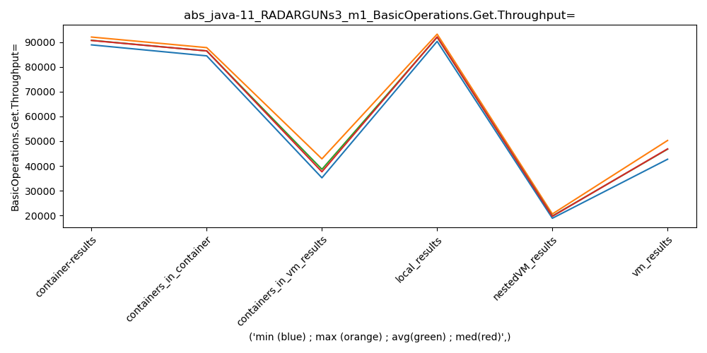
geomMean of all keys (benchmark meassured relativre accuracy)
{'MIN': [44475.24999367626, 42245.74928912967, 17599.9989772727, 45179.9998229305, 9568.748821031933, 22536.249998613344], 'MAX': [46048.49954124456, 43903.74891737606, 19536.49999360172, 46646.99973202992, 10283.749851100036, 25142.749849608732], 'AVG': [45312.385704176755, 43122.05714100194, 18412.10714134832, 45915.957142854924, 9950.345505033993, 24071.50713891375], 'MED': [45325.99995587522, 43200.249790944494, 18216.99931382773, 46012.9999891335, 10005.99820107919, 24186.49937465114]}
java-11 RADARGUNs3 geomMean where all runs of one jdk are treated as INDIVIDUAL items
MIN 44475.24999367626 container-results
MIN 42245.74928912967 containers_in_container
MIN 17599.9989772727 containers_in_vm_results
MIN 45179.9998229305 local_results
MIN 9568.748821031933 nestedVM_results
MIN 22536.249998613344 vm_results
MAX 46048.49954124456 container-results
MAX 43903.74891737606 containers_in_container
MAX 19536.49999360172 containers_in_vm_results
MAX 46646.99973202992 local_results
MAX 10283.749851100036 nestedVM_results
MAX 25142.749849608732 vm_results
AVG 45312.385704176755 container-results
AVG 43122.05714100194 containers_in_container
AVG 18412.10714134832 containers_in_vm_results
AVG 45915.957142854924 local_results
AVG 9950.345505033993 nestedVM_results
AVG 24071.50713891375 vm_results
MED 45325.99995587522 container-results
MED 43200.249790944494 containers_in_container
MED 18216.99931382773 containers_in_vm_results
MED 46012.9999891335 local_results
MED 10005.99820107919 nestedVM_results
MED 24186.49937465114 vm_results
all runs of one jdk were made AVARAGE before processing
BasicOperations.Put.Throughput=
java-11 RADARGUNs3 BasicOperations.Put.Throughput= where all runs of one jdk were made AVARAGE before processing
MIN 22436.2 container-results
MIN 21355.2 containers_in_container
MIN 8972.8 containers_in_vm_results
MIN 22647.6 local_results
MIN 4919.8 nestedVM_results
MIN 11644.8 vm_results
MAX 22856.4 container-results
MAX 21711.8 containers_in_container
MAX 9446.4 containers_in_vm_results
MAX 23121.8 local_results
MAX 5026.6 nestedVM_results
MAX 12287.8 vm_results
AVG 22655.714285714286 container-results
AVG 21561.22857142857 containers_in_container
AVG 9206.171428571428 containers_in_vm_results
AVG 22957.971428571425 local_results
AVG 4974.292857142857 nestedVM_results
AVG 12035.971428571429 vm_results
MED 22704.4 container-results
MED 21615.8 containers_in_container
MED 9251.6 containers_in_vm_results
MED 22999.8 local_results
MED 4971.6 nestedVM_results
MED 12025.4 vm_results
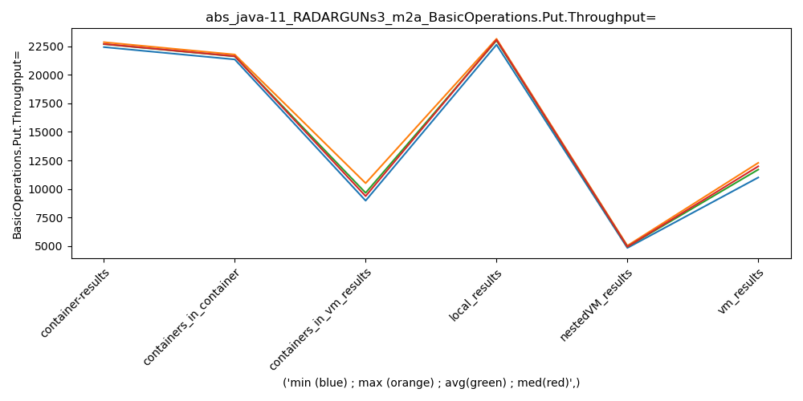
BasicOperations.Get.Throughput=
java-11 RADARGUNs3 BasicOperations.Get.Throughput= where all runs of one jdk were made AVARAGE before processing
MIN 89725.8 container-results
MIN 85425.4 containers_in_container
MIN 35880.6 containers_in_vm_results
MIN 90610.6 local_results
MIN 19678.6 nestedVM_results
MIN 46586.4 vm_results
MAX 91429.8 container-results
MAX 86841.2 containers_in_container
MAX 37796.0 containers_in_vm_results
MAX 92486.8 local_results
MAX 20104.6 nestedVM_results
MAX 49142.8 vm_results
AVG 90626.68571428572 container-results
AVG 86243.31428571428 containers_in_container
AVG 36823.74285714285 containers_in_vm_results
AVG 91831.94285714286 local_results
AVG 19902.207142857143 nestedVM_results
AVG 48142.142857142855 vm_results
MED 90830.6 container-results
MED 86449.0 containers_in_container
MED 37008.6 containers_in_vm_results
MED 92005.2 local_results
MED 19895.2 nestedVM_results
MED 48095.4 vm_results

geomMean of all keys (benchmark meassured relativre accuracy)
{'MIN': [44867.64974856606, 42711.549984518235, 17942.949804310327, 45300.24971851701, 9839.449998856644, 23291.39993044643], 'MAX': [45713.84998794129, 43422.099974091536, 18895.39982112048, 46243.49999989188, 10052.749989928128, 24573.499910269195], 'AVG': [45312.385704176755, 43122.05714100194, 18412.10714134832, 45915.95714285492, 9949.844563212626, 24071.50713891375], 'MED': [45412.04988370378, 43228.04985423238, 18503.749991825982, 46001.099975544064, 9945.399756671424, 24049.249950050416]}
java-11 RADARGUNs3 geomMean where all runs of one jdk were made AVARAGE before processing
MIN 44867.64974856606 container-results
MIN 42711.549984518235 containers_in_container
MIN 17942.949804310327 containers_in_vm_results
MIN 45300.24971851701 local_results
MIN 9839.449998856644 nestedVM_results
MIN 23291.39993044643 vm_results
MAX 45713.84998794129 container-results
MAX 43422.099974091536 containers_in_container
MAX 18895.39982112048 containers_in_vm_results
MAX 46243.49999989188 local_results
MAX 10052.749989928128 nestedVM_results
MAX 24573.499910269195 vm_results
AVG 45312.385704176755 container-results
AVG 43122.05714100194 containers_in_container
AVG 18412.10714134832 containers_in_vm_results
AVG 45915.95714285492 local_results
AVG 9949.844563212626 nestedVM_results
AVG 24071.50713891375 vm_results
MED 45412.04988370378 container-results
MED 43228.04985423238 containers_in_container
MED 18503.749991825982 containers_in_vm_results
MED 46001.099975544064 local_results
MED 9945.399756671424 nestedVM_results
MED 24049.249950050416 vm_results
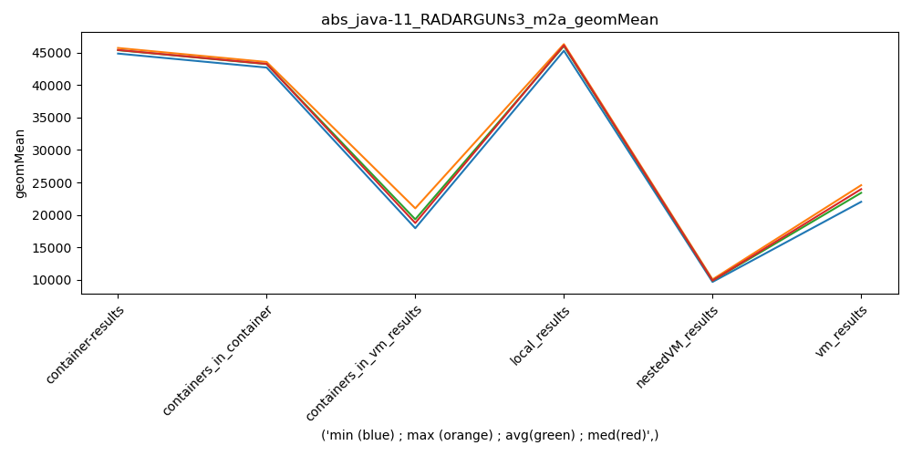
all runs of one jdk were made MEDIAN before processing
BasicOperations.Put.Throughput=
java-11 RADARGUNs3 BasicOperations.Put.Throughput= where all runs of one jdk were made MEDIAN before processing
MIN 22370.0 container-results
MIN 21378.0 containers_in_container
MIN 8935.0 containers_in_vm_results
MIN 22658.0 local_results
MIN 4887.0 nestedVM_results
MIN 11584.0 vm_results
MAX 22881.0 container-results
MAX 21742.0 containers_in_container
MAX 9408.0 containers_in_vm_results
MAX 23128.0 local_results
MAX 5054.0 nestedVM_results
MAX 12306.0 vm_results
AVG 22643.0 container-results
AVG 21566.714285714286 containers_in_container
AVG 9211.142857142857 containers_in_vm_results
AVG 22963.14285714286 local_results
AVG 4995.142857142857 nestedVM_results
AVG 12048.714285714286 vm_results
MED 22676.0 container-results
MED 21617.0 containers_in_container
MED 9320.0 containers_in_vm_results
MED 23023.0 local_results
MED 5012.0 nestedVM_results
MED 12065.0 vm_results
BasicOperations.Get.Throughput=
java-11 RADARGUNs3 BasicOperations.Get.Throughput= where all runs of one jdk were made MEDIAN before processing
MIN 89457.0 container-results
MIN 85469.0 containers_in_container
MIN 35749.0 containers_in_vm_results
MIN 90621.0 local_results
MIN 19560.0 nestedVM_results
MIN 46355.0 vm_results
MAX 91517.0 container-results
MAX 86968.0 containers_in_container
MAX 37621.0 containers_in_vm_results
MAX 92530.0 local_results
MAX 20236.0 nestedVM_results
MAX 49229.0 vm_results
AVG 90588.14285714286 container-results
AVG 86260.57142857143 containers_in_container
AVG 36836.42857142857 containers_in_vm_results
AVG 91848.57142857143 local_results
AVG 19993.285714285714 nestedVM_results
AVG 48195.57142857143 vm_results
MED 90738.0 container-results
MED 86450.0 containers_in_container
MED 37259.0 containers_in_vm_results
MED 92095.0 local_results
MED 20066.0 nestedVM_results
MED 48253.0 vm_results
geomMean of all keys (benchmark meassured relativre accuracy)
{'MIN': [44734.24963045653, 42745.2486482416, 17872.249858369818, 45313.249916553104, 9776.999539736105, 23172.7495131674], 'MAX': [45760.24996653755, 43484.0, 18813.249799011333, 46260.49978113077, 10112.998763967096, 24613.249968258966], 'AVG': [45290.03553447806, 43131.85711423111, 18420.249887511498, 45925.28570339847, 9993.463780218079, 24097.607142195506], 'MED': [45360.499203602245, 43229.49976578494, 18634.749260454246, 46046.749993892074, 10028.498990377373, 24128.249936537046]}
java-11 RADARGUNs3 geomMean where all runs of one jdk were made MEDIAN before processing
MIN 44734.24963045653 container-results
MIN 42745.2486482416 containers_in_container
MIN 17872.249858369818 containers_in_vm_results
MIN 45313.249916553104 local_results
MIN 9776.999539736105 nestedVM_results
MIN 23172.7495131674 vm_results
MAX 45760.24996653755 container-results
MAX 43484.0 containers_in_container
MAX 18813.249799011333 containers_in_vm_results
MAX 46260.49978113077 local_results
MAX 10112.998763967096 nestedVM_results
MAX 24613.249968258966 vm_results
AVG 45290.03553447806 container-results
AVG 43131.85711423111 containers_in_container
AVG 18420.249887511498 containers_in_vm_results
AVG 45925.28570339847 local_results
AVG 9993.463780218079 nestedVM_results
AVG 24097.607142195506 vm_results
MED 45360.499203602245 container-results
MED 43229.49976578494 containers_in_container
MED 18634.749260454246 containers_in_vm_results
MED 46046.749993892074 local_results
MED 10028.498990377373 nestedVM_results
MED 24128.249936537046 vm_results
geomMean of all metrics from geomMean of all keys
{'MIN': [44692.085945256375, 42566.904170361275, 17804.450342197833, 45264.460047941015, 9727.707963553506, 22997.7282114241], 'MAX': [45840.62780587119, 43602.75915279094, 19078.99773676167, 46383.29293213918, 10149.362867855989, 24775.147621383563], 'AVG': [45304.93442237028, 43125.32355131462, 18414.820990042554, 45919.06645247693, 9964.530328299055, 24080.203997518154], 'MED': [45366.16923653593, 43219.264374105034, 18451.005959955364, 46020.279258372495, 9993.237292127704, 24121.267493784693]}
java-11 RADARGUNs3 geomMean geomMean
MIN 44692.085945256375 container-results
MIN 42566.904170361275 containers_in_container
MIN 17804.450342197833 containers_in_vm_results
MIN 45264.460047941015 local_results
MIN 9727.707963553506 nestedVM_results
MIN 22997.7282114241 vm_results
MAX 45840.62780587119 container-results
MAX 43602.75915279094 containers_in_container
MAX 19078.99773676167 containers_in_vm_results
MAX 46383.29293213918 local_results
MAX 10149.362867855989 nestedVM_results
MAX 24775.147621383563 vm_results
AVG 45304.93442237028 container-results
AVG 43125.32355131462 containers_in_container
AVG 18414.820990042554 containers_in_vm_results
AVG 45919.06645247693 local_results
AVG 9964.530328299055 nestedVM_results
AVG 24080.203997518154 vm_results
MED 45366.16923653593 container-results
MED 43219.264374105034 containers_in_container
MED 18451.005959955364 containers_in_vm_results
MED 46020.279258372495 local_results
MED 9993.237292127704 nestedVM_results
MED 24121.267493784693 vm_results

SPECJBB
all runs of one jdk are treated as INDIVIDUAL items
jbb2015.result.metric.max-jOPS
java-11 SPECJBB jbb2015.result.metric.max-jOPS where all runs of one jdk are treated as INDIVIDUAL items
MIN 8580.0 container-results
MIN 8612.0 containers_in_container
MIN 6037.0 containers_in_vm_results
MIN 8612.0 local_results
MIN 4665.0 nestedVM_results
MIN 5635.0 vm_results
MAX 9201.0 container-results
MAX 9305.0 containers_in_container
MAX 6520.0 containers_in_vm_results
MAX 9503.0 local_results
MAX 5194.0 nestedVM_results
MAX 6440.0 vm_results
AVG 8831.08 container-results
AVG 9016.56 containers_in_container
AVG 6314.16 containers_in_vm_results
AVG 9064.12 local_results
AVG 4934.84 nestedVM_results
AVG 5939.48 vm_results
MED 8810.0 container-results
MED 9037.0 containers_in_container
MED 6359.0 containers_in_vm_results
MED 9123.0 local_results
MED 4946.0 nestedVM_results
MED 5957.0 vm_results

jbb2015.result.metric.critical-jOPS
java-11 SPECJBB jbb2015.result.metric.critical-jOPS where all runs of one jdk are treated as INDIVIDUAL items
MIN 1924.0 container-results
MIN 1847.0 containers_in_container
MIN 1510.0 containers_in_vm_results
MIN 1957.0 local_results
MIN 819.0 nestedVM_results
MIN 1130.0 vm_results
MAX 2526.0 container-results
MAX 2459.0 containers_in_container
MAX 1835.0 containers_in_vm_results
MAX 2647.0 local_results
MAX 1030.0 nestedVM_results
MAX 1430.0 vm_results
AVG 2266.44 container-results
AVG 2251.36 containers_in_container
AVG 1647.76 containers_in_vm_results
AVG 2319.0 local_results
AVG 927.48 nestedVM_results
AVG 1278.6 vm_results
MED 2290.0 container-results
MED 2278.0 containers_in_container
MED 1646.0 containers_in_vm_results
MED 2315.0 local_results
MED 928.0 nestedVM_results
MED 1280.0 vm_results
geomMean of all keys (benchmark meassured relativre accuracy)
{'MIN': [4062.993969968452, 3988.278325292757, 3019.2499068477255, 4105.323860549859, 1954.6444689508114, 2523.4004834746306], 'MAX': [4820.967330318678, 4783.408303709814, 3458.930470535654, 5015.420321368888, 2312.9677905236813, 3034.6663737551116], 'AVG': [4473.825315677848, 4505.499142337062, 3225.557359837211, 4584.724013503976, 2139.3843514431906, 2755.7610796293643], 'MED': [4491.647804536771, 4537.211258030642, 3235.2610404726233, 4595.622373520261, 2142.4023898418336, 2761.3330114276328]}
java-11 SPECJBB geomMean where all runs of one jdk are treated as INDIVIDUAL items
MIN 4062.993969968452 container-results
MIN 3988.278325292757 containers_in_container
MIN 3019.2499068477255 containers_in_vm_results
MIN 4105.323860549859 local_results
MIN 1954.6444689508114 nestedVM_results
MIN 2523.4004834746306 vm_results
MAX 4820.967330318678 container-results
MAX 4783.408303709814 containers_in_container
MAX 3458.930470535654 containers_in_vm_results
MAX 5015.420321368888 local_results
MAX 2312.9677905236813 nestedVM_results
MAX 3034.6663737551116 vm_results
AVG 4473.825315677848 container-results
AVG 4505.499142337062 containers_in_container
AVG 3225.557359837211 containers_in_vm_results
AVG 4584.724013503976 local_results
AVG 2139.3843514431906 nestedVM_results
AVG 2755.7610796293643 vm_results
MED 4491.647804536771 container-results
MED 4537.211258030642 containers_in_container
MED 3235.2610404726233 containers_in_vm_results
MED 4595.622373520261 local_results
MED 2142.4023898418336 nestedVM_results
MED 2761.3330114276328 vm_results

all runs of one jdk were made AVARAGE before processing
jbb2015.result.metric.max-jOPS
java-11 SPECJBB jbb2015.result.metric.max-jOPS where all runs of one jdk were made AVARAGE before processing
MIN 8651.0 container-results
MIN 8906.8 containers_in_container
MIN 6214.4 containers_in_vm_results
MIN 8935.6 local_results
MIN 4814.8 nestedVM_results
MIN 5860.2 vm_results
MAX 8959.8 container-results
MAX 9091.0 containers_in_container
MAX 6391.4 containers_in_vm_results
MAX 9217.2 local_results
MAX 5036.0 nestedVM_results
MAX 6032.2 vm_results
AVG 8831.079999999998 container-results
AVG 9016.560000000001 containers_in_container
AVG 6314.16 containers_in_vm_results
AVG 9064.12 local_results
AVG 4934.84 nestedVM_results
AVG 5939.4800000000005 vm_results
MED 8861.4 container-results
MED 9058.0 containers_in_container
MED 6310.8 containers_in_vm_results
MED 9057.2 local_results
MED 4897.8 nestedVM_results
MED 5941.8 vm_results

jbb2015.result.metric.critical-jOPS
java-11 SPECJBB jbb2015.result.metric.critical-jOPS where all runs of one jdk were made AVARAGE before processing
MIN 2214.2 container-results
MIN 2166.0 containers_in_container
MIN 1608.2 containers_in_vm_results
MIN 2210.2 local_results
MIN 900.0 nestedVM_results
MIN 1251.0 vm_results
MAX 2375.2 container-results
MAX 2337.6 containers_in_container
MAX 1674.2 containers_in_vm_results
MAX 2426.6 local_results
MAX 941.4 nestedVM_results
MAX 1319.4 vm_results
AVG 2266.4399999999996 container-results
AVG 2251.3599999999997 containers_in_container
AVG 1647.7599999999998 containers_in_vm_results
AVG 2319.0 local_results
AVG 927.4799999999999 nestedVM_results
AVG 1278.6 vm_results
MED 2227.6 container-results
MED 2273.8 containers_in_container
MED 1660.0 containers_in_vm_results
MED 2317.0 local_results
MED 937.6 nestedVM_results
MED 1264.2 vm_results

geomMean of all keys (benchmark meassured relativre accuracy)
{'MIN': [4376.647598333683, 4392.280592129788, 3161.3285308553427, 4444.036804528063, 2081.662796900593, 2707.6022972364312], 'MAX': [4613.167779303068, 4609.893881641962, 3271.1591034371895, 4729.318927710416, 2177.3585832379563, 2821.149531662581], 'AVG': [4473.825315677847, 4505.499142337062, 3225.5573598372107, 4584.724013503976, 2139.38435144319, 2755.7610796293643], 'MED': [4442.933112258162, 4538.29047109151, 3236.653827643605, 4580.996878409764, 2142.9366019553636, 2740.7341279299603]}
java-11 SPECJBB geomMean where all runs of one jdk were made AVARAGE before processing
MIN 4376.647598333683 container-results
MIN 4392.280592129788 containers_in_container
MIN 3161.3285308553427 containers_in_vm_results
MIN 4444.036804528063 local_results
MIN 2081.662796900593 nestedVM_results
MIN 2707.6022972364312 vm_results
MAX 4613.167779303068 container-results
MAX 4609.893881641962 containers_in_container
MAX 3271.1591034371895 containers_in_vm_results
MAX 4729.318927710416 local_results
MAX 2177.3585832379563 nestedVM_results
MAX 2821.149531662581 vm_results
AVG 4473.825315677847 container-results
AVG 4505.499142337062 containers_in_container
AVG 3225.5573598372107 containers_in_vm_results
AVG 4584.724013503976 local_results
AVG 2139.38435144319 nestedVM_results
AVG 2755.7610796293643 vm_results
MED 4442.933112258162 container-results
MED 4538.29047109151 containers_in_container
MED 3236.653827643605 containers_in_vm_results
MED 4580.996878409764 local_results
MED 2142.9366019553636 nestedVM_results
MED 2740.7341279299603 vm_results
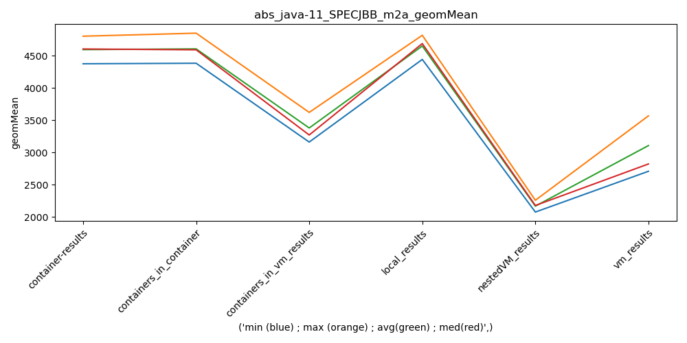
all runs of one jdk were made MEDIAN before processing
jbb2015.result.metric.max-jOPS
java-11 SPECJBB jbb2015.result.metric.max-jOPS where all runs of one jdk were made MEDIAN before processing
MIN 8676.0 container-results
MIN 8869.0 containers_in_container
MIN 6118.0 containers_in_vm_results
MIN 9008.0 local_results
MIN 4778.0 nestedVM_results
MIN 5716.0 vm_results
MAX 8949.0 container-results
MAX 9206.0 containers_in_container
MAX 6440.0 containers_in_vm_results
MAX 9206.0 local_results
MAX 5059.0 nestedVM_results
MAX 6037.0 vm_results
AVG 8830.8 container-results
AVG 9028.4 containers_in_container
AVG 6311.0 containers_in_vm_results
AVG 9136.4 local_results
AVG 4927.0 nestedVM_results
AVG 5908.6 vm_results
MED 8810.0 container-results
MED 9062.0 containers_in_container
MED 6359.0 containers_in_vm_results
MED 9139.0 local_results
MED 4905.0 nestedVM_results
MED 5957.0 vm_results
jbb2015.result.metric.critical-jOPS
java-11 SPECJBB jbb2015.result.metric.critical-jOPS where all runs of one jdk were made MEDIAN before processing
MIN 2179.0 container-results
MIN 2159.0 containers_in_container
MIN 1614.0 containers_in_vm_results
MIN 2275.0 local_results
MIN 913.0 nestedVM_results
MIN 1230.0 vm_results
MAX 2374.0 container-results
MAX 2349.0 containers_in_container
MAX 1661.0 containers_in_vm_results
MAX 2351.0 local_results
MAX 934.0 nestedVM_results
MAX 1333.0 vm_results
AVG 2286.0 container-results
AVG 2260.6 containers_in_container
AVG 1641.4 containers_in_vm_results
AVG 2325.4 local_results
AVG 925.4 nestedVM_results
AVG 1267.2 vm_results
MED 2290.0 container-results
MED 2273.0 containers_in_container
MED 1642.0 containers_in_vm_results
MED 2333.0 local_results
MED 928.0 nestedVM_results
MED 1254.0 vm_results
geomMean of all keys (benchmark meassured relativre accuracy)
{'MIN': [4347.988500444774, 4375.862315018607, 3142.3640782060884, 4526.941572408462, 2088.6153307873615, 2651.5429470404583], 'MAX': [4609.2218432182235, 4650.257412229994, 3270.6023909977193, 4652.236666378872, 2173.7308941081, 2836.7800408209305], 'AVG': [4493.017783183147, 4517.698644221414, 3218.520685035285, 4609.314977304111, 2135.2858824991094, 2736.307351157761], 'MED': [4491.647804536771, 4538.493803014388, 3231.327590944626, 4617.497915538241, 2133.504159827208, 2733.1443430598392]}
java-11 SPECJBB geomMean where all runs of one jdk were made MEDIAN before processing
MIN 4347.988500444774 container-results
MIN 4375.862315018607 containers_in_container
MIN 3142.3640782060884 containers_in_vm_results
MIN 4526.941572408462 local_results
MIN 2088.6153307873615 nestedVM_results
MIN 2651.5429470404583 vm_results
MAX 4609.2218432182235 container-results
MAX 4650.257412229994 containers_in_container
MAX 3270.6023909977193 containers_in_vm_results
MAX 4652.236666378872 local_results
MAX 2173.7308941081 nestedVM_results
MAX 2836.7800408209305 vm_results
AVG 4493.017783183147 container-results
AVG 4517.698644221414 containers_in_container
AVG 3218.520685035285 containers_in_vm_results
AVG 4609.314977304111 local_results
AVG 2135.2858824991094 nestedVM_results
AVG 2736.307351157761 vm_results
MED 4491.647804536771 container-results
MED 4538.493803014388 containers_in_container
MED 3231.327590944626 containers_in_vm_results
MED 4617.497915538241 local_results
MED 2133.504159827208 nestedVM_results
MED 2733.1443430598392 vm_results

geomMean of all metrics from geomMean of all keys
{'MIN': [4260.15481023611, 4247.953242192355, 3107.003420062608, 4354.884620934833, 2040.6986273014597, 2626.374020926803], 'MAX': [4680.084379847103, 4680.602838404851, 3332.39967422938, 4796.479350486858, 2220.4198790350197, 2895.926757572103], 'AVG': [4480.2136782936395, 4509.561978199888, 3223.210093858493, 4592.906389629037, 2138.017321806229, 2749.261184502644], 'MED': [4475.350512939755, 4537.998475807939, 3234.4133664868077, 4598.014604153564, 2139.6100062974106, 2745.0446965106385]}
java-11 SPECJBB geomMean geomMean
MIN 4260.15481023611 container-results
MIN 4247.953242192355 containers_in_container
MIN 3107.003420062608 containers_in_vm_results
MIN 4354.884620934833 local_results
MIN 2040.6986273014597 nestedVM_results
MIN 2626.374020926803 vm_results
MAX 4680.084379847103 container-results
MAX 4680.602838404851 containers_in_container
MAX 3332.39967422938 containers_in_vm_results
MAX 4796.479350486858 local_results
MAX 2220.4198790350197 nestedVM_results
MAX 2895.926757572103 vm_results
AVG 4480.2136782936395 container-results
AVG 4509.561978199888 containers_in_container
AVG 3223.210093858493 containers_in_vm_results
AVG 4592.906389629037 local_results
AVG 2138.017321806229 nestedVM_results
AVG 2749.261184502644 vm_results
MED 4475.350512939755 container-results
MED 4537.998475807939 containers_in_container
MED 3234.4133664868077 containers_in_vm_results
MED 4598.014604153564 local_results
MED 2139.6100062974106 nestedVM_results
MED 2745.0446965106385 vm_results
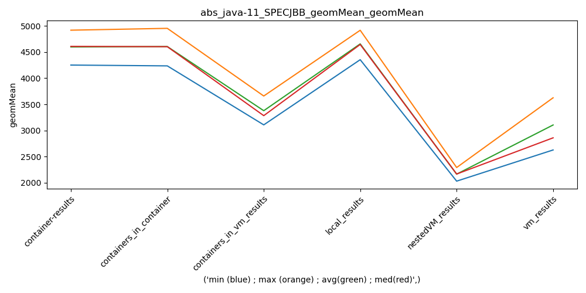
geomMean of all benchamrks from geomMean of all metrics and all keys
{'MIN': [5098.609943259304, 5030.605970945825, 3539.0602644844867, 5161.328809541615, 2462.073659855317, 3937.7672391611804], 'MAX': [5276.503405212393, 5217.381089128144, 3717.8170835029214, 5385.863149058486, 2538.15421462845, 4096.036738873814], 'AVG': [5202.798395027448, 5139.235345657467, 3634.9381012931785, 5277.99449515936, 2504.7052269519363, 4018.7963892433795], 'MED': [5204.702433812935, 5149.816414660805, 3639.118737665736, 5277.679466045077, 2507.494354846876, 4019.8287145739628]}
java-11 geomMean geomMean geomMean
MIN 5098.609943259304 container-results
MIN 5030.605970945825 containers_in_container
MIN 3539.0602644844867 containers_in_vm_results
MIN 5161.328809541615 local_results
MIN 2462.073659855317 nestedVM_results
MIN 3937.7672391611804 vm_results
MAX 5276.503405212393 container-results
MAX 5217.381089128144 containers_in_container
MAX 3717.8170835029214 containers_in_vm_results
MAX 5385.863149058486 local_results
MAX 2538.15421462845 nestedVM_results
MAX 4096.036738873814 vm_results
AVG 5202.798395027448 container-results
AVG 5139.235345657467 containers_in_container
AVG 3634.9381012931785 containers_in_vm_results
AVG 5277.99449515936 local_results
AVG 2504.7052269519363 nestedVM_results
AVG 4018.7963892433795 vm_results
MED 5204.702433812935 container-results
MED 5149.816414660805 containers_in_container
MED 3639.118737665736 containers_in_vm_results
MED 5277.679466045077 local_results
MED 2507.494354846876 nestedVM_results
MED 4019.8287145739628 vm_results
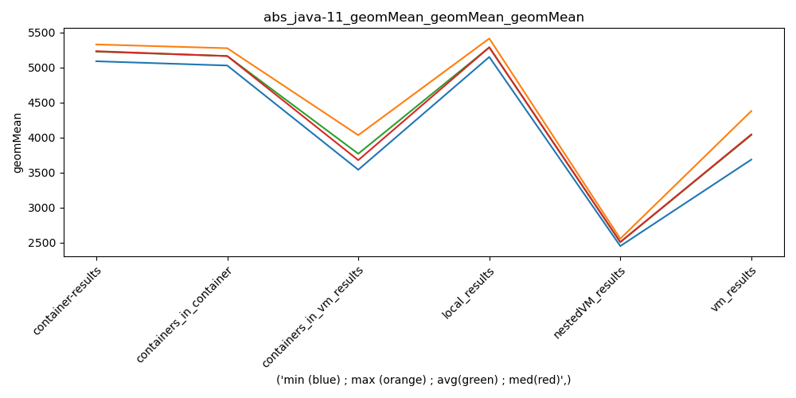
java-17
J2DBENCH
all runs of one jdk are treated as INDIVIDUAL items
j2dbench.geom
java-17 J2DBENCH j2dbench.geom where all runs of one jdk are treated as INDIVIDUAL items
MIN 139093.0 container-results
MIN 134665.0 containers_in_container
MIN 101558.0 containers_in_vm_results
MIN 145996.0 local_results
MIN 95305.0 nestedVM_results
MIN 142588.0 vm_results
MAX 139569.0 container-results
MAX 135027.0 containers_in_container
MAX 103962.0 containers_in_vm_results
MAX 147066.0 local_results
MAX 97559.0 nestedVM_results
MAX 143433.0 vm_results
AVG 139387.32 container-results
AVG 134864.24 containers_in_container
AVG 102908.0 containers_in_vm_results
AVG 146608.36 local_results
AVG 96565.96 nestedVM_results
AVG 143013.66666666666 vm_results
MED 139408.0 container-results
MED 134854.0 containers_in_container
MED 102789.0 containers_in_vm_results
MED 146637.0 local_results
MED 96682.0 nestedVM_results
MED 142993.0 vm_results

geomMean of all keys (benchmark meassured relativre accuracy)
{'MIN': [139093.0, 134665.0, 101558.0, 145996.0, 95305.0, 142588.0], 'MAX': [139569.0, 135027.0, 103962.0, 147066.0, 97559.0, 143433.0], 'AVG': [139387.32, 134864.24, 102908.0, 146608.36, 96565.96, 143013.66666666666], 'MED': [139408.0, 134854.0, 102789.0, 146637.0, 96682.0, 142993.0]}
java-17 J2DBENCH geomMean where all runs of one jdk are treated as INDIVIDUAL items
MIN 139093.0 container-results
MIN 134665.0 containers_in_container
MIN 101558.0 containers_in_vm_results
MIN 145996.0 local_results
MIN 95305.0 nestedVM_results
MIN 142588.0 vm_results
MAX 139569.0 container-results
MAX 135027.0 containers_in_container
MAX 103962.0 containers_in_vm_results
MAX 147066.0 local_results
MAX 97559.0 nestedVM_results
MAX 143433.0 vm_results
AVG 139387.32 container-results
AVG 134864.24 containers_in_container
AVG 102908.0 containers_in_vm_results
AVG 146608.36 local_results
AVG 96565.96 nestedVM_results
AVG 143013.66666666666 vm_results
MED 139408.0 container-results
MED 134854.0 containers_in_container
MED 102789.0 containers_in_vm_results
MED 146637.0 local_results
MED 96682.0 nestedVM_results
MED 142993.0 vm_results
all runs of one jdk were made AVARAGE before processing
j2dbench.geom
java-17 J2DBENCH j2dbench.geom where all runs of one jdk were made AVARAGE before processing
MIN 139277.4 container-results
MIN 134820.6 containers_in_container
MIN 102250.2 containers_in_vm_results
MIN 146502.4 local_results
MIN 96056.8 nestedVM_results
MIN 142898.4 vm_results
MAX 139478.8 container-results
MAX 134901.2 containers_in_container
MAX 103237.4 containers_in_vm_results
MAX 146701.6 local_results
MAX 96895.8 nestedVM_results
MAX 143096.4 vm_results
AVG 139387.32 container-results
AVG 134864.24000000002 containers_in_container
AVG 102908.0 containers_in_vm_results
AVG 146608.36000000002 local_results
AVG 96565.95999999999 nestedVM_results
AVG 143013.82 vm_results
MED 139419.0 container-results
MED 134879.2 containers_in_container
MED 102990.0 containers_in_vm_results
MED 146627.2 local_results
MED 96703.2 nestedVM_results
MED 143017.5 vm_results
geomMean of all keys (benchmark meassured relativre accuracy)
{'MIN': [139277.4, 134820.6, 102250.2, 146502.4, 96056.8, 142898.4], 'MAX': [139478.8, 134901.2, 103237.4, 146701.6, 96895.8, 143096.4], 'AVG': [139387.32, 134864.24000000002, 102908.0, 146608.36000000002, 96565.95999999999, 143013.82], 'MED': [139419.0, 134879.2, 102990.0, 146627.2, 96703.2, 143017.5]}
java-17 J2DBENCH geomMean where all runs of one jdk were made AVARAGE before processing
MIN 139277.4 container-results
MIN 134820.6 containers_in_container
MIN 102250.2 containers_in_vm_results
MIN 146502.4 local_results
MIN 96056.8 nestedVM_results
MIN 142898.4 vm_results
MAX 139478.8 container-results
MAX 134901.2 containers_in_container
MAX 103237.4 containers_in_vm_results
MAX 146701.6 local_results
MAX 96895.8 nestedVM_results
MAX 143096.4 vm_results
AVG 139387.32 container-results
AVG 134864.24000000002 containers_in_container
AVG 102908.0 containers_in_vm_results
AVG 146608.36000000002 local_results
AVG 96565.95999999999 nestedVM_results
AVG 143013.82 vm_results
MED 139419.0 container-results
MED 134879.2 containers_in_container
MED 102990.0 containers_in_vm_results
MED 146627.2 local_results
MED 96703.2 nestedVM_results
MED 143017.5 vm_results
all runs of one jdk were made MEDIAN before processing
j2dbench.geom
java-17 J2DBENCH j2dbench.geom where all runs of one jdk were made MEDIAN before processing
MIN 139241.0 container-results
MIN 134825.0 containers_in_container
MIN 102558.0 containers_in_vm_results
MIN 146465.0 local_results
MIN 96283.0 nestedVM_results
MIN 142863.0 vm_results
MAX 139497.0 container-results
MAX 134917.0 containers_in_container
MAX 103088.0 containers_in_vm_results
MAX 146698.0 local_results
MAX 96843.0 nestedVM_results
MAX 143219.0 vm_results
AVG 139385.2 container-results
AVG 134871.6 containers_in_container
AVG 102851.8 containers_in_vm_results
AVG 146588.8 local_results
AVG 96607.0 nestedVM_results
AVG 143023.4 vm_results
MED 139423.0 container-results
MED 134854.0 containers_in_container
MED 102839.0 containers_in_vm_results
MED 146627.0 local_results
MED 96682.0 nestedVM_results
MED 143005.0 vm_results

geomMean of all keys (benchmark meassured relativre accuracy)
{'MIN': [139241.0, 134825.0, 102558.0, 146465.0, 96283.0, 142863.0], 'MAX': [139497.0, 134917.0, 103088.0, 146698.0, 96843.0, 143219.0], 'AVG': [139385.2, 134871.6, 102851.8, 146588.8, 96607.0, 143023.4], 'MED': [139423.0, 134854.0, 102839.0, 146627.0, 96682.0, 143005.0]}
java-17 J2DBENCH geomMean where all runs of one jdk were made MEDIAN before processing
MIN 139241.0 container-results
MIN 134825.0 containers_in_container
MIN 102558.0 containers_in_vm_results
MIN 146465.0 local_results
MIN 96283.0 nestedVM_results
MIN 142863.0 vm_results
MAX 139497.0 container-results
MAX 134917.0 containers_in_container
MAX 103088.0 containers_in_vm_results
MAX 146698.0 local_results
MAX 96843.0 nestedVM_results
MAX 143219.0 vm_results
AVG 139385.2 container-results
AVG 134871.6 containers_in_container
AVG 102851.8 containers_in_vm_results
AVG 146588.8 local_results
AVG 96607.0 nestedVM_results
AVG 143023.4 vm_results
MED 139423.0 container-results
MED 134854.0 containers_in_container
MED 102839.0 containers_in_vm_results
MED 146627.0 local_results
MED 96682.0 nestedVM_results
MED 143005.0 vm_results
geomMean of all metrics from geomMean of all keys
{'MIN': [139203.77715363886, 134770.1794532292, 102121.20944304099, 146320.95178858616, 95880.68718081282, 142783.06590322076], 'MAX': [139514.92789792392, 134948.38840293227, 103428.43009897013, 146821.7652301103, 97098.72094667586, 143249.3991502031], 'AVG': [139386.61332975054, 134866.6932887057, 102889.26325542267, 146601.8397100195, 96579.63806248255, 143016.96214976185], 'MED': [139416.66652241253, 134862.3994768217, 102872.63119522818, 146630.39992570993, 96689.06615021375, 143005.166316835]}
java-17 J2DBENCH geomMean geomMean
MIN 139203.77715363886 container-results
MIN 134770.1794532292 containers_in_container
MIN 102121.20944304099 containers_in_vm_results
MIN 146320.95178858616 local_results
MIN 95880.68718081282 nestedVM_results
MIN 142783.06590322076 vm_results
MAX 139514.92789792392 container-results
MAX 134948.38840293227 containers_in_container
MAX 103428.43009897013 containers_in_vm_results
MAX 146821.7652301103 local_results
MAX 97098.72094667586 nestedVM_results
MAX 143249.3991502031 vm_results
AVG 139386.61332975054 container-results
AVG 134866.6932887057 containers_in_container
AVG 102889.26325542267 containers_in_vm_results
AVG 146601.8397100195 local_results
AVG 96579.63806248255 nestedVM_results
AVG 143016.96214976185 vm_results
MED 139416.66652241253 container-results
MED 134862.3994768217 containers_in_container
MED 102872.63119522818 containers_in_vm_results
MED 146630.39992570993 local_results
MED 96689.06615021375 nestedVM_results
MED 143005.166316835 vm_results

JMH
all runs of one jdk are treated as INDIVIDUAL items
geom
java-17 JMH geom where all runs of one jdk are treated as INDIVIDUAL items
MIN 405.0 container-results
MIN 421.0 containers_in_container
MIN 324.0 containers_in_vm_results
MIN 416.0 local_results
MIN 332.0 nestedVM_results
MIN 355.0 vm_results
MAX 426.0 container-results
MAX 425.0 containers_in_container
MAX 336.0 containers_in_vm_results
MAX 431.0 local_results
MAX 338.0 nestedVM_results
MAX 358.0 vm_results
AVG 418.64 container-results
AVG 422.76 containers_in_container
AVG 331.0 containers_in_vm_results
AVG 419.28 local_results
AVG 335.28 nestedVM_results
AVG 356.56 vm_results
MED 420.0 container-results
MED 423.0 containers_in_container
MED 331.0 containers_in_vm_results
MED 418.0 local_results
MED 335.0 nestedVM_results
MED 356.0 vm_results
geomMean of all keys (benchmark meassured relativre accuracy)
{'MIN': [405.0, 421.0, 324.0, 416.0, 332.0, 355.0], 'MAX': [426.0, 425.0, 336.0, 431.0, 338.0, 358.0], 'AVG': [418.64, 422.76, 331.0, 419.28, 335.28, 356.56], 'MED': [420.0, 423.0, 331.0, 418.0, 335.0, 356.0]}
java-17 JMH geomMean where all runs of one jdk are treated as INDIVIDUAL items
MIN 405.0 container-results
MIN 421.0 containers_in_container
MIN 324.0 containers_in_vm_results
MIN 416.0 local_results
MIN 332.0 nestedVM_results
MIN 355.0 vm_results
MAX 426.0 container-results
MAX 425.0 containers_in_container
MAX 336.0 containers_in_vm_results
MAX 431.0 local_results
MAX 338.0 nestedVM_results
MAX 358.0 vm_results
AVG 418.64 container-results
AVG 422.76 containers_in_container
AVG 331.0 containers_in_vm_results
AVG 419.28 local_results
AVG 335.28 nestedVM_results
AVG 356.56 vm_results
MED 420.0 container-results
MED 423.0 containers_in_container
MED 331.0 containers_in_vm_results
MED 418.0 local_results
MED 335.0 nestedVM_results
MED 356.0 vm_results
all runs of one jdk were made AVARAGE before processing
geom
java-17 JMH geom where all runs of one jdk were made AVARAGE before processing
MIN 415.2 container-results
MIN 422.2 containers_in_container
MIN 328.0 containers_in_vm_results
MIN 417.6 local_results
MIN 334.6 nestedVM_results
MIN 356.2 vm_results
MAX 422.0 container-results
MAX 423.0 containers_in_container
MAX 333.0 containers_in_vm_results
MAX 422.0 local_results
MAX 336.2 nestedVM_results
MAX 357.2 vm_results
AVG 418.64 container-results
AVG 422.76000000000005 containers_in_container
AVG 331.0 containers_in_vm_results
AVG 419.28000000000003 local_results
AVG 335.28000000000003 nestedVM_results
AVG 356.56 vm_results
MED 419.4 container-results
MED 422.8 containers_in_container
MED 331.6 containers_in_vm_results
MED 419.0 local_results
MED 335.2 nestedVM_results
MED 356.4 vm_results

geomMean of all keys (benchmark meassured relativre accuracy)
{'MIN': [415.2, 422.2, 328.0, 417.6, 334.6, 356.2], 'MAX': [422.0, 423.0, 333.0, 422.0, 336.2, 357.2], 'AVG': [418.64, 422.76000000000005, 331.0, 419.28000000000003, 335.28000000000003, 356.56], 'MED': [419.4, 422.8, 331.6, 419.0, 335.2, 356.4]}
java-17 JMH geomMean where all runs of one jdk were made AVARAGE before processing
MIN 415.2 container-results
MIN 422.2 containers_in_container
MIN 328.0 containers_in_vm_results
MIN 417.6 local_results
MIN 334.6 nestedVM_results
MIN 356.2 vm_results
MAX 422.0 container-results
MAX 423.0 containers_in_container
MAX 333.0 containers_in_vm_results
MAX 422.0 local_results
MAX 336.2 nestedVM_results
MAX 357.2 vm_results
AVG 418.64 container-results
AVG 422.76000000000005 containers_in_container
AVG 331.0 containers_in_vm_results
AVG 419.28000000000003 local_results
AVG 335.28000000000003 nestedVM_results
AVG 356.56 vm_results
MED 419.4 container-results
MED 422.8 containers_in_container
MED 331.6 containers_in_vm_results
MED 419.0 local_results
MED 335.2 nestedVM_results
MED 356.4 vm_results
all runs of one jdk were made MEDIAN before processing
geom
java-17 JMH geom where all runs of one jdk were made MEDIAN before processing
MIN 417.0 container-results
MIN 422.0 containers_in_container
MIN 327.0 containers_in_vm_results
MIN 417.0 local_results
MIN 335.0 nestedVM_results
MIN 356.0 vm_results
MAX 422.0 container-results
MAX 423.0 containers_in_container
MAX 333.0 containers_in_vm_results
MAX 420.0 local_results
MAX 336.0 nestedVM_results
MAX 358.0 vm_results
AVG 420.4 container-results
AVG 422.8 containers_in_container
AVG 330.8 containers_in_vm_results
AVG 418.4 local_results
AVG 335.6 nestedVM_results
AVG 356.4 vm_results
MED 422.0 container-results
MED 423.0 containers_in_container
MED 331.0 containers_in_vm_results
MED 418.0 local_results
MED 336.0 nestedVM_results
MED 356.0 vm_results
geomMean of all keys (benchmark meassured relativre accuracy)
{'MIN': [417.0, 422.0, 327.0, 417.0, 335.0, 356.0], 'MAX': [422.0, 423.0, 333.0, 420.0, 336.0, 358.0], 'AVG': [420.4, 422.8, 330.8, 418.4, 335.6, 356.4], 'MED': [422.0, 423.0, 331.0, 418.0, 336.0, 356.0]}
java-17 JMH geomMean where all runs of one jdk were made MEDIAN before processing
MIN 417.0 container-results
MIN 422.0 containers_in_container
MIN 327.0 containers_in_vm_results
MIN 417.0 local_results
MIN 335.0 nestedVM_results
MIN 356.0 vm_results
MAX 422.0 container-results
MAX 423.0 containers_in_container
MAX 333.0 containers_in_vm_results
MAX 420.0 local_results
MAX 336.0 nestedVM_results
MAX 358.0 vm_results
AVG 420.4 container-results
AVG 422.8 containers_in_container
AVG 330.8 containers_in_vm_results
AVG 418.4 local_results
AVG 335.6 nestedVM_results
AVG 356.4 vm_results
MED 422.0 container-results
MED 423.0 containers_in_container
MED 331.0 containers_in_vm_results
MED 418.0 local_results
MED 336.0 nestedVM_results
MED 356.0 vm_results
geomMean of all metrics from geomMean of all keys
{'MIN': [412.36595975465457, 421.73300646798003, 326.32889887271926, 416.86614408755827, 333.8640129114271, 355.73294578617964], 'MAX': [423.3291426345782, 423.6656187218166, 333.99701193736365, 424.3064860114359, 336.73213370312646, 357.733134451979], 'AVG': [419.225846448435, 422.77333291283827, 330.9333199014995, 418.9864612075113, 335.38663274949675, 356.50665868721353], 'MED': [420.46519883367944, 422.93332282361155, 331.19987927562937, 418.3330678700063, 335.39972186730324, 356.13328342690386]}
java-17 JMH geomMean geomMean
MIN 412.36595975465457 container-results
MIN 421.73300646798003 containers_in_container
MIN 326.32889887271926 containers_in_vm_results
MIN 416.86614408755827 local_results
MIN 333.8640129114271 nestedVM_results
MIN 355.73294578617964 vm_results
MAX 423.3291426345782 container-results
MAX 423.6656187218166 containers_in_container
MAX 333.99701193736365 containers_in_vm_results
MAX 424.3064860114359 local_results
MAX 336.73213370312646 nestedVM_results
MAX 357.733134451979 vm_results
AVG 419.225846448435 container-results
AVG 422.77333291283827 containers_in_container
AVG 330.9333199014995 containers_in_vm_results
AVG 418.9864612075113 local_results
AVG 335.38663274949675 nestedVM_results
AVG 356.50665868721353 vm_results
MED 420.46519883367944 container-results
MED 422.93332282361155 containers_in_container
MED 331.19987927562937 containers_in_vm_results
MED 418.3330678700063 local_results
MED 335.39972186730324 nestedVM_results
MED 356.13328342690386 vm_results

RADARGUNs1
all runs of one jdk are treated as INDIVIDUAL items
BasicOperations.Put.Throughput=
java-17 RADARGUNs1 BasicOperations.Put.Throughput= where all runs of one jdk are treated as INDIVIDUAL items
MIN 691612.0 container-results
MIN 700055.0 containers_in_container
MIN 481848.0 containers_in_vm_results
MIN 700570.0 local_results
MIN 167528.0 nestedVM_results
MIN 533757.0 vm_results
MAX 845078.0 container-results
MAX 846769.0 containers_in_container
MAX 610754.0 containers_in_vm_results
MAX 838339.0 local_results
MAX 179566.0 nestedVM_results
MAX 634818.0 vm_results
AVG 781544.76 container-results
AVG 809971.6 containers_in_container
AVG 569523.48 containers_in_vm_results
AVG 782088.08 local_results
AVG 175746.8 nestedVM_results
AVG 593177.24 vm_results
MED 791433.0 container-results
MED 824573.0 containers_in_container
MED 577272.0 containers_in_vm_results
MED 809763.0 local_results
MED 177026.0 nestedVM_results
MED 608789.0 vm_results
BasicOperations.Get.Throughput=
java-17 RADARGUNs1 BasicOperations.Get.Throughput= where all runs of one jdk are treated as INDIVIDUAL items
MIN 2766577.0 container-results
MIN 2800306.0 containers_in_container
MIN 1927367.0 containers_in_vm_results
MIN 2802128.0 local_results
MIN 670113.0 nestedVM_results
MIN 2135148.0 vm_results
MAX 3380336.0 container-results
MAX 3386946.0 containers_in_container
MAX 2442800.0 containers_in_vm_results
MAX 3353186.0 local_results
MAX 718321.0 nestedVM_results
MAX 2539158.0 vm_results
AVG 3126210.08 container-results
AVG 3239883.76 containers_in_container
AVG 2278124.08 containers_in_vm_results
AVG 3128329.36 local_results
AVG 702989.2 nestedVM_results
AVG 2372730.2 vm_results
MED 3165765.0 container-results
MED 3298351.0 containers_in_container
MED 2309115.0 containers_in_vm_results
MED 3239356.0 local_results
MED 708011.0 nestedVM_results
MED 2435303.0 vm_results

geomMean of all keys (benchmark meassured relativre accuracy)
{'MIN': [1383256.2496240528, 1400131.4998349263, 963689.7499797328, 1401101.9994846913, 335056.24999990675, 1067543.9995784718], 'MAX': [1690161.99998935, 1693505.4996881469, 1221453.9988063406, 1676635.4994613468, 359146.2497172983, 1269607.4996801177], 'AVG': [1563097.2799807377, 1619942.5399998655, 1139054.4999750445, 1564170.419989468, 351494.0999996443, 1186359.7899881166], 'MED': [1582874.2499785004, 1649160.7499340384, 1154550.7499802683, 1619601.9982168458, 354028.74923655565, 1217614.7494454065]}
java-17 RADARGUNs1 geomMean where all runs of one jdk are treated as INDIVIDUAL items
MIN 1383256.2496240528 container-results
MIN 1400131.4998349263 containers_in_container
MIN 963689.7499797328 containers_in_vm_results
MIN 1401101.9994846913 local_results
MIN 335056.24999990675 nestedVM_results
MIN 1067543.9995784718 vm_results
MAX 1690161.99998935 container-results
MAX 1693505.4996881469 containers_in_container
MAX 1221453.9988063406 containers_in_vm_results
MAX 1676635.4994613468 local_results
MAX 359146.2497172983 nestedVM_results
MAX 1269607.4996801177 vm_results
AVG 1563097.2799807377 container-results
AVG 1619942.5399998655 containers_in_container
AVG 1139054.4999750445 containers_in_vm_results
AVG 1564170.419989468 local_results
AVG 351494.0999996443 nestedVM_results
AVG 1186359.7899881166 vm_results
MED 1582874.2499785004 container-results
MED 1649160.7499340384 containers_in_container
MED 1154550.7499802683 containers_in_vm_results
MED 1619601.9982168458 local_results
MED 354028.74923655565 nestedVM_results
MED 1217614.7494454065 vm_results

all runs of one jdk were made AVARAGE before processing
BasicOperations.Put.Throughput=
java-17 RADARGUNs1 BasicOperations.Put.Throughput= where all runs of one jdk were made AVARAGE before processing
MIN 746001.4 container-results
MIN 784344.2 containers_in_container
MIN 553518.4 containers_in_vm_results
MIN 753443.0 local_results
MIN 174311.4 nestedVM_results
MIN 571380.6 vm_results
MAX 816881.2 container-results
MAX 825771.6 containers_in_container
MAX 587418.6 containers_in_vm_results
MAX 799043.4 local_results
MAX 177064.6 nestedVM_results
MAX 611807.8 vm_results
AVG 781544.76 container-results
AVG 809971.6 containers_in_container
AVG 569523.48 containers_in_vm_results
AVG 782088.08 local_results
AVG 175746.8 nestedVM_results
AVG 593177.24 vm_results
MED 795796.0 container-results
MED 824616.0 containers_in_container
MED 563165.0 containers_in_vm_results
MED 790363.4 local_results
MED 175350.0 nestedVM_results
MED 589679.0 vm_results
BasicOperations.Get.Throughput=
java-17 RADARGUNs1 BasicOperations.Get.Throughput= where all runs of one jdk were made AVARAGE before processing
MIN 2984045.2 container-results
MIN 3137458.2 containers_in_container
MIN 2214104.0 containers_in_vm_results
MIN 3013736.2 local_results
MIN 697231.6 nestedVM_results
MIN 2285503.4 vm_results
MAX 3267600.0 container-results
MAX 3303063.8 containers_in_container
MAX 2349744.0 containers_in_vm_results
MAX 3196242.2 local_results
MAX 708263.2 nestedVM_results
MAX 2447311.6 vm_results
AVG 3126210.08 container-results
AVG 3239883.7600000002 containers_in_container
AVG 2278124.08 containers_in_vm_results
AVG 3128329.3600000003 local_results
AVG 702989.2 nestedVM_results
AVG 2372730.2 vm_results
MED 3183176.8 container-results
MED 3298506.6 containers_in_container
MED 2252688.2 containers_in_vm_results
MED 3161377.8 local_results
MED 701349.8 nestedVM_results
MED 2358732.0 vm_results
geomMean of all keys (benchmark meassured relativre accuracy)
{'MIN': [1492012.6999671552, 1568708.7498680053, 1107044.3999739126, 1506877.049973421, 348619.2999824307, 1142756.449990128], 'MAX': [1633781.1998918338, 1651537.5499903355, 1174854.59987115, 1598103.9499079776, 354130.39999796683, 1223635.6998349142], 'AVG': [1563097.2799807377, 1619942.5399998657, 1139054.4999750445, 1564170.419989468, 351494.0999996443, 1186359.7899881166], 'MED': [1591590.199998982, 1649242.6499656138, 1126337.0499779363, 1580707.8498864109, 350687.44977543753, 1179361.9999932167]}
java-17 RADARGUNs1 geomMean where all runs of one jdk were made AVARAGE before processing
MIN 1492012.6999671552 container-results
MIN 1568708.7498680053 containers_in_container
MIN 1107044.3999739126 containers_in_vm_results
MIN 1506877.049973421 local_results
MIN 348619.2999824307 nestedVM_results
MIN 1142756.449990128 vm_results
MAX 1633781.1998918338 container-results
MAX 1651537.5499903355 containers_in_container
MAX 1174854.59987115 containers_in_vm_results
MAX 1598103.9499079776 local_results
MAX 354130.39999796683 nestedVM_results
MAX 1223635.6998349142 vm_results
AVG 1563097.2799807377 container-results
AVG 1619942.5399998657 containers_in_container
AVG 1139054.4999750445 containers_in_vm_results
AVG 1564170.419989468 local_results
AVG 351494.0999996443 nestedVM_results
AVG 1186359.7899881166 vm_results
MED 1591590.199998982 container-results
MED 1649242.6499656138 containers_in_container
MED 1126337.0499779363 containers_in_vm_results
MED 1580707.8498864109 local_results
MED 350687.44977543753 nestedVM_results
MED 1179361.9999932167 vm_results
all runs of one jdk were made MEDIAN before processing
BasicOperations.Put.Throughput=
java-17 RADARGUNs1 BasicOperations.Put.Throughput= where all runs of one jdk were made MEDIAN before processing
MIN 733956.0 container-results
MIN 817566.0 containers_in_container
MIN 568478.0 containers_in_vm_results
MIN 721604.0 local_results
MIN 176458.0 nestedVM_results
MIN 548864.0 vm_results
MAX 820007.0 container-results
MAX 828964.0 containers_in_container
MAX 585241.0 containers_in_vm_results
MAX 822151.0 local_results
MAX 177619.0 nestedVM_results
MAX 621959.0 vm_results
AVG 783716.2 container-results
AVG 824132.6 containers_in_container
AVG 577597.2 containers_in_vm_results
AVG 791270.2 local_results
AVG 177110.4 nestedVM_results
AVG 598336.8 vm_results
MED 797590.0 container-results
MED 824573.0 containers_in_container
MED 574928.0 containers_in_vm_results
MED 803669.0 local_results
MED 177026.0 nestedVM_results
MED 611702.0 vm_results
BasicOperations.Get.Throughput=
java-17 RADARGUNs1 BasicOperations.Get.Throughput= where all runs of one jdk were made MEDIAN before processing
MIN 2935985.0 container-results
MIN 3270228.0 containers_in_container
MIN 2273994.0 containers_in_vm_results
MIN 2886224.0 local_results
MIN 705840.0 nestedVM_results
MIN 2195392.0 vm_results
MAX 3280509.0 container-results
MAX 3315766.0 containers_in_container
MAX 2340981.0 containers_in_vm_results
MAX 3288899.0 local_results
MAX 710453.0 nestedVM_results
MAX 2487703.0 vm_results
AVG 3134997.8 container-results
AVG 3296534.0 containers_in_container
AVG 2310380.6 containers_in_vm_results
AVG 3165066.6 local_results
AVG 708457.4 nestedVM_results
AVG 2393433.4 vm_results
MED 3190373.0 container-results
MED 3298351.0 containers_in_container
MED 2299688.0 containers_in_vm_results
MED 3214399.0 local_results
MED 708011.0 nestedVM_results
MED 2447005.0 vm_results
geomMean of all keys (benchmark meassured relativre accuracy)
{'MIN': [1467952.2494481897, 1635122.9999752312, 1136976.4998151897, 1443159.9992017518, 352917.99999433296, 1097711.9998833938], 'MAX': [1640134.2455918053, 1657905.4998473225, 1170486.2499922842, 1644375.7483461618, 355232.24995346356, 1243884.7495556008], 'AVG': [1567465.6496473406, 1648266.0999997542, 1155192.349998181, 1582536.8499960182, 354224.74997797655, 1196695.1498059647], 'MED': [1595183.2499966891, 1649160.7499340384, 1149849.9999843459, 1607268.7485081642, 354028.74923655565, 1223453.2490087228]}
java-17 RADARGUNs1 geomMean where all runs of one jdk were made MEDIAN before processing
MIN 1467952.2494481897 container-results
MIN 1635122.9999752312 containers_in_container
MIN 1136976.4998151897 containers_in_vm_results
MIN 1443159.9992017518 local_results
MIN 352917.99999433296 nestedVM_results
MIN 1097711.9998833938 vm_results
MAX 1640134.2455918053 container-results
MAX 1657905.4998473225 containers_in_container
MAX 1170486.2499922842 containers_in_vm_results
MAX 1644375.7483461618 local_results
MAX 355232.24995346356 nestedVM_results
MAX 1243884.7495556008 vm_results
AVG 1567465.6496473406 container-results
AVG 1648266.0999997542 containers_in_container
AVG 1155192.349998181 containers_in_vm_results
AVG 1582536.8499960182 local_results
AVG 354224.74997797655 nestedVM_results
AVG 1196695.1498059647 vm_results
MED 1595183.2499966891 container-results
MED 1649160.7499340384 containers_in_container
MED 1149849.9999843459 containers_in_vm_results
MED 1607268.7485081642 local_results
MED 354028.74923655565 nestedVM_results
MED 1223453.2490087228 vm_results
geomMean of all metrics from geomMean of all keys
{'MIN': [1446979.4497253825, 1531394.8805805899, 1066476.415745862, 1449730.7521457844, 345446.65082151303, 1102239.4709487262], 'MAX': [1654501.663112605, 1667547.749813445, 1188709.8219931943, 1639387.3580398327, 356163.1448786335, 1245567.459801393], 'AVG': [1564552.0488349102, 1629329.2308152649, 1144408.5772716354, 1570268.7564314243, 352401.9697148615, 1189794.9536401783], 'MED': [1589874.158282026, 1649188.0494926537, 1143512.3581434577, 1602443.7913819726, 352911.46037688025, 1206650.4237058156]}
java-17 RADARGUNs1 geomMean geomMean
MIN 1446979.4497253825 container-results
MIN 1531394.8805805899 containers_in_container
MIN 1066476.415745862 containers_in_vm_results
MIN 1449730.7521457844 local_results
MIN 345446.65082151303 nestedVM_results
MIN 1102239.4709487262 vm_results
MAX 1654501.663112605 container-results
MAX 1667547.749813445 containers_in_container
MAX 1188709.8219931943 containers_in_vm_results
MAX 1639387.3580398327 local_results
MAX 356163.1448786335 nestedVM_results
MAX 1245567.459801393 vm_results
AVG 1564552.0488349102 container-results
AVG 1629329.2308152649 containers_in_container
AVG 1144408.5772716354 containers_in_vm_results
AVG 1570268.7564314243 local_results
AVG 352401.9697148615 nestedVM_results
AVG 1189794.9536401783 vm_results
MED 1589874.158282026 container-results
MED 1649188.0494926537 containers_in_container
MED 1143512.3581434577 containers_in_vm_results
MED 1602443.7913819726 local_results
MED 352911.46037688025 nestedVM_results
MED 1206650.4237058156 vm_results
RADARGUNs3
all runs of one jdk are treated as INDIVIDUAL items
BasicOperations.Put.Throughput=
java-17 RADARGUNs3 BasicOperations.Put.Throughput= where all runs of one jdk are treated as INDIVIDUAL items
MIN 21927.0 container-results
MIN 20898.0 containers_in_container
MIN 9088.0 containers_in_vm_results
MIN 21326.0 local_results
MIN 6074.0 nestedVM_results
MIN 11791.0 vm_results
MAX 22261.0 container-results
MAX 21275.0 containers_in_container
MAX 9721.0 containers_in_vm_results
MAX 21908.0 local_results
MAX 6728.0 nestedVM_results
MAX 13360.0 vm_results
AVG 22149.04 container-results
AVG 21068.84 containers_in_container
AVG 9412.95652173913 containers_in_vm_results
AVG 21630.6 local_results
AVG 6370.68 nestedVM_results
AVG 12685.6 vm_results
MED 22148.0 container-results
MED 21076.0 containers_in_container
MED 9418.0 containers_in_vm_results
MED 21627.0 local_results
MED 6346.0 nestedVM_results
MED 12700.0 vm_results
BasicOperations.Get.Throughput=
java-17 RADARGUNs3 BasicOperations.Get.Throughput= where all runs of one jdk are treated as INDIVIDUAL items
MIN 87739.0 container-results
MIN 83610.0 containers_in_container
MIN 36360.0 containers_in_vm_results
MIN 85316.0 local_results
MIN 24291.0 nestedVM_results
MIN 47183.0 vm_results
MAX 89075.0 container-results
MAX 85090.0 containers_in_container
MAX 38916.0 containers_in_vm_results
MAX 87637.0 local_results
MAX 26898.0 nestedVM_results
MAX 53433.0 vm_results
AVG 88600.68 container-results
AVG 84277.2 containers_in_container
AVG 37655.565217391304 containers_in_vm_results
AVG 86522.2 local_results
AVG 25483.6 nestedVM_results
AVG 50744.72 vm_results
MED 88572.0 container-results
MED 84291.0 containers_in_container
MED 37667.0 containers_in_vm_results
MED 86481.0 local_results
MED 25373.0 nestedVM_results
MED 50783.0 vm_results
geomMean of all keys (benchmark meassured relativre accuracy)
{'MIN': [43861.74931532029, 41800.499757778016, 18177.999889976894, 42654.999894502405, 12146.749935682385, 23586.749521712398], 'MAX': [44529.749325591314, 42547.49992655268, 19449.998354755713, 43817.249982170266, 13452.499544694287, 26718.249942688984], 'AVG': [44299.209985587775, 42138.13999748921, 18826.847802880242, 43261.1499999711, 12741.579998100706, 25371.77999337059], 'MED': [44290.999717775616, 42148.74987469972, 18834.74995852082, 43247.2494732324, 12689.249702011542, 25395.74964437947]}
java-17 RADARGUNs3 geomMean where all runs of one jdk are treated as INDIVIDUAL items
MIN 43861.74931532029 container-results
MIN 41800.499757778016 containers_in_container
MIN 18177.999889976894 containers_in_vm_results
MIN 42654.999894502405 local_results
MIN 12146.749935682385 nestedVM_results
MIN 23586.749521712398 vm_results
MAX 44529.749325591314 container-results
MAX 42547.49992655268 containers_in_container
MAX 19449.998354755713 containers_in_vm_results
MAX 43817.249982170266 local_results
MAX 13452.499544694287 nestedVM_results
MAX 26718.249942688984 vm_results
AVG 44299.209985587775 container-results
AVG 42138.13999748921 containers_in_container
AVG 18826.847802880242 containers_in_vm_results
AVG 43261.1499999711 local_results
AVG 12741.579998100706 nestedVM_results
AVG 25371.77999337059 vm_results
MED 44290.999717775616 container-results
MED 42148.74987469972 containers_in_container
MED 18834.74995852082 containers_in_vm_results
MED 43247.2494732324 local_results
MED 12689.249702011542 nestedVM_results
MED 25395.74964437947 vm_results
all runs of one jdk were made AVARAGE before processing
BasicOperations.Put.Throughput=
java-17 RADARGUNs3 BasicOperations.Put.Throughput= where all runs of one jdk were made AVARAGE before processing
MIN 22095.6 container-results
MIN 21041.6 containers_in_container
MIN 9281.6 containers_in_vm_results
MIN 21538.4 local_results
MIN 6287.6 nestedVM_results
MIN 12393.4 vm_results
MAX 22203.8 container-results
MAX 21094.0 containers_in_container
MAX 9568.333333333334 containers_in_vm_results
MAX 21812.4 local_results
MAX 6474.4 nestedVM_results
MAX 12977.6 vm_results
AVG 22149.04 container-results
AVG 21068.84 containers_in_container
AVG 9425.386666666667 containers_in_vm_results
AVG 21630.6 local_results
AVG 6370.68 nestedVM_results
AVG 12685.6 vm_results
MED 22147.0 container-results
MED 21070.2 containers_in_container
MED 9433.0 containers_in_vm_results
MED 21589.4 local_results
MED 6392.0 nestedVM_results
MED 12763.6 vm_results

BasicOperations.Get.Throughput=
java-17 RADARGUNs3 BasicOperations.Get.Throughput= where all runs of one jdk were made AVARAGE before processing
MIN 88372.6 container-results
MIN 84178.2 containers_in_container
MIN 37131.6 containers_in_vm_results
MIN 86153.2 local_results
MIN 25148.2 nestedVM_results
MIN 49573.0 vm_results
MAX 88817.4 container-results
MAX 84392.2 containers_in_container
MAX 38282.666666666664 containers_in_vm_results
MAX 87261.0 local_results
MAX 25901.6 nestedVM_results
MAX 51910.6 vm_results
AVG 88600.68000000001 container-results
AVG 84277.2 containers_in_container
AVG 37705.73333333333 containers_in_vm_results
AVG 86522.2 local_results
AVG 25483.6 nestedVM_results
AVG 50744.72 vm_results
MED 88586.6 container-results
MED 84274.8 containers_in_container
MED 37738.8 containers_in_vm_results
MED 86348.4 local_results
MED 25570.0 nestedVM_results
MED 51058.0 vm_results
geomMean of all keys (benchmark meassured relativre accuracy)
{'MIN': [44188.749932081126, 42086.14989661088, 18564.499954483017, 43076.69999988393, 12574.649987971834, 24786.649999546124], 'MAX': [44408.14999659409, 42192.04980562096, 19138.999857765702, 43627.6499069111, 12949.799961389364, 25955.24999995184], 'AVG': [44299.20998558778, 42138.13999748921, 18851.819970944154, 43261.1499999711, 12741.579998100706, 25371.77999337059], 'MED': [44293.649998617184, 42138.89997330258, 18867.69992341409, 43176.49993873983, 12784.499990222535, 25528.09998413513]}
java-17 RADARGUNs3 geomMean where all runs of one jdk were made AVARAGE before processing
MIN 44188.749932081126 container-results
MIN 42086.14989661088 containers_in_container
MIN 18564.499954483017 containers_in_vm_results
MIN 43076.69999988393 local_results
MIN 12574.649987971834 nestedVM_results
MIN 24786.649999546124 vm_results
MAX 44408.14999659409 container-results
MAX 42192.04980562096 containers_in_container
MAX 19138.999857765702 containers_in_vm_results
MAX 43627.6499069111 local_results
MAX 12949.799961389364 nestedVM_results
MAX 25955.24999995184 vm_results
AVG 44299.20998558778 container-results
AVG 42138.13999748921 containers_in_container
AVG 18851.819970944154 containers_in_vm_results
AVG 43261.1499999711 local_results
AVG 12741.579998100706 nestedVM_results
AVG 25371.77999337059 vm_results
MED 44293.649998617184 container-results
MED 42138.89997330258 containers_in_container
MED 18867.69992341409 containers_in_vm_results
MED 43176.49993873983 local_results
MED 12784.499990222535 nestedVM_results
MED 25528.09998413513 vm_results
all runs of one jdk were made MEDIAN before processing
BasicOperations.Put.Throughput=
java-17 RADARGUNs3 BasicOperations.Put.Throughput= where all runs of one jdk were made MEDIAN before processing
MIN 22107.0 container-results
MIN 21035.0 containers_in_container
MIN 9310.0 containers_in_vm_results
MIN 21502.0 local_results
MIN 6303.0 nestedVM_results
MIN 12383.0 vm_results
MAX 22212.0 container-results
MAX 21120.0 containers_in_container
MAX 9549.0 containers_in_vm_results
MAX 21815.0 local_results
MAX 6427.0 nestedVM_results
MAX 13086.0 vm_results
AVG 22149.4 container-results
AVG 21074.8 containers_in_container
AVG 9438.8 containers_in_vm_results
AVG 21625.4 local_results
AVG 6357.4 nestedVM_results
AVG 12750.8 vm_results
MED 22131.0 container-results
MED 21076.0 containers_in_container
MED 9470.0 containers_in_vm_results
MED 21617.0 local_results
MED 6319.0 nestedVM_results
MED 12838.0 vm_results
BasicOperations.Get.Throughput=
java-17 RADARGUNs3 BasicOperations.Get.Throughput= where all runs of one jdk were made MEDIAN before processing
MIN 88380.0 container-results
MIN 84133.0 containers_in_container
MIN 37238.0 containers_in_vm_results
MIN 86045.0 local_results
MIN 25208.0 nestedVM_results
MIN 49540.0 vm_results
MAX 88825.0 container-results
MAX 84515.0 containers_in_container
MAX 38172.0 containers_in_vm_results
MAX 87274.0 local_results
MAX 25720.0 nestedVM_results
MAX 52328.0 vm_results
AVG 88597.6 container-results
AVG 84303.2 containers_in_container
AVG 37752.8 containers_in_vm_results
AVG 86515.4 local_results
AVG 25428.6 nestedVM_results
AVG 51017.2 vm_results
MED 88568.0 container-results
MED 84320.0 containers_in_container
MED 37887.0 containers_in_vm_results
MED 86473.0 local_results
MED 25266.0 nestedVM_results
MED 51400.0 vm_results
geomMean of all keys (benchmark meassured relativre accuracy)
{'MIN': [44201.9983711144, 42068.249963600814, 18619.49999328661, 43013.24900539368, 12604.999960333202, 24767.999919250648], 'MAX': [44418.24962782752, 42248.749093908096, 19091.99905719671, 43633.4998596262, 12856.999649996107, 26167.99969428309], 'AVG': [44298.8, 42150.59998813777, 18876.999990464585, 43254.24986241236, 12714.549997542186, 25505.099759851946], 'MED': [44272.99863347862, 42155.99981022868, 18941.749919160055, 43235.249981930254, 12635.499752680937, 25687.997197134697]}
java-17 RADARGUNs3 geomMean where all runs of one jdk were made MEDIAN before processing
MIN 44201.9983711144 container-results
MIN 42068.249963600814 containers_in_container
MIN 18619.49999328661 containers_in_vm_results
MIN 43013.24900539368 local_results
MIN 12604.999960333202 nestedVM_results
MIN 24767.999919250648 vm_results
MAX 44418.24962782752 container-results
MAX 42248.749093908096 containers_in_container
MAX 19091.99905719671 containers_in_vm_results
MAX 43633.4998596262 local_results
MAX 12856.999649996107 nestedVM_results
MAX 26167.99969428309 vm_results
AVG 44298.8 container-results
AVG 42150.59998813777 containers_in_container
AVG 18876.999990464585 containers_in_vm_results
AVG 43254.24986241236 local_results
AVG 12714.549997542186 nestedVM_results
AVG 25505.099759851946 vm_results
MED 44272.99863347862 container-results
MED 42155.99981022868 containers_in_container
MED 18941.749919160055 containers_in_vm_results
MED 43235.249981930254 local_results
MED 12635.499752680937 nestedVM_results
MED 25687.997197134697 vm_results
geomMean of all metrics from geomMean of all keys
{'MIN': [44083.88453118452, 41984.76298832758, 18452.94931372157, 42914.58064663824, 12440.360003041798, 24373.933524995715], 'MAX': [44452.015524542185, 42329.14620889917, 19226.345282392296, 43692.71131705295, 13083.840042170099, 26278.541056866175], 'AVG': [44299.07332330356, 42142.29291840115, 18851.878136299267, 43258.84983182184, 12732.563619120516, 25416.142303256405], 'MED': [44285.88183288562, 42147.88263681145, 18881.346954200213, 43219.655405329715, 12702.933896726085, 25537.002841171685]}
java-17 RADARGUNs3 geomMean geomMean
MIN 44083.88453118452 container-results
MIN 41984.76298832758 containers_in_container
MIN 18452.94931372157 containers_in_vm_results
MIN 42914.58064663824 local_results
MIN 12440.360003041798 nestedVM_results
MIN 24373.933524995715 vm_results
MAX 44452.015524542185 container-results
MAX 42329.14620889917 containers_in_container
MAX 19226.345282392296 containers_in_vm_results
MAX 43692.71131705295 local_results
MAX 13083.840042170099 nestedVM_results
MAX 26278.541056866175 vm_results
AVG 44299.07332330356 container-results
AVG 42142.29291840115 containers_in_container
AVG 18851.878136299267 containers_in_vm_results
AVG 43258.84983182184 local_results
AVG 12732.563619120516 nestedVM_results
AVG 25416.142303256405 vm_results
MED 44285.88183288562 container-results
MED 42147.88263681145 containers_in_container
MED 18881.346954200213 containers_in_vm_results
MED 43219.655405329715 local_results
MED 12702.933896726085 nestedVM_results
MED 25537.002841171685 vm_results
SPECJBB
all runs of one jdk are treated as INDIVIDUAL items
jbb2015.result.metric.max-jOPS
java-17 SPECJBB jbb2015.result.metric.max-jOPS where all runs of one jdk are treated as INDIVIDUAL items
MIN 9427.0 container-results
MIN 9585.0 containers_in_container
MIN 6520.0 containers_in_vm_results
MIN 9700.0 local_results
MIN 5111.0 nestedVM_results
MIN 6681.0 vm_results
MAX 10047.0 container-results
MAX 10162.0 containers_in_container
MAX 6844.0 containers_in_vm_results
MAX 10162.0 local_results
MAX 5851.0 nestedVM_results
MAX 6923.0 vm_results
AVG 9762.36 container-results
AVG 9819.88 containers_in_container
AVG 6660.56 containers_in_vm_results
AVG 9918.96 local_results
AVG 5518.84 nestedVM_results
AVG 6835.8 vm_results
MED 9816.0 container-results
MED 9816.0 containers_in_container
MED 6681.0 containers_in_vm_results
MED 9931.0 local_results
MED 5582.0 nestedVM_results
MED 6842.0 vm_results
jbb2015.result.metric.critical-jOPS
java-17 SPECJBB jbb2015.result.metric.critical-jOPS where all runs of one jdk are treated as INDIVIDUAL items
MIN 3363.0 container-results
MIN 3366.0 containers_in_container
MIN 2077.0 containers_in_vm_results
MIN 3399.0 local_results
MIN 1256.0 nestedVM_results
MIN 1834.0 vm_results
MAX 3696.0 container-results
MAX 3659.0 containers_in_container
MAX 2423.0 containers_in_vm_results
MAX 3719.0 local_results
MAX 1456.0 nestedVM_results
MAX 2044.0 vm_results
AVG 3498.56 container-results
AVG 3499.4 containers_in_container
AVG 2330.6 containers_in_vm_results
AVG 3570.2 local_results
AVG 1347.92 nestedVM_results
AVG 1956.16 vm_results
MED 3495.0 container-results
MED 3499.0 containers_in_container
MED 2347.0 containers_in_vm_results
MED 3570.0 local_results
MED 1339.0 nestedVM_results
MED 1957.0 vm_results

geomMean of all keys (benchmark meassured relativre accuracy)
{'MIN': [5630.541803414659, 5680.062499656144, 3679.9510866314513, 5741.977011448234, 2533.656646035528, 3500.4219745624955], 'MAX': [6093.743676919797, 6097.766640336444, 4072.2244535388763, 6147.55870244441, 2918.7421948503775, 3761.7299211931736], 'AVG': [5844.159665991339, 5862.054935941832, 3939.9366918771675, 5950.854643830582, 2727.444740558459, 3656.763395135102], 'MED': [5857.210940370852, 5860.561747819061, 3959.8367390588214, 5954.298447340375, 2733.916238658383, 3659.206744637422]}
java-17 SPECJBB geomMean where all runs of one jdk are treated as INDIVIDUAL items
MIN 5630.541803414659 container-results
MIN 5680.062499656144 containers_in_container
MIN 3679.9510866314513 containers_in_vm_results
MIN 5741.977011448234 local_results
MIN 2533.656646035528 nestedVM_results
MIN 3500.4219745624955 vm_results
MAX 6093.743676919797 container-results
MAX 6097.766640336444 containers_in_container
MAX 4072.2244535388763 containers_in_vm_results
MAX 6147.55870244441 local_results
MAX 2918.7421948503775 nestedVM_results
MAX 3761.7299211931736 vm_results
AVG 5844.159665991339 container-results
AVG 5862.054935941832 containers_in_container
AVG 3939.9366918771675 containers_in_vm_results
AVG 5950.854643830582 local_results
AVG 2727.444740558459 nestedVM_results
AVG 3656.763395135102 vm_results
MED 5857.210940370852 container-results
MED 5860.561747819061 containers_in_container
MED 3959.8367390588214 containers_in_vm_results
MED 5954.298447340375 local_results
MED 2733.916238658383 nestedVM_results
MED 3659.206744637422 vm_results
all runs of one jdk were made AVARAGE before processing
jbb2015.result.metric.max-jOPS
java-17 SPECJBB jbb2015.result.metric.max-jOPS where all runs of one jdk were made AVARAGE before processing
MIN 9579.0 container-results
MIN 9702.2 containers_in_container
MIN 6562.4 containers_in_vm_results
MIN 9846.8 local_results
MIN 5420.0 nestedVM_results
MIN 6794.0 vm_results
MAX 9923.8 container-results
MAX 9891.6 containers_in_container
MAX 6697.0 containers_in_vm_results
MAX 9954.4 local_results
MAX 5581.6 nestedVM_results
MAX 6874.6 vm_results
AVG 9762.36 container-results
AVG 9819.880000000001 containers_in_container
AVG 6660.56 containers_in_vm_results
AVG 9918.960000000001 local_results
AVG 5518.84 nestedVM_results
AVG 6835.8 vm_results
MED 9785.8 container-results
MED 9838.8 containers_in_container
MED 6687.2 containers_in_vm_results
MED 9954.2 local_results
MED 5554.8 nestedVM_results
MED 6842.0 vm_results

jbb2015.result.metric.critical-jOPS
java-17 SPECJBB jbb2015.result.metric.critical-jOPS where all runs of one jdk were made AVARAGE before processing
MIN 3401.2 container-results
MIN 3455.8 containers_in_container
MIN 2258.6 containers_in_vm_results
MIN 3552.2 local_results
MIN 1308.0 nestedVM_results
MIN 1910.4 vm_results
MAX 3619.6 container-results
MAX 3577.2 containers_in_container
MAX 2371.2 containers_in_vm_results
MAX 3599.8 local_results
MAX 1400.8 nestedVM_results
MAX 1991.2 vm_results
AVG 3498.56 container-results
AVG 3499.4 containers_in_container
AVG 2330.6 containers_in_vm_results
AVG 3570.2 local_results
AVG 1347.92 nestedVM_results
AVG 1956.1599999999999 vm_results
MED 3515.8 container-results
MED 3472.8 containers_in_container
MED 2342.8 containers_in_vm_results
MED 3563.0 local_results
MED 1333.6 nestedVM_results
MED 1957.2 vm_results
geomMean of all keys (benchmark meassured relativre accuracy)
{'MIN': [5707.8975814217265, 5790.411277275562, 3849.91384838674, 5914.20349328631, 2662.5852099040885, 3602.673673815046], 'MAX': [5993.3451827839845, 5948.464635517303, 3984.9625343282714, 5986.13808059921, 2796.194785775841, 3699.8247958518255], 'AVG': [5844.159665991339, 5862.054935941833, 3939.9366918771675, 5950.854643830582, 2727.444740558459, 3656.763395135102], 'MED': [5865.570359308633, 5845.355818083276, 3958.127355202205, 5955.4021358763, 2721.7423243209487, 3659.393720276625]}
java-17 SPECJBB geomMean where all runs of one jdk were made AVARAGE before processing
MIN 5707.8975814217265 container-results
MIN 5790.411277275562 containers_in_container
MIN 3849.91384838674 containers_in_vm_results
MIN 5914.20349328631 local_results
MIN 2662.5852099040885 nestedVM_results
MIN 3602.673673815046 vm_results
MAX 5993.3451827839845 container-results
MAX 5948.464635517303 containers_in_container
MAX 3984.9625343282714 containers_in_vm_results
MAX 5986.13808059921 local_results
MAX 2796.194785775841 nestedVM_results
MAX 3699.8247958518255 vm_results
AVG 5844.159665991339 container-results
AVG 5862.054935941833 containers_in_container
AVG 3939.9366918771675 containers_in_vm_results
AVG 5950.854643830582 local_results
AVG 2727.444740558459 nestedVM_results
AVG 3656.763395135102 vm_results
MED 5865.570359308633 container-results
MED 5845.355818083276 containers_in_container
MED 3958.127355202205 containers_in_vm_results
MED 5955.4021358763 local_results
MED 2721.7423243209487 nestedVM_results
MED 3659.393720276625 vm_results

all runs of one jdk were made MEDIAN before processing
jbb2015.result.metric.max-jOPS
java-17 SPECJBB jbb2015.result.metric.max-jOPS where all runs of one jdk were made MEDIAN before processing
MIN 9585.0 container-results
MIN 9653.0 containers_in_container
MIN 6555.0 containers_in_vm_results
MIN 9816.0 local_results
MIN 5380.0 nestedVM_results
MIN 6762.0 vm_results
MAX 9931.0 container-results
MAX 9931.0 containers_in_container
MAX 6695.0 containers_in_vm_results
MAX 10047.0 local_results
MAX 5649.0 nestedVM_results
MAX 6923.0 vm_results
AVG 9762.0 container-results
AVG 9829.4 containers_in_container
AVG 6657.0 containers_in_vm_results
AVG 9931.2 local_results
AVG 5563.8 nestedVM_results
AVG 6842.2 vm_results
MED 9816.0 container-results
MED 9816.0 containers_in_container
MED 6688.0 containers_in_vm_results
MED 9931.0 local_results
MED 5582.0 nestedVM_results
MED 6842.0 vm_results

jbb2015.result.metric.critical-jOPS
java-17 SPECJBB jbb2015.result.metric.critical-jOPS where all runs of one jdk were made MEDIAN before processing
MIN 3407.0 container-results
MIN 3397.0 containers_in_container
MIN 2287.0 containers_in_vm_results
MIN 3533.0 local_results
MIN 1314.0 nestedVM_results
MIN 1917.0 vm_results
MAX 3596.0 container-results
MAX 3581.0 containers_in_container
MAX 2373.0 containers_in_vm_results
MAX 3598.0 local_results
MAX 1425.0 nestedVM_results
MAX 1982.0 vm_results
AVG 3490.4 container-results
AVG 3479.6 containers_in_container
AVG 2347.0 containers_in_vm_results
AVG 3563.0 local_results
AVG 1349.4 nestedVM_results
AVG 1954.4 vm_results
MED 3495.0 container-results
MED 3499.0 containers_in_container
MED 2362.0 containers_in_vm_results
MED 3554.0 local_results
MED 1327.0 nestedVM_results
MED 1957.0 vm_results

geomMean of all keys (benchmark meassured relativre accuracy)
{'MIN': [5714.551163477321, 5726.363680382167, 3871.8580810768362, 5888.9666326105125, 2658.8192868263914, 3600.3824796818462], 'MAX': [5975.941432109254, 5963.464680871347, 3985.8794512629206, 6012.4126604883, 2837.2213519568754, 3704.238923179767], 'AVG': [5837.232631992664, 5848.280109570675, 3952.717925681012, 5948.517933065345, 2740.0349851781093, 3656.828636947594], 'MED': [5857.210940370852, 5860.561747819061, 3974.5510438287242, 5940.940497934649, 2721.6381096685136, 3659.206744637422]}
java-17 SPECJBB geomMean where all runs of one jdk were made MEDIAN before processing
MIN 5714.551163477321 container-results
MIN 5726.363680382167 containers_in_container
MIN 3871.8580810768362 containers_in_vm_results
MIN 5888.9666326105125 local_results
MIN 2658.8192868263914 nestedVM_results
MIN 3600.3824796818462 vm_results
MAX 5975.941432109254 container-results
MAX 5963.464680871347 containers_in_container
MAX 3985.8794512629206 containers_in_vm_results
MAX 6012.4126604883 local_results
MAX 2837.2213519568754 nestedVM_results
MAX 3704.238923179767 vm_results
AVG 5837.232631992664 container-results
AVG 5848.280109570675 containers_in_container
AVG 3952.717925681012 containers_in_vm_results
AVG 5948.517933065345 local_results
AVG 2740.0349851781093 nestedVM_results
AVG 3656.828636947594 vm_results
MED 5857.210940370852 container-results
MED 5860.561747819061 containers_in_container
MED 3974.5510438287242 containers_in_vm_results
MED 5940.940497934649 local_results
MED 2721.6381096685136 nestedVM_results
MED 3659.206744637422 vm_results
geomMean of all metrics from geomMean of all keys
{'MIN': [5684.201891563342, 5732.100781224614, 3799.5966480572642, 5847.8865074838095, 2617.660775268518, 3567.50553609136], 'MAX': [6020.787075970567, 6002.8585771317885, 4014.147900738181, 6048.291748144302, 2850.2664392854413, 3721.8247565060374], 'AVG': [5841.849741773239, 5857.4597259505745, 3944.1925044767486, 5950.075638269725, 2731.635047693733, 3656.7851422765984], 'MED': [5859.996088780915, 5855.488714509793, 3964.1648630168024, 5950.210061818357, 2725.7594701618063, 3659.269068788968]}
java-17 SPECJBB geomMean geomMean
MIN 5684.201891563342 container-results
MIN 5732.100781224614 containers_in_container
MIN 3799.5966480572642 containers_in_vm_results
MIN 5847.8865074838095 local_results
MIN 2617.660775268518 nestedVM_results
MIN 3567.50553609136 vm_results
MAX 6020.787075970567 container-results
MAX 6002.8585771317885 containers_in_container
MAX 4014.147900738181 containers_in_vm_results
MAX 6048.291748144302 local_results
MAX 2850.2664392854413 nestedVM_results
MAX 3721.8247565060374 vm_results
AVG 5841.849741773239 container-results
AVG 5857.4597259505745 containers_in_container
AVG 3944.1925044767486 containers_in_vm_results
AVG 5950.075638269725 local_results
AVG 2731.635047693733 nestedVM_results
AVG 3656.7851422765984 vm_results
MED 5859.996088780915 container-results
MED 5855.488714509793 containers_in_container
MED 3964.1648630168024 containers_in_vm_results
MED 5950.210061818357 local_results
MED 2725.7594701618063 nestedVM_results
MED 3659.269068788968 vm_results
geomMean of all benchamrks from geomMean of all metrics and all keys
{'MIN': [5244.7435424497135, 5250.3390801460755, 3682.0329526892597, 5301.096585431905, 2667.2967831466417, 4116.813295734196], 'MAX': [5448.184379221841, 5379.118815532544, 3832.58161668445, 5476.867531097574, 2751.8702658090924, 4291.041685725088], 'AVG': [5357.975120396145, 5330.174608934366, 3775.7282628754074, 5401.136367007905, 2711.0323307179115, 4218.8044853543615], 'MED': [5377.680801820092, 5341.074626456983, 3779.8038245960834, 5417.394172223487, 2710.1889208199595, 4231.733781379691]}
java-17 geomMean geomMean geomMean
MIN 5244.7435424497135 container-results
MIN 5250.3390801460755 containers_in_container
MIN 3682.0329526892597 containers_in_vm_results
MIN 5301.096585431905 local_results
MIN 2667.2967831466417 nestedVM_results
MIN 4116.813295734196 vm_results
MAX 5448.184379221841 container-results
MAX 5379.118815532544 containers_in_container
MAX 3832.58161668445 containers_in_vm_results
MAX 5476.867531097574 local_results
MAX 2751.8702658090924 nestedVM_results
MAX 4291.041685725088 vm_results
AVG 5357.975120396145 container-results
AVG 5330.174608934366 containers_in_container
AVG 3775.7282628754074 containers_in_vm_results
AVG 5401.136367007905 local_results
AVG 2711.0323307179115 nestedVM_results
AVG 4218.8044853543615 vm_results
MED 5377.680801820092 container-results
MED 5341.074626456983 containers_in_container
MED 3779.8038245960834 containers_in_vm_results
MED 5417.394172223487 local_results
MED 2710.1889208199595 nestedVM_results
MED 4231.733781379691 vm_results
geomMean of all above (with all, thus wrong))
{'MIN': [673538455153331.0, 652723141876136.0, 163595250912041.34, 692422717433732.6, 39768599965316.68, 245057588219948.3], 'MAX': [878216831749733.8, 844506698971536.6, 214041880872587.75, 914393844445128.0, 51482662184877.43, 325588407910121.06], 'AVG': [784275973982556.4, 758658937943328.8, 189531527277077.1, 804182662611581.5, 45639524815176.0, 289761801724442.8], 'MED': [783286904526885.8, 755896784204954.9, 189684030503718.94, 802333676042859.9, 45571030833553.98, 293360764555952.5]}
geomMean(with all thus wrong) geomMean geomMean geomMean
MIN 673538455153331.0 container-results
MIN 652723141876136.0 containers_in_container
MIN 163595250912041.34 containers_in_vm_results
MIN 692422717433732.6 local_results
MIN 39768599965316.68 nestedVM_results
MIN 245057588219948.3 vm_results
MAX 878216831749733.8 container-results
MAX 844506698971536.6 containers_in_container
MAX 214041880872587.75 containers_in_vm_results
MAX 914393844445128.0 local_results
MAX 51482662184877.43 nestedVM_results
MAX 325588407910121.06 vm_results
AVG 784275973982556.4 container-results
AVG 758658937943328.8 containers_in_container
AVG 189531527277077.1 containers_in_vm_results
AVG 804182662611581.5 local_results
AVG 45639524815176.0 nestedVM_results
AVG 289761801724442.8 vm_results
MED 783286904526885.8 container-results
MED 755896784204954.9 containers_in_container
MED 189684030503718.94 containers_in_vm_results
MED 802333676042859.9 local_results
MED 45571030833553.98 nestedVM_results
MED 293360764555952.5 vm_results
geomMean of all above
{'MIN': [136674654829.15013, 133663979604.86148, 47035454639.34768, 140172112470.69437, 16513368782.388523, 64702088812.251755], 'MAX': [155813864395.89505, 151424236632.02765, 54390537656.807594, 159974608601.9503, 18399077146.157246, 74353989292.36046], 'AVG': [147897658872.14377, 144285882632.40137, 51010197972.95499, 150840079601.81308, 17556362870.95013, 70124497109.12689], 'MED': [149040269288.44043, 145288355179.56302, 51130950330.53215, 151519828552.2658, 17588026986.153618, 70531552882.62114]}
geomMean geomMean geomMean geomMean
MIN 136674654829.15013 container-results
MIN 133663979604.86148 containers_in_container
MIN 47035454639.34768 containers_in_vm_results
MIN 140172112470.69437 local_results
MIN 16513368782.388523 nestedVM_results
MIN 64702088812.251755 vm_results
MAX 155813864395.89505 container-results
MAX 151424236632.02765 containers_in_container
MAX 54390537656.807594 containers_in_vm_results
MAX 159974608601.9503 local_results
MAX 18399077146.157246 nestedVM_results
MAX 74353989292.36046 vm_results
AVG 147897658872.14377 container-results
AVG 144285882632.40137 containers_in_container
AVG 51010197972.95499 containers_in_vm_results
AVG 150840079601.81308 local_results
AVG 17556362870.95013 nestedVM_results
AVG 70124497109.12689 vm_results
MED 149040269288.44043 container-results
MED 145288355179.56302 containers_in_container
MED 51130950330.53215 containers_in_vm_results
MED 151519828552.2658 local_results
MED 17588026986.153618 nestedVM_results
MED 70531552882.62114 vm_results
{kind=link}
{kind=link}
{kind=link}
{kind=link}
{kind=link}
{kind=link}
{kind=link}
{kind=link}
{kind=link}
{kind=link}
{kind=link}
{kind=link}
{kind=link}
{kind=link}
{kind=link}
{kind=link}
{kind=link}
{kind=link}
{kind=link}
{kind=link}
{kind=link}
{kind=link}
{kind=link}
{kind=link}
{kind=link}
{kind=link}
{kind=link}
{kind=link}
{kind=link}
{kind=link}
{kind=link}
{kind=link}
{kind=link}
{kind=link}
{kind=link}
{kind=link}
{kind=link}
{kind=link}
{kind=link}
{kind=link}
{kind=link}
{kind=link}
{kind=link}
{kind=link}
{kind=link}
{kind=link}
{kind=link}
{kind=link}
{kind=link}
{kind=link}
{kind=link}
{kind=link}
{kind=link}
{kind=link}
{kind=link}
{kind=link}
{kind=link}
{kind=link}
{kind=link}
{kind=link}
{kind=link}
{kind=link}
{kind=link}
{kind=link}
{kind=link}
{kind=link}
{kind=link}
{kind=link}
{kind=link}
{kind=link}
{kind=link}
{kind=link}
{kind=link}
{kind=link}
{kind=link}
{kind=link}
{kind=link}
{kind=link}
{kind=link}
{kind=link}
{kind=link}
{kind=link}
{kind=link}
{kind=link}
{kind=link}
{kind=link}
{kind=link}
{kind=link}
{kind=link}
{kind=link}
{kind=link}
{kind=link}
{kind=link}
{kind=link}
{kind=link}
{kind=link}
{kind=link}
{kind=link}
{kind=link}
{kind=link}
{kind=link}
{kind=link}
{kind=link}
{kind=link}
{kind=link}
{kind=link}
{kind=link}
{kind=link}
{kind=link}
{kind=link}
{kind=link}